<!DOCTYPE html>
<html lang="zh-CN">
<head>
<meta charset="UTF-8">
<meta name="viewport" content="width=device-width, initial-scale=1">
<title>RING++: Roto-Translation Invariant Gram for Global Localization on a Sparse Scan Map — SLAM 论文原文</title>
<style>
  :root{--paper:#FBF9F5;--ink:#2E2A26;--ink2:#8A8178;--terra:#CC785C;--rule:#E4DCD0;}
  *{box-sizing:border-box;}
  body{margin:0;background:var(--paper);color:var(--ink);
    font-family:Inter,-apple-system,BlinkMacSystemFont,"PingFang SC","Hiragino Sans GB","Microsoft YaHei",sans-serif;
    line-height:1.85;font-size:16px;}
  .bar{position:sticky;top:0;z-index:5;background:rgba(251,249,245,.94);backdrop-filter:blur(8px);
    border-bottom:1px solid var(--rule);padding:10px 18px;display:flex;gap:16px;flex-wrap:wrap;font-size:13.5px;}
  .bar a{color:var(--terra);text-decoration:none;}
  .bar a:hover{text-decoration:underline;}
  .bar .sp{flex:1;}
  main{max-width:820px;margin:0 auto;padding:28px 20px 80px;}
  h1,h2,h3,h4{font-family:"Noto Serif SC","Songti SC",Georgia,serif;line-height:1.35;}
  h1{font-size:26px;margin:.4em 0 .8em;}
  h2{font-size:21px;margin:1.8em 0 .6em;padding-top:.4em;border-top:1px solid var(--rule);}
  h3{font-size:17.5px;margin:1.4em 0 .5em;}
  p{margin:.85em 0;}
  img{max-width:100%;height:auto;display:block;margin:1.2em auto;border:1px solid var(--rule);border-radius:6px;}
  table{border-collapse:collapse;width:100%;margin:1.2em 0;font-size:14.5px;display:block;overflow-x:auto;}
  th,td{border:1px solid var(--rule);padding:6px 10px;text-align:left;}
  th{background:#F4EFE7;}
  code{background:#F4EFE7;padding:.1em .35em;border-radius:4px;font-size:.9em;}
  pre{background:#F4EFE7;padding:12px;border-radius:8px;overflow-x:auto;}
  pre code{background:none;padding:0;}
  blockquote{border-left:3px solid var(--rule);margin:1em 0;padding:.2em 0 .2em 14px;color:var(--ink2);}
  math{font-size:1.06em;}
  .math-block{overflow-x:auto;margin:1.3em 0;text-align:center;}
  .math-raw{background:#FDF3F0;border-left:3px solid var(--terra);padding:8px 12px;font-size:13px;overflow-x:auto;}
  .ocrmiss{background:#FDE8E2;color:#B3654B;border-radius:3px;padding:0 2px;cursor:help;}
  .banner{background:#FDF3F0;border:1px solid #F0D3C9;border-radius:8px;padding:10px 14px;
    font-size:13.5px;color:#8A5A46;margin:0 0 18px;}
  .foot{margin-top:48px;padding-top:18px;border-top:1px solid var(--rule);font-size:13px;color:var(--ink2);}
</style>
</head>
<body>
<div class="bar">
  <a href="../../course/index.html">← 课程馆</a>
  <a href="../index.html">论文原文索引</a>
  <span class="sp"></span>
  <a href="../2023_RING____Roto-Translation_Invariant_Gram_for_Global_Local.md" download>下载 .md 源文件</a>
</div>
<main>

<h1>RING++: Roto-Translation Invariant Gram for Global Localization on a Sparse Scan Map</h1>
<p>Xuecheng Xu , Sha Lu , Jun Wu , Haojian Lu , Member, IEEE, Qiuguo Zhu , Yiyi Liao , Rong Xiong , Senior Member, IEEE, and Yue Wang , Member, IEEE</p>
<p>Abstract—Global localization plays a critical role in many robot applications. LiDAR-based global localization draws the community’s focus with its robustness against illumination and seasonal changes. To further improve the localization under large viewpoint differences, we propose RING++ that has roto-translationinvariant representation for place recognition and global convergence for both rotation and translation estimation. With the theoretical guarantee, RING++ is able to address the large viewpoint difference using a lightweight map with sparse scans. In addition, we derive sufficient conditions of feature extractors for the representation preserving the roto-translation invariance, making RING++ a framework applicable to generic multichannel features. To the best of our knowledge, this is the first learning-free framework to address all the subtasks of global localization in the sparse scan map. Validations on real-world datasets show that our approach demonstrates better performance than state-ofthe-art learning-free methods and competitive performance with learning-based methods. Finally, we integrate RING++ into a multirobot/session simultaneous localization and mapping system, performing its effectiveness in collaborative applications.</p>
<p>Index Terms—Global localization, place recognition, simultaneous localization and mapping (SLAM).</p>
<h2>I. INTRODUCTION</h2>
<p>LOBAL localization aims to estimate the pose of a robot priors. This task is essential for many robotics applications, including loop closures and map alignments in simultaneous localization and mapping (SLAM) systems, and relocalization in navigation systems. Vision-based methods have advanced rapidly in the last decade by exploiting image cues. However, these approaches are sensitive to illumination and seasonal changes between current and mapping session [1], [2]. Recent studies have shown that LiDAR can be employed to overcome the difficulty [3], [4], [5], [6].</p>
<p><br />
Fig. 1. Demonstration of global localization pipelines with place recognition and pose estimation. Three approaches to global localization are presented. The cost of place recognition is significantly reduced as the map discretization becomes sparser, but it also raises the challenges ofroto-translation invariance for place recognition and global convergence for pose estimation. (a) Normal dense place representation. (b) Dense place representation with rotation invariance. (c) Sparse place representation with roto-translation invariance (ours).</p>
<p>However, even with LiDAR-based methods, reliable localization is still challenging when the current scan and mapping sessions have trajectories with large viewpoint differences.</p>
<p>To clarify the challenge, we define global localization as a search problem: the query is the current LiDAR scan, and the search space is the pose space covering the entire map. A typical global localization pipeline consists of two steps: 1) place recognition; and 2) pose estimation, solving the problem in a coarse-to-fine process. As shown in Fig. 1, these two steps are divided by the place, which encodes a representative scan and its pose. At the coarse level, the search space is discretized into many places. Accordingly, place recognition aims at finding the place to which the robot is closest. At the fine level, the search space is the continuous pose space centered at the pose of the place. Taking the pose of the place as initialization, the pose estimation process aims to obtain the accurate pose of the query. When the viewpoint difference is large, a query and a map scan taken in the same place can be different, which brings ambiguity to place recognition and calls for a large convergence basin in pose estimation.</p>
<p>We focus on global localization in autonomous driving scenarios, which inherently assumes that the sensor is mounted roughly parallel to the ground plane. Thus, the viewpoint difference is three-degree-of-freedom (DoF), which includes one-DoF rotation and two-DoF translation. Early works utilize three-DoF discretization [7], [8], [9], [10], regarding scans with slight viewpoint differences as different places. This is illustrated in the first row ofFig. 1. Such formulation relaxes the place recognition to only consider small viewpoint differences and simplifies the pose estimation to be locally convergent, demonstrating good performance. However, it calls for large memory to save dense places. The second row of Fig. 1 illustrates a pioneering work, Scan Context [3], [11], which regards scans with arbitrary rotation as the same place by explicitly modeling the rotation invariance for place representation. Besides, it proposes a global convergent rotation solver in the pose estimation stage, as no rotation initialization is available from place recognition with rotation invariance. Thus, discretization is reduced to two-DoF (2-D translation). Unfortunately, the rotation invariance is sensitive to the translation difference, hence requiring dense discretization in translation space. Considering the advantage of explicitly modeling rotation invariance, we raise a question: Is it possible to build a representation that is invariant to both rotation and translation?</p>
<p>In this article, we address the large viewpoint difference in global localization using a sparse scan map. As illustrated in the third row in Fig. 1, we propose a framework RING++ that achieves roto-translation invariance for place recognition and global convergence for both rotation and translation estimation, theoretically guaranteeing the performance under large viewpoint differences. Therefore, only a sparse discretization of map pose space in two-DoF translation is sufficient. RING++ takes a bird’s-eye view (BEV) of the scan and processes in two passes: the representation pass for building roto-translation-invariant representation and the solving pass for place recognition and pose estimation. In the representation pass, we exploit the properties of Radon transform (RT) and Fourier transform on BEV representation to generate roto-translation-invariant place representation and derive sufficient conditions of the feature extractor for the representation to preserve the roto-translation invariance. In the solving pass, the roto-translation-invariant representation leads the successful place recognition even when large viewpoint differences exist between the query and map scans. By employing the cross correlation, the rotation and translation are further estimated with global convergence. To the best of our knowledge, RING++ is the first learning-free framework to address all the subtasks ofglobal localization in the sparse scan map. The experimental results validate our method in both place recognition and pose estimation and show a superior performance compared to existing methods. To summarize, this article presents the following contributions.</p>
<p>1) We propose a novel learning-free framework named RING++ for global localization on the sparse scan map, which can simultaneously solve place recognition and pose estimation tasks.</p>
<p>2) We theoretically prove the roto-translation invariance property of our place representation. Meanwhile, the pose estimation solvers are presented with global convergence.</p>
<p>3) We further derive sufficient conditions of feature extractors for the representation preserving the roto-translation invariance, enabling the framework to aggregate multichannel features.</p>
<p>4) We validate RING++ on three real-world datasets and multirobot SLAM applications in the wild. We make the code, SLAM system, and evaluation tools all publicly available.</p>
<p>In the preliminary conference paper [12], we proposed a method that utilizes a single-channel occupancy map to generate roto-translation-invariant place representation. In this article, we formally state and prove the roto-translation invariance of our representation to provide a theoretical guarantee. Then, we introduce the aggregation method to take multichannel features into the framework, yielding better discrimination to enhance both place recognition and pose estimation. We also derive the sufficient conditions of the feature extractor that can preserve the roto-translation invariance of our representation. Besides, we develop a global and effective correlation-based translation solver to address the outlier sensitivity in the conference version, which is nontrivial as the scans with large viewpoint differences must have less overlap. With all efforts above, the overall success rate of RING++ increases by almost 20%. We also validate the performance of RING++ with more ablation studies, substantial experiments with both learning-free and learning methods in diverse scenarios, as well as multirobot collaborative SLAM.</p>
<h2>II. RELATED WORKS</h2>
<p>In this section, we provide a literature review on LiDAR-based recognition and estimation tasks with two main lines embedded in previous works. To begin with, local point features are evolving to represent the point cloud in a compact and efficient manner. To overcome noise and variances, different aggregation strategies are proposed to generate robust global representations with invariance properties from local features.</p>
<h2>A. Feature Extraction</h2>
<p>In the early stages of scan-based recognition, researchers focus on how to generate compact representations of scans. There are many ways to achieve this goal, but the early consensus is to find compact and effective local features. Geometric relations are first explored in many approaches. Stein and Medioni [13] propose structural indexing (SI), which constructs a representation from 3-D curves and splashes. Rusu et al. [14] build point feature histograms (PFHs) by aggregating four handcrafted features which stem from normals and the distance between k-nearest point pairs. In the large-scale scene interpretation task, Weinmann et al. [15] provide eight semantic point features calculated by normalized eigenvalues of each point with its neighbors. With the wide use of local features, researchers found that fine-resolution features are easily influenced by noises. To overcome this limitation, some coarser features are presented. Spin Image [16] counts point numbers in each volume ofcylinder support around a keypoint. The ensemble of shape functions (ESF) [17] method uses voxel grids to approximate the surface and encodes shape properties. SHOT [18], [19] combines signature and histogram in a local reference frame and encodes the cosine value of the angle between the normal and the local z-axis at the feature point.</p>
<p>Although these features are widely used for scan-based recognition tasks, they are unstable when applied to the LiDAR-based place recognition scenario. The poor generalization performance is caused by the sensor characteristics of the newly equipped LiDAR. Points collected by LiDAR are unstructured, and the sparsity of points varies along with the sensor range. In order to tackle this problem, learning-based methods are proposed. Due to the strong descriptive ability of the 2-D convolution neural network (CNN), some researchers extend it to 3-D cases by representing point clouds in 3-D volumes [20], [21], [22]. However, these CNN-based methods usually introduce quantization errors and high computational costs. To alleviate the drawbacks brought by the CNN, PointNet [23] first learns features directly from the raw 3-D point cloud data. PointNet++ [24] further introduces hierarchical feature learning to learn local features with increasing scales. To better acquire relationships between local points, graph-based [10], [25] and kernel-based [26] networks are proposed. Other than geometry information, OverlapNet [27] and SSC [28] also take semantic clues into account. Some recent works propose fusion frameworks for incorporating image features as well [29], [30], [31]. Despite the fact that different methods provide different local features, they are all presented in a multichannel manner. With this characteristic in mind, we propose a multichannel framework that can be viewed as a feature aggregation module, allowing us to use different local features and improve discrimination with roto-translation invariance.</p>
<h2>B. Aggregation and Invariance</h2>
<p>With local features extracted, global descriptors are often generated by aggregating the local features. Early aggregation methods can be divided into two classes: signature and histogram.</p>
<p>The signature describes the 3-D support by defining a local reference frame and encoding local features into the subset ofthe support. Histogram describes the support by encoding counts of local features. SI [13] is one of the first methods to use signatures to capture 3-D curves. 3-D SURF [32] extends the mature 2-D SURF [33] by voxelizing the 3-D data and utilizing Haar wavelet response to determine the saliency of each voxel.</p>
<p>More previous works prefer the histogram since it provides a coarser representation of the point cloud that is robust to slight variance. PFH [14], [34] and viewpoint feature histogram (VFH) [35] are the early methods that explicitly introduce translation and rotation invariance. VFH finds the viewpoint directions and counts the angles between the normals in a histogram. SHOT [18] collects the histogram of normal angles in a spherical bin around a keypoint to build the descriptor. Rohling [7] first utilizes histogram-based similarity measures in robotics systems to find loop closures.</p>
<p>With the appearance of learning-based local features, new aggregation methods are proposed in the place recognition task. NetVLAD [36], first introduced in visual place recognition, modifies VLAD [37] with learnable weights and integrates it into a CNN. Following the idea of NetVLAD, several methods [9], [10] apply NetVLAD to supervise the feature learning. DiSCO [38] utilizes Fourier transform to generate a global descriptor in the frequency domain. Apart from these specially designed aggregation methods, MinkLoc3D and its extensions [6], [39], [40] adopt the generalized-mean (GeM) [41] pooling layer to generate discriminative global descriptors.</p>
<p>Inspired by early works on rotation invariance, many approaches also focus on achieving invariance against viewpoint differences. M2DP [8] presents a multiview projection on the point cloud and uses principal component analysis (PCA) to compensate viewpoint difference. LocNet [42] aggregates the distance of consecutive points in the same ring to a rotationinvariant histogram and adopts a siamese network for feature learning. Iris [4] explicitly models rotation invariance using Fourier transform on polar images. Previous works only present rotation-invariant representation for place recognition, Scan context and its extension [3], [11] also realize lateral invariance and simultaneously estimate one-DoF rotation and one-DoF lateral translation, which is effective in autonomous driving. However, in the Scan context, translation invariance is achieved through augmentation based on urban road assumptions. When there is a large difference in viewpoint, translation invariance is invalid. DiSCO [38] adopts the invariance property ofthe Fourier transform to simultaneously estimate rotation and achieve invariance. Since the polar transform used in DiSCO is not translation invariant, it suffers from distortion caused by large translation variance. To overcome the influence brought by the large translation, Ding et al. [43] utilized RT to estimate one-DoF rotation with robust translation invariance. In this article, we further derive a multichannel framework based on the RT, which can estimate the three-DoF pose and preserve roto-translation invariance.</p>
<h2>III. OVERVIEW</h2>
<p>LiDAR-based global localization aims to estimate the pose <math xmlns="http://www.w3.org/1998/Math/MathML" display="inline"><mrow><msub><mi>T</mi><mrow><mi>Q</mi></mrow></msub></mrow></math> of the query scan <math xmlns="http://www.w3.org/1998/Math/MathML" display="inline"><mrow><msub><mi>P</mi><mrow><mi>Q</mi></mrow></msub></mrow></math> in a scan map <math xmlns="http://www.w3.org/1998/Math/MathML" display="inline"><mrow><mrow><mrow><mi mathvariant="fraktur">M</mi></mrow></mrow><mo>&#x0225C;</mo><mo stretchy="false">&#x0007B;</mo><msub><mi>P</mi><mrow><mi>i</mi></mrow></msub><mo>&#x0002C;</mo><msub><mi>T</mi><mrow><mi>i</mi></mrow></msub><mo stretchy="false">&#x0007D;</mo></mrow></math> }, which is a database populated by map scans <math xmlns="http://www.w3.org/1998/Math/MathML" display="inline"><mrow><msub><mi>P</mi><mrow><mi>i</mi></mrow></msub></mrow></math> with registered poses <math xmlns="http://www.w3.org/1998/Math/MathML" display="inline"><mrow><msub><mi>T</mi><mrow><mi>i</mi></mrow></msub></mrow></math> . In general, global localization is solved in two stages: place recognition and pose estimation. In the place recognition stage, a map scan with a large overlap with the query scan is retrieved from the map, denoted as <math xmlns="http://www.w3.org/1998/Math/MathML" display="inline"><mrow><msub><mi>P</mi><mrow><mi>n</mi></mrow></msub><mo>&#x0002E;</mo></mrow></math> , which indicates that <math xmlns="http://www.w3.org/1998/Math/MathML" display="inline"><mrow><msub><mi>P</mi><mrow><mi>Q</mi></mrow></msub></mrow></math> is collected at the place near <math xmlns="http://www.w3.org/1998/Math/MathML" display="inline"><mrow><msub><mi>P</mi><mrow><mi>n</mi></mrow></msub></mrow></math> in the map. Then, in the pose estimation stage, the metric pose <math xmlns="http://www.w3.org/1998/Math/MathML" display="inline"><mrow><msub><mi>T</mi><mrow><mi>Q</mi></mrow></msub></mrow></math> is achieved by estimating the relative pose <math xmlns="http://www.w3.org/1998/Math/MathML" display="inline"><mrow><msub><mi>T</mi><mrow><mi>n</mi><mi>Q</mi></mrow></msub></mrow></math> between <math xmlns="http://www.w3.org/1998/Math/MathML" display="inline"><mrow><msub><mi>P</mi><mrow><mi>Q</mi></mrow></msub></mrow></math> and <math xmlns="http://www.w3.org/1998/Math/MathML" display="inline"><mrow><msub><mi>P</mi><mrow><mi>n</mi></mrow></msub></mrow></math> , and applying <math xmlns="http://www.w3.org/1998/Math/MathML" display="inline"><mrow><msub><mi>T</mi><mrow><mi>n</mi><mi>Q</mi></mrow></msub></mrow></math> to <math xmlns="http://www.w3.org/1998/Math/MathML" display="inline"><mrow><msub><mi>T</mi><mrow><mi>n</mi></mrow></msub></mrow></math></p>
<p>When the robot trajectory in the current session is different from the map session, <math xmlns="http://www.w3.org/1998/Math/MathML" display="inline"><mrow><msub><mi>P</mi><mrow><mi>Q</mi></mrow></msub></mrow></math> and <math xmlns="http://www.w3.org/1998/Math/MathML" display="inline"><mrow><msub><mi>P</mi><mrow><mi>n</mi></mrow></msub></mrow></math> can overlap but with <math xmlns="http://www.w3.org/1998/Math/MathML" display="inline"><mrow><msub><mi>T</mi><mrow><mi>Q</mi></mrow></msub></mrow></math> and <math xmlns="http://www.w3.org/1998/Math/MathML" display="inline"><mrow><msub><mi>T</mi><mrow><mi>n</mi></mrow></msub></mrow></math> being different, especially in rotation, e.g., opposite direction. At the same time, |M|, the place density of a map, is expected to be sparse for storage and efficiency. As a result, the main challenge for place recognition is to build a representation that is similar under large viewpoint differences, i.e., variance of the relative pose <math xmlns="http://www.w3.org/1998/Math/MathML" display="inline"><mrow><msub><mi>T</mi><mrow><mi>n</mi><mi>Q</mi></mrow></msub></mrow></math> , which further causes the challenge in pose estimation: the estimator should be globally convergent, as no reliable initial value for <math xmlns="http://www.w3.org/1998/Math/MathML" display="inline"><mrow><msub><mi>T</mi><mrow><mi>n</mi><mi>Q</mi></mrow></msub></mrow></math> is available.</p>
<h2>A. Equivariance and Invariance</h2>
<p>To deal with the pose variance in place recognition, the invariant representation of the scan is built. However, when the representation is invariant to the relative pose, the pose estimation becomes impossible to solve, calling for additional representations bridging the raw scan and the invariant representation. Following this idea, we formally introduce equivariance and invariance in the context of global localization. The representation is denoted as an operation g taking the scan P as input. <math xmlns="http://www.w3.org/1998/Math/MathML" display="inline"><mrow><msub><mi>P</mi><mrow><mi>d</mi></mrow></msub></mrow></math> and <math xmlns="http://www.w3.org/1998/Math/MathML" display="inline"><mrow><msub><mi>P</mi><mrow><mi>&#x003B1;</mi></mrow></msub></mrow></math> indicate that the scan is translated by d, or rotated by <math xmlns="http://www.w3.org/1998/Math/MathML" display="inline"><mrow><mi>&#x003B1;</mi><mo>&#x0002E;</mo></mrow></math> g<sub>d</sub> and <math xmlns="http://www.w3.org/1998/Math/MathML" display="inline"><mrow><msub><mi>g</mi><mrow><mi>&#x003B1;</mi></mrow></msub></mrow></math> indicate that the representation is translated by d or rotated by α. Then, we have the definitions.</p>
<p><br />
Fig. 2. Overall framework of the proposed method. RING representation is used for place recognition, TING representation is utilized for rotation estimation, and BEV representation is leveraged for translation estimation.</p>
<p>Definition 1 (Translation equivariance): If the operation g is translation equivariant, it satisfies the equation</p>
<p><div class="math-block"><math xmlns="http://www.w3.org/1998/Math/MathML" display="block"><mrow><msub><mi>g</mi><mrow><mi>d</mi></mrow></msub><mo stretchy="false">&#x00028;</mo><mi>P</mi><mo stretchy="false">&#x00029;</mo><mo>&#x0003D;</mo><mi>g</mi><mo stretchy="false">&#x00028;</mo><msub><mi>P</mi><mrow><mi>d</mi></mrow></msub><mo stretchy="false">&#x00029;</mo><mo>&#x0002E;</mo></mrow></math><span style="float:right;color:#8A8178">(1)</span></div></p>
<p>Definition 2 (Rotation equivariance): If the operation <math xmlns="http://www.w3.org/1998/Math/MathML" display="inline"><mrow><mi>g</mi></mrow></math> is rotation equivariant, it satisfies the equation</p>
<p><div class="math-block"><math xmlns="http://www.w3.org/1998/Math/MathML" display="block"><mrow><msub><mi>g</mi><mrow><mi>&#x003B1;</mi></mrow></msub><mo stretchy="false">&#x00028;</mo><mi>P</mi><mo stretchy="false">&#x00029;</mo><mo>&#x0003D;</mo><mi>g</mi><mo stretchy="false">&#x00028;</mo><msub><mi>P</mi><mrow><mi>&#x003B1;</mi></mrow></msub><mo stretchy="false">&#x00029;</mo><mo>&#x0002E;</mo></mrow></math><span style="float:right;color:#8A8178">(2)</span></div></p>
<p>Definition 3 (Translation invariance): If the operation g is translation invariant, it satisfies the equation</p>
<p><div class="math-block"><math xmlns="http://www.w3.org/1998/Math/MathML" display="block"><mrow><mi>g</mi><mo stretchy="false">&#x00028;</mo><mi>P</mi><mo stretchy="false">&#x00029;</mo><mo>&#x0003D;</mo><mi>g</mi><mo stretchy="false">&#x00028;</mo><msub><mi>P</mi><mrow><mi>d</mi></mrow></msub><mo stretchy="false">&#x00029;</mo><mo>&#x0002E;</mo></mrow></math><span style="float:right;color:#8A8178">(3)</span></div></p>
<p>Definition 4 (Rotation invariance): If the operation g is rotation invariant, it satisfies the equation</p>
<p><div class="math-block"><math xmlns="http://www.w3.org/1998/Math/MathML" display="block"><mrow><mi>g</mi><mo stretchy="false">&#x00028;</mo><mi>P</mi><mo stretchy="false">&#x00029;</mo><mo>&#x0003D;</mo><mi>g</mi><mo stretchy="false">&#x00028;</mo><msub><mi>P</mi><mrow><mi>&#x003B1;</mi></mrow></msub><mo stretchy="false">&#x00029;</mo><mo>&#x0002E;</mo></mrow></math><span style="float:right;color:#8A8178">(4)</span></div></p>
<h2>B. Framework</h2>
<p>As shown in Fig. 2, RING++ extracts features from scans and builds representations for place recognition, rotation estimation, and translation estimation. Totally, there are two passes in RING++: A forward representation pass and a backward solving pass.</p>
<p>In the representation pass, the rotation-equivariant scan feature of <math xmlns="http://www.w3.org/1998/Math/MathML" display="inline"><mrow><msub><mi>P</mi><mrow><mi>Q</mi></mrow></msub></mrow></math> is represented as sinogram (SG) by RT, then represented as translation-invariant rotation-equivariant gram (TING) by discrete Fourier transform (DFT), and finally represented as roto-translation-invariant gram (RING) by batch circular cross correlation.</p>
<p>In the solving pass, RING is utilized for place recognition with different query/mapping trajectories and low place density, by which the caused pose difference becomes invariant in RING. Then, TING is utilized for relative rotation estimation given the retrieved map scan <math xmlns="http://www.w3.org/1998/Math/MathML" display="inline"><mrow><msub><mi>P</mi><mrow><mi>n</mi></mrow></msub></mrow></math> , since the translation in TING is invariant. Finally, BEV is utilized for relative translation estimation after the rotation in BEV is compensated by the estimation. Thanks to the decoupling leveraged by invariance, rotation and translation in <math xmlns="http://www.w3.org/1998/Math/MathML" display="inline"><mrow><msub><mi>T</mi><mrow><mi>n</mi><mi>Q</mi></mrow></msub></mrow></math> can be solved independently via globally convergent solvers.</p>
<h2>IV. REPRESENTATION AND SOLVING</h2>
<h2>A. Representation Pass</h2>
<p>1) Bird’s-Eye View: The first step of RING++ is to extract the features from the scan. Following common pipelines, we eliminate the ground from the 3-D point cloud. Then, we voxelize the scan into a 3-D volume, in which each voxel encodes the occupancy, indicating whether there is a point inside. With the extracted features, we accumulate the height dimension of 3-D volume to generate a 2-D BEV representation <math xmlns="http://www.w3.org/1998/Math/MathML" display="inline"><mrow><mi>f</mi><mo stretchy="false">&#x00028;</mo><mi>x</mi><mo>&#x0002C;</mo><mi>y</mi><mo stretchy="false">&#x00029;</mo><mo>&#x02208;</mo><mrow><mi mathvariant="double-struck">R</mi></mrow></mrow></math> Specifically, if any of the voxels in the height dimension is occupied, the reduced 2-D grid in the BEV representation is set as occupied.</p>
<p>2) Sinogram: Given <math xmlns="http://www.w3.org/1998/Math/MathML" display="inline"><mrow><mi>f</mi><mo stretchy="false">&#x00028;</mo><mi>x</mi><mo>&#x0002C;</mo><mi>y</mi><mo stretchy="false">&#x00029;</mo></mrow></math> , we apply RT R to yield an SG. RT is a linear integral transform that maps <math xmlns="http://www.w3.org/1998/Math/MathML" display="inline"><mrow><mi>f</mi><mo stretchy="false">&#x00028;</mo><mi>x</mi><mo>&#x0002C;</mo><mi>y</mi><mo stretchy="false">&#x00029;</mo></mrow></math> from the original image space <math xmlns="http://www.w3.org/1998/Math/MathML" display="inline"><mrow><mo stretchy="false">&#x00028;</mo><mi>x</mi><mo>&#x0002C;</mo><mi>y</mi><mo stretchy="false">&#x00029;</mo></mrow></math> to the Radon parameter space <math xmlns="http://www.w3.org/1998/Math/MathML" display="inline"><mrow><mo stretchy="false">&#x00028;</mo><mi>&#x003B8;</mi><mo>&#x0002C;</mo><mi>&#x003C4;</mi><mo stretchy="false">&#x00029;</mo></mrow></math> which is demonstrated in Fig. 3. Denoting the line for integral in RT as L, we have</p>
<p><div class="math-block"><math xmlns="http://www.w3.org/1998/Math/MathML" display="block"><mrow><mi>L</mi><mi>:</mi><mi>x</mi><mi>cos</mi><mi>&#x003B8;</mi><mo>&#x0002B;</mo><mi>y</mi><mi>sin</mi><mi>&#x003B8;</mi><mo>&#x0003D;</mo><mi>&#x003C4;</mi></mrow></math><span style="float:right;color:#8A8178">(5)</span></div></p>
<p>where <math xmlns="http://www.w3.org/1998/Math/MathML" display="inline"><mrow><mi>&#x003B8;</mi><mo>&#x02208;</mo><mo stretchy="false">[</mo><mn>0</mn><mo>&#x0002C;</mo><mn>2</mn><mi>&#x003C0;</mi><mo stretchy="false">&#x00029;</mo></mrow></math> represents the angle between L and the y-axis, and <math xmlns="http://www.w3.org/1998/Math/MathML" display="inline"><mrow><mi>&#x003C4;</mi><mo>&#x02208;</mo><mo stretchy="false">&#x00028;</mo><mo>&#x02212;</mo><mo>&#x0221E;</mo><mo>&#x0002C;</mo><mo>&#x0221E;</mo><mo stretchy="false">&#x00029;</mo></mrow></math> represents the perpendicular distance from</p>
<p>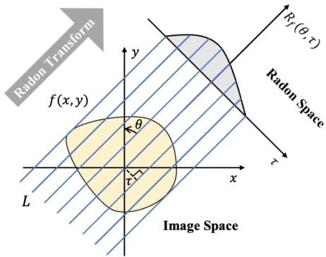<br />
Fig. 3. Graph illustration of RT, which demonstrates a single row of the SG with a constant θ after RT.</p>
<p>the origin to L. By formalizing the integral results into a 2-D function with the Radon parameter as axes, we have <math xmlns="http://www.w3.org/1998/Math/MathML" display="inline"><mrow><msub><mrow><mi mathvariant="script">R</mi></mrow><mrow><mi>f</mi></mrow></msub><mo stretchy="false">&#x00028;</mo><mi>L</mi><mo stretchy="false">&#x00029;</mo><mo>&#x0003D;</mo></mrow></math> <math xmlns="http://www.w3.org/1998/Math/MathML" display="inline"><mrow><msub><mrow><mi mathvariant="script">R</mi></mrow><mrow><mi>f</mi></mrow></msub><mo stretchy="false">&#x00028;</mo><mi>&#x003B8;</mi><mo>&#x0002C;</mo><mi>&#x003C4;</mi><mo stretchy="false">&#x00029;</mo></mrow></math> , namely SG. Specifically, the RT is calculated as</p>
<p><div class="math-block"><math xmlns="http://www.w3.org/1998/Math/MathML" display="block"><mrow><mtable><mtr><mtd columnalign="left"><mrow><mstyle displaystyle="true" scriptlevel="0"><msub><mrow><mi mathvariant="script">R</mi></mrow><mrow><mi>f</mi></mrow></msub><mo stretchy="false">&#x00028;</mo><mi>&#x003B8;</mi><mo>&#x0002C;</mo><mi>&#x003C4;</mi><mo stretchy="false">&#x00029;</mo><mo>&#x0003D;</mo><msub><mo>&#x0222B;</mo><mrow><mi>x</mi><mi>cos</mi><mi>&#x003B8;</mi><mo>&#x0002B;</mo><mi>y</mi><mi>sin</mi><mi>&#x003B8;</mi><mo>&#x0003D;</mo><mi>&#x003C4;</mi></mrow></msub><mi>f</mi><mo stretchy="false">&#x00028;</mo><mi>x</mi><mo>&#x0002C;</mo><mi>y</mi><mo stretchy="false">&#x00029;</mo><mi>d</mi><mi>x</mi><mi>d</mi><mi>y</mi></mstyle></mrow></mtd></mtr><mtr><mtd columnalign="left"><mrow><mstyle displaystyle="true" scriptlevel="0"><mo>&#x0003D;</mo><msubsup><mo>&#x0222B;</mo><mrow><mo>&#x02212;</mo><mo>&#x0221E;</mo></mrow><mrow><mo>&#x0221E;</mo></mrow></msubsup><msubsup><mo>&#x0222B;</mo><mrow><mo>&#x02212;</mo><mo>&#x0221E;</mo></mrow><mrow><mo>&#x0221E;</mo></mrow></msubsup><mi>f</mi><mo stretchy="false">&#x00028;</mo><mi>x</mi><mo>&#x0002C;</mo><mi>y</mi><mo stretchy="false">&#x00029;</mo><mi>&#x003B4;</mi><mo stretchy="false">&#x00028;</mo><mi>&#x003C4;</mi><mo>&#x02212;</mo><mi>x</mi><mi>cos</mi><mi>&#x003B8;</mi><mo>&#x02212;</mo><mi>y</mi><mi>sin</mi><mi>&#x003B8;</mi><mo stretchy="false">&#x00029;</mo><mi>d</mi><mi>x</mi><mi>d</mi><mi>y</mi></mstyle></mrow></mtd></mtr></mtable></mrow></math><span style="float:right;color:#8A8178">(6)</span></div></p>
<p>where <math xmlns="http://www.w3.org/1998/Math/MathML" display="inline"><mrow><mi>&#x003B4;</mi><mo stretchy="false">&#x00028;</mo><mo>&#x000B7;</mo><mo stretchy="false">&#x00029;</mo></mrow></math> is the Dirac delta function.</p>
<p>When the robot revisits the same place with different rotation α and translation <math xmlns="http://www.w3.org/1998/Math/MathML" display="inline"><mrow><mi>d</mi><mo>&#x0225C;</mo><mo stretchy="false">&#x00028;</mo><mi>&#x00394;</mi><mi>x</mi><mo>&#x0002C;</mo><mi>&#x00394;</mi><mi>y</mi><msup><mo stretchy="false">&#x00029;</mo><mrow><mi>T</mi></mrow></msup></mrow></math> , SG can reflect such relative pose as follows:</p>
<p>Rotation: A rotation of <math xmlns="http://www.w3.org/1998/Math/MathML" display="inline"><mrow><mi>f</mi><mo stretchy="false">&#x00028;</mo><mi>x</mi><mo>&#x0002C;</mo><mi>y</mi><mo stretchy="false">&#x00029;</mo></mrow></math> by a rotation angle α results in a circular shift along θ axis of SG:</p>
<p><div class="math-block"><math xmlns="http://www.w3.org/1998/Math/MathML" display="block"><mrow><msub><mrow><mi mathvariant="script">R</mi></mrow><mrow><mi>f</mi></mrow></msub><mo stretchy="false">&#x00028;</mo><mi>&#x003B8;</mi><mo>&#x0002C;</mo><mi>&#x003C4;</mi><mo stretchy="false">&#x00029;</mo><mover><mrow><mi>&#x027F6;</mi></mrow><mrow><mi>&#x003B1;</mi></mrow></mover><msub><mrow><mi mathvariant="script">R</mi></mrow><mrow><mi>f</mi></mrow></msub><mo stretchy="false">&#x00028;</mo><mi>&#x003B8;</mi><mo>&#x0002B;</mo><mi>&#x003B1;</mi><mo>&#x0002C;</mo><mi>&#x003C4;</mi><mo stretchy="false">&#x00029;</mo><mo>&#x0002E;</mo></mrow></math><span style="float:right;color:#8A8178">(7)</span></div></p>
<p>A rotation leads to a uniform shift along the θ axis of SG, which satisfies Definition 2 of rotation equivariance, arriving at the following result.</p>
<p>Lemma 1: SG is rotation equivariant.</p>
<p>Translation: Denote <math xmlns="http://www.w3.org/1998/Math/MathML" display="inline"><mrow><msub><mi>r</mi><mrow><mi>&#x003B8;</mi></mrow></msub></mrow></math> as a directional vector, i.e., <math xmlns="http://www.w3.org/1998/Math/MathML" display="inline"><mrow><msub><mrow><mi mathvariant="bold-italic">r</mi></mrow><mrow><mi>&#x003B8;</mi></mrow></msub><mo>&#x0225C;</mo><mo stretchy="false">&#x00028;</mo><mi>cos</mi><mi>&#x003B8;</mi><mo>&#x0002C;</mo><mi>sin</mi><mi>&#x003B8;</mi><msup><mo stretchy="false">&#x00029;</mo><mrow><mi>T</mi></mrow></msup></mrow></math> . A translation of <math xmlns="http://www.w3.org/1998/Math/MathML" display="inline"><mrow><mi>f</mi><mo stretchy="false">&#x00028;</mo><mi>x</mi><mo>&#x0002C;</mo><mi>y</mi><mo stretchy="false">&#x00029;</mo></mrow></math> by d results in an angle-dependent shift of τ parameter on SG</p>
<p><div class="math-block"><math xmlns="http://www.w3.org/1998/Math/MathML" display="block"><mrow><mtable><mtr><mtd columnalign="right"><mrow><msub><mrow><mi mathvariant="script">R</mi></mrow><mrow><mi>f</mi></mrow></msub><mo stretchy="false">&#x00028;</mo><mi>&#x003B8;</mi><mo>&#x0002C;</mo><mi>&#x003C4;</mi><mo stretchy="false">&#x00029;</mo><mover><mrow><mi>&#x027F6;</mi></mrow><mrow><mi>d</mi></mrow></mover><msub><mrow><mi mathvariant="script">R</mi></mrow><mrow><mi>f</mi></mrow></msub><mo stretchy="false">&#x00028;</mo><mi>&#x003B8;</mi><mo>&#x0002C;</mo><mi>&#x003C4;</mi><mo>&#x02212;</mo><msub><mi>r</mi><mrow><mi>&#x003B8;</mi></mrow></msub><mo>&#x000B7;</mo><mi>d</mi><mo stretchy="false">&#x00029;</mo><mo>&#x0002E;</mo></mrow></mtd></mtr></mtable></mrow></math><span style="float:right;color:#8A8178">(8)</span></div></p>
<p>Different from the rotation, translation leads to a nonuniform shift along the τ -axis of SG.</p>
<p>Pose: With both rotation α and translation d, SG can be described by combining (7) and (8), as follows:</p>
<p><div class="math-block"><math xmlns="http://www.w3.org/1998/Math/MathML" display="block"><mrow><mtable><mtr><mtd columnalign="right"><mrow><msub><mrow><mi mathvariant="script">R</mi></mrow><mrow><mi>f</mi></mrow></msub><mo stretchy="false">&#x00028;</mo><mi>&#x003B8;</mi><mo>&#x0002C;</mo><mi>&#x003C4;</mi><mo stretchy="false">&#x00029;</mo><mover><mstyle scriptlevel="0"><mo>&#x2192;</mo></mstyle><mpadded width="+0.833em" lspace="0.556em" voffset="-.2em" height="-.2em"><mrow><mi>&#x003B1;</mi><mo>&#x0002C;</mo><mi>d</mi></mrow><mspace depth=".25em" /></mpadded></mover><msub><mrow><mi mathvariant="script">R</mi></mrow><mrow><mi>f</mi></mrow></msub><mo stretchy="false">&#x00028;</mo><mi>&#x003B8;</mi><mo>&#x0002B;</mo><mi>&#x003B1;</mi><mo>&#x0002C;</mo><mi>&#x003C4;</mi><mo>&#x02212;</mo><msub><mi>r</mi><mrow><mi>&#x003B8;</mi><mo>&#x0002B;</mo><mi>&#x003B1;</mi></mrow></msub><mo>&#x000B7;</mo><mi>d</mi><mo stretchy="false">&#x00029;</mo><mo>&#x0002E;</mo></mrow></mtd></mtr></mtable></mrow></math><span style="float:right;color:#8A8178">(9)</span></div></p>
<p>3) Translation-Invariant Rotation-Equivariant Gram: To further eliminate the coupled effect of translation on the τ-axis of SG in (8), we apply row-wise 1-D DFT to SG along the τ -axis and then calculate the magnitude of the resultant frequency spectrum. We name this representation as TING, denoted as</p>
<p><math xmlns="http://www.w3.org/1998/Math/MathML" display="inline"><mrow><msub><mi>M</mi><mrow><mi>f</mi></mrow></msub><mo stretchy="false">&#x00028;</mo><mi>&#x003B8;</mi><mo>&#x0002C;</mo><mi>&#x003C9;</mi><mo stretchy="false">&#x00029;</mo></mrow></math> , where <math xmlns="http://www.w3.org/1998/Math/MathML" display="inline"><mrow><mi>&#x003C9;</mi></mrow></math> is the sampled frequency in the discrete frequency spectrum.</p>
<p>Lemma 2: TING is rotation equivariant and translation invariant.</p>
<p>Proof of Lemma 2: Suppose that <math xmlns="http://www.w3.org/1998/Math/MathML" display="inline"><mrow><msubsup><mi>M</mi><mrow><mi>f</mi></mrow><mrow><mi>&#x02032;</mi></mrow></msubsup><mo stretchy="false">&#x00028;</mo><mi>&#x003B8;</mi><mo>&#x0002C;</mo><mi>&#x003C9;</mi><mo stretchy="false">&#x00029;</mo></mrow></math> is the TING representation constructed from transformed BEV <math xmlns="http://www.w3.org/1998/Math/MathML" display="inline"><mrow><msup><mi>f</mi><mrow><mi>&#x02032;</mi></mrow></msup><mo stretchy="false">&#x00028;</mo><mi>x</mi><mo>&#x0002C;</mo><mi>y</mi><mo stretchy="false">&#x00029;</mo></mrow></math> by random translation d. Referring to the shift property of the Fourier transform, we have</p>
<p><div class="math-block"><math xmlns="http://www.w3.org/1998/Math/MathML" display="block"><mrow><mtable><mtr><mtd columnalign="right" /><mtd columnalign="left"><mrow><msubsup><mi>M</mi><mrow><mi>f</mi></mrow><mrow><mi>&#x02032;</mi></mrow></msubsup><mo stretchy="false">&#x00028;</mo><msub><mi>&#x003B8;</mi><mrow><mi>j</mi></mrow></msub><mo>&#x0002C;</mo><mi>&#x003C9;</mi><mo stretchy="false">&#x00029;</mo><mo>&#x0003D;</mo><mo stretchy="false">&#x0007C;</mo><mrow><mi mathvariant="script">F</mi></mrow><mo stretchy="false">&#x00028;</mo><msub><mi>R</mi><mrow><mi>f</mi></mrow></msub><mo stretchy="false">&#x00028;</mo><msub><mi>&#x003B8;</mi><mrow><mi>j</mi></mrow></msub><mo>&#x0002C;</mo><mi>&#x003C4;</mi><mo>&#x02212;</mo><msub><mi>r</mi><mrow><msub><mi>&#x003B8;</mi><mrow><mi>j</mi></mrow></msub></mrow></msub><mo>&#x000B7;</mo><mi>d</mi><mo stretchy="false">&#x00029;</mo><mo stretchy="false">&#x0007C;</mo></mrow></mtd></mtr><mtr><mtd columnalign="right" /><mtd columnalign="left"><mrow><mspace width="1em" /><mspace width="1em" /><mspace width="1em" /><mo>&#x0003D;</mo><mo stretchy="false">&#x0007C;</mo><mrow><mi mathvariant="script">F</mi></mrow><mo stretchy="false">&#x00028;</mo><msub><mi>R</mi><mrow><mi>f</mi></mrow></msub><mo stretchy="false">&#x00028;</mo><msub><mi>&#x003B8;</mi><mrow><mi>j</mi></mrow></msub><mo>&#x0002C;</mo><mi>&#x003C4;</mi><mo stretchy="false">&#x00029;</mo><mo stretchy="false">&#x00029;</mo><msup><mi>e</mi><mrow><mo>&#x02212;</mo><mi>i</mi><mn>2</mn><mi>&#x003C0;</mi><mi>w</mi><msub><mi>r</mi><mrow><msub><mi>&#x003B8;</mi><mrow><mi>j</mi></mrow></msub></mrow></msub><mo>&#x000B7;</mo><mi>d</mi></mrow></msup><mo stretchy="false">&#x0007C;</mo></mrow></mtd></mtr><mtr><mtd columnalign="right" /><mtd columnalign="left"><mrow><mspace width="1em" /><mspace width="1em" /><mspace width="1em" /><mo>&#x0003D;</mo><mo stretchy="false">&#x0007C;</mo><mrow><mi mathvariant="script">F</mi></mrow><mo stretchy="false">&#x00028;</mo><msub><mi>R</mi><mrow><mi>f</mi></mrow></msub><mo stretchy="false">&#x00028;</mo><msub><mi>&#x003B8;</mi><mrow><mi>j</mi></mrow></msub><mo>&#x0002C;</mo><mi>&#x003C4;</mi><mo stretchy="false">&#x00029;</mo><mo stretchy="false">&#x00029;</mo><mo stretchy="false">&#x0007C;</mo><mo stretchy="false">&#x0007C;</mo><msup><mi>e</mi><mrow><mo>&#x02212;</mo><mi>i</mi><mn>2</mn><mi>&#x003C0;</mi><mi>w</mi><msub><mi>r</mi><mrow><msub><mi>&#x003B8;</mi><mrow><mi>j</mi></mrow></msub></mrow></msub><mo>&#x000B7;</mo><mi>d</mi></mrow></msup><mo stretchy="false">&#x0007C;</mo></mrow></mtd></mtr><mtr><mtd columnalign="right" /><mtd columnalign="left"><mrow><mspace width="1em" /><mspace width="1em" /><mspace width="1em" /><mo>&#x0003D;</mo><mo stretchy="false">&#x0007C;</mo><mrow><mi mathvariant="script">F</mi></mrow><mo stretchy="false">&#x00028;</mo><msub><mi>R</mi><mrow><mi>f</mi></mrow></msub><mo stretchy="false">&#x00028;</mo><msub><mi>&#x003B8;</mi><mrow><mi>j</mi></mrow></msub><mo>&#x0002C;</mo><mi>&#x003C4;</mi><mo stretchy="false">&#x00029;</mo><mo stretchy="false">&#x00029;</mo><mo stretchy="false">&#x0007C;</mo></mrow></mtd></mtr><mtr><mtd columnalign="right" /><mtd columnalign="left"><mrow><mspace width="1em" /><mspace width="1em" /><mspace width="1em" /><mo>&#x0003D;</mo><msub><mi>M</mi><mrow><mi>f</mi></mrow></msub><mo stretchy="false">&#x00028;</mo><msub><mi>&#x003B8;</mi><mrow><mi>j</mi></mrow></msub><mo>&#x0002C;</mo><mi>&#x003C9;</mi><mo stretchy="false">&#x00029;</mo></mrow></mtd></mtr></mtable></mrow></math><span style="float:right;color:#8A8178">(10)</span></div></p>
<p>where <math xmlns="http://www.w3.org/1998/Math/MathML" display="inline"><mrow><mo stretchy="false">&#x0007C;</mo><mo>&#x000B7;</mo><mo stretchy="false">&#x0007C;</mo></mrow></math> is the operation of taking magnitude, <math xmlns="http://www.w3.org/1998/Math/MathML" display="inline"><mrow><mi mathvariant="script">F</mi><mo stretchy="false">&#x00028;</mo><mo>&#x000B7;</mo><mo stretchy="false">&#x00029;</mo></mrow></math> is the DFT operator, and <math xmlns="http://www.w3.org/1998/Math/MathML" display="inline"><mrow><msub><mi>&#x003B8;</mi><mrow><mi>j</mi></mrow></msub></mrow></math> means a row in SG and the same row in TING. Therefore, TING satisfies Definition 3 of translation invariance.</p>
<p>As we only apply DFT to the τ-axis of SG, the θ-axis of TING keeps the same as that of <math xmlns="http://www.w3.org/1998/Math/MathML" display="inline"><mrow><mo>SG</mo><mi>;</mi></mrow></math> thus, the rotation equivariance is reserved according to Lemma 1. </p>
<p>4) Roto-Translation-Invariant Gram: The final step of the representation pass is to eliminate the effect of rotation. According to (7), note that the rotation only leads to the cyclic shift of θ-axis of TING; we build the rotation-invariant representation in two steps. First, we employ a batch circular cross correlation between TING <math xmlns="http://www.w3.org/1998/Math/MathML" display="inline"><mrow><msub><mi>M</mi><mrow><mi>Q</mi></mrow></msub></mrow></math> of query scan <math xmlns="http://www.w3.org/1998/Math/MathML" display="inline"><mrow><msub><mi>P</mi><mrow><mi>Q</mi></mrow></msub></mrow></math> and TING <math xmlns="http://www.w3.org/1998/Math/MathML" display="inline"><mrow><msub><mi>M</mi><mrow><mi>i</mi></mrow></msub></mrow></math> of every map scan <math xmlns="http://www.w3.org/1998/Math/MathML" display="inline"><mrow><msub><mi>P</mi><mrow><mi>i</mi></mrow></msub></mrow></math> in M, resulting in a batch of correlation maps as</p>
<p><div class="math-block"><math xmlns="http://www.w3.org/1998/Math/MathML" display="block"><mrow><mtable><mtr><mtd columnalign="left"><mrow><mrow><mstyle displaystyle="true" scriptlevel="0"><msub><mrow><mrow><mi mathvariant="fraktur">C</mi></mrow></mrow><mrow><mi>i</mi></mrow></msub><mo stretchy="false">&#x00028;</mo><msub><mi>k</mi><mrow><mi>&#x003B8;</mi></mrow></msub><mo>&#x0002C;</mo><msub><mi>k</mi><mrow><mi>&#x003C9;</mi></mrow></msub><mo stretchy="false">&#x00029;</mo><mo>&#x0003D;</mo><msub><mi>M</mi><mrow><mi>Q</mi></mrow></msub><mo stretchy="false">&#x00028;</mo><mi>&#x003B8;</mi><mo>&#x0002C;</mo><mi>&#x003C9;</mi><mo stretchy="false">&#x00029;</mo><mo>&#x0002A;</mo><msub><mi>M</mi><mrow><mi>i</mi></mrow></msub><mo stretchy="false">&#x00028;</mo><mi>&#x003B8;</mi><mo>&#x0002C;</mo><mi>&#x003C9;</mi><mo stretchy="false">&#x00029;</mo></mstyle></mrow></mrow></mtd></mtr><mtr><mtd columnalign="left"><mrow><mrow><mstyle displaystyle="true" scriptlevel="0"><mspace width="2em" /><mo>&#x0003D;</mo><msub><mo>&#x02211;</mo><mrow><msub><mi>&#x003B8;</mi><mrow><mi>j</mi></mrow></msub></mrow></msub><msub><mo>&#x02211;</mo><mrow><msub><mi>&#x003C9;</mi><mrow><mi>m</mi></mrow></msub></mrow></msub><msub><mi>M</mi><mrow><mi>Q</mi></mrow></msub><mo stretchy="false">&#x00028;</mo><msub><mi>&#x003B8;</mi><mrow><mi>j</mi></mrow></msub><mo>&#x0002B;</mo><msub><mi>k</mi><mrow><mi>&#x003B8;</mi></mrow></msub><mo>&#x0002C;</mo><msub><mi>&#x003C9;</mi><mrow><mi>m</mi></mrow></msub><mo>&#x0002B;</mo><msub><mi>k</mi><mrow><mi>&#x003C9;</mi></mrow></msub><mo stretchy="false">&#x00029;</mo><msub><mi>M</mi><mrow><mi>i</mi></mrow></msub><mo stretchy="false">&#x00028;</mo><msub><mi>&#x003B8;</mi><mrow><mi>j</mi></mrow></msub><mo>&#x0002C;</mo><msub><mi>&#x003C9;</mi><mrow><mi>m</mi></mrow></msub><mo stretchy="false">&#x00029;</mo></mstyle></mrow></mrow></mtd></mtr></mtable></mrow></math><span style="float:right;color:#8A8178">(11)</span></div></p>
<p>where <math xmlns="http://www.w3.org/1998/Math/MathML" display="inline"><mrow><msub><mrow><mi mathvariant="fraktur">C</mi></mrow><mrow><mi>i</mi></mrow></msub><mo stretchy="false">&#x00028;</mo><msub><mi>k</mi><mrow><mi>&#x003B8;</mi></mrow></msub><mo>&#x0002C;</mo><msub><mi>k</mi><mrow><mi>&#x003C9;</mi></mrow></msub><mo stretchy="false">&#x00029;</mo></mrow></math> is the resultant 2-D correlation map, k<sub>θ</sub> and <math xmlns="http://www.w3.org/1998/Math/MathML" display="inline"><mrow><msub><mi>k</mi><mrow><mi>&#x003C9;</mi></mrow></msub></mrow></math> are the axes of the correlation map, and ∗ is the 2-D crosscorrelation operation between two images.</p>
<p>Since TING is translation invariant by Lemma 2, the ω-axis does not make any difference in 2-D cross-correlation calculation. Therefore, 2-D cross correlation between two TINGs can be reduced to 1-D cross correlation along the θ-axis, which is derived by substituting <math xmlns="http://www.w3.org/1998/Math/MathML" display="inline"><mrow><msub><mi>k</mi><mrow><mi>&#x003C9;</mi></mrow></msub><mo>&#x0003D;</mo><mn>0</mn></mrow></math> into (11) as follows:</p>
<p><div class="math-block"><math xmlns="http://www.w3.org/1998/Math/MathML" display="block"><mrow><mtable><mtr><mtd columnalign="left"><mrow><mrow><msub><mrow><mrow><mi mathvariant="fraktur">C</mi></mrow></mrow><mrow><mi>i</mi></mrow></msub><mo stretchy="false">&#x00028;</mo><msub><mi>k</mi><mrow><mi>&#x003B8;</mi></mrow></msub><mo stretchy="false">&#x00029;</mo><mo>&#x0003D;</mo><msub><mi>M</mi><mrow><mi>Q</mi></mrow></msub><mo stretchy="false">&#x00028;</mo><mi>&#x003B8;</mi><mo>&#x0002C;</mo><mi>&#x003C9;</mi><mo stretchy="false">&#x00029;</mo><mo>&#x022C6;</mo><msub><mi>M</mi><mrow><mi>i</mi></mrow></msub><mo stretchy="false">&#x00028;</mo><mi>&#x003B8;</mi><mo>&#x0002C;</mo><mi>&#x003C9;</mi><mo stretchy="false">&#x00029;</mo></mrow></mrow></mtd></mtr><mtr><mtd columnalign="left"><mrow><mrow><mtext>&#x000A0;</mtext><mstyle displaystyle="true" scriptlevel="0"><mo>&#x0003D;</mo><msub><mo>&#x02211;</mo><mrow><msub><mi>&#x003B8;</mi><mrow><mi>j</mi></mrow></msub></mrow></msub><msub><mo>&#x02211;</mo><mrow><msub><mi>&#x003C9;</mi><mrow><mi>m</mi></mrow></msub></mrow></msub><msub><mi>M</mi><mrow><mi>Q</mi></mrow></msub><mo stretchy="false">&#x00028;</mo><msub><mi>&#x003B8;</mi><mrow><mi>j</mi></mrow></msub><mo>&#x0002B;</mo><msub><mi>k</mi><mrow><mi>&#x003B8;</mi></mrow></msub><mo>&#x0002C;</mo><msub><mi>&#x003C9;</mi><mrow><mi>m</mi></mrow></msub><mo stretchy="false">&#x00029;</mo><msub><mi>M</mi><mrow><mi>i</mi></mrow></msub><mo stretchy="false">&#x00028;</mo><msub><mi>&#x003B8;</mi><mrow><mi>j</mi></mrow></msub><mo>&#x0002C;</mo><msub><mi>&#x003C9;</mi><mrow><mi>m</mi></mrow></msub><mo stretchy="false">&#x00029;</mo></mstyle></mrow></mrow></mtd></mtr><mtr><mtd columnalign="left"><mrow><mrow><mtext>&#x000A0;</mtext><mstyle displaystyle="true" scriptlevel="0"><mo>&#x0003D;</mo><msub><mo>&#x02211;</mo><mrow><msub><mi>&#x003B8;</mi><mrow><mi>j</mi></mrow></msub></mrow></msub><msub><mi>M</mi><mrow><mi>Q</mi></mrow></msub><mo stretchy="false">&#x00028;</mo><msub><mi>&#x003B8;</mi><mrow><mi>j</mi></mrow></msub><mo>&#x0002B;</mo><msub><mi>k</mi><mrow><mi>&#x003B8;</mi></mrow></msub><mo stretchy="false">&#x00029;</mo><msub><mi>M</mi><mrow><mi>i</mi></mrow></msub><mo stretchy="false">&#x00028;</mo><msub><mi>&#x003B8;</mi><mrow><mi>j</mi></mrow></msub><msup><mo stretchy="false">&#x00029;</mo><mrow><mi>T</mi></mrow></msup></mstyle></mrow></mrow></mtd></mtr></mtable></mrow></math><span style="float:right;color:#8A8178">(12)</span></div></p>
<p>where <math xmlns="http://www.w3.org/1998/Math/MathML" display="inline"><mrow><msub><mrow><mrow><mi mathvariant="fraktur">C</mi></mrow></mrow><mrow><mi>i</mi></mrow></msub><mo stretchy="false">&#x00028;</mo><msub><mi>k</mi><mrow><mi>&#x003B8;</mi></mrow></msub><mo stretchy="false">&#x00029;</mo></mrow></math> is the resultant 1-D correlation map, <math xmlns="http://www.w3.org/1998/Math/MathML" display="inline"><mrow><msub><mi>k</mi><mrow><mi>&#x003B8;</mi></mrow></msub></mrow></math> is the axis of <math xmlns="http://www.w3.org/1998/Math/MathML" display="inline"><mrow><msub><mrow><mrow><mi mathvariant="fraktur">C</mi></mrow></mrow><mrow><mi>i</mi></mrow></msub><mo stretchy="false">&#x00028;</mo><msub><mi>k</mi><mrow><mi>&#x003B8;</mi></mrow></msub><mo stretchy="false">&#x00029;</mo></mrow></math> , and  is the 1-D circular cross correlation that we derive from the 2-D one. Then, we take the max pooling on the correlation map C<sub>i</sub> of each TING pair <math xmlns="http://www.w3.org/1998/Math/MathML" display="inline"><mrow><mo stretchy="false">&#x00028;</mo><msub><mi>M</mi><mrow><mi>Q</mi></mrow></msub><mo>&#x0002C;</mo><msub><mi>M</mi><mrow><mi>i</mi></mrow></msub><mo stretchy="false">&#x00029;</mo></mrow></math> , comprising the final vector representation named RING <math xmlns="http://www.w3.org/1998/Math/MathML" display="inline"><mrow><msub><mi>N</mi><mrow><mi>Q</mi></mrow></msub><mo>&#x02208;</mo><msup><mrow><mi mathvariant="double-struck">R</mi></mrow><mrow><mo stretchy="false">&#x0007C;</mo><mrow><mi mathvariant="fraktur">M</mi></mrow><mo stretchy="false">&#x0007C;</mo></mrow></msup></mrow></math></p>
<p><div class="math-block"><math xmlns="http://www.w3.org/1998/Math/MathML" display="block"><mrow><msub><mi>N</mi><mrow><mi>Q</mi><mo>&#x0002C;</mo><mi>i</mi></mrow></msub><mo>&#x0003D;</mo><msub><mo movablelimits="true">max</mo><mrow><msub><mi>k</mi><mrow><mi>&#x003B8;</mi></mrow></msub></mrow></msub><msub><mrow><mi mathvariant="fraktur">C</mi></mrow><mrow><mi>i</mi></mrow></msub><mo stretchy="false">&#x00028;</mo><msub><mi>k</mi><mrow><mi>&#x003B8;</mi></mrow></msub><mo stretchy="false">&#x00029;</mo></mrow></math><span style="float:right;color:#8A8178">(13)</span></div></p>
<p>where <math xmlns="http://www.w3.org/1998/Math/MathML" display="inline"><mrow><msub><mi>N</mi><mrow><mi>Q</mi><mo>&#x0002C;</mo><mi>i</mi></mrow></msub></mrow></math> is the ith element of <math xmlns="http://www.w3.org/1998/Math/MathML" display="inline"><mrow><msub><mi>N</mi><mrow><mi>Q</mi></mrow></msub></mrow></math> . Then, we arrive at the first theorem.</p>
<p>Theorem 1: RING is roto-translation invariant.</p>
<p>Proof of Theorem 1: Applying the rotation α and translation d to <math xmlns="http://www.w3.org/1998/Math/MathML" display="inline"><mrow><msub><mi>P</mi><mrow><mi>Q</mi></mrow></msub></mrow></math> , we denote the resultant SG as <math xmlns="http://www.w3.org/1998/Math/MathML" display="inline"><mrow><msubsup><mi>R</mi><mrow><mi>Q</mi></mrow><mrow><mi>&#x02032;</mi></mrow></msubsup></mrow></math> as (9):</p>
<p><div class="math-block"><math xmlns="http://www.w3.org/1998/Math/MathML" display="block"><mrow><msubsup><mi>R</mi><mrow><mi>Q</mi></mrow><mrow><mi>&#x02032;</mi></mrow></msubsup><mo stretchy="false">&#x00028;</mo><mi>&#x003B8;</mi><mo>&#x0002C;</mo><mi>&#x003C4;</mi><mo stretchy="false">&#x00029;</mo><mo>&#x0003D;</mo><msub><mi>R</mi><mrow><mi>Q</mi></mrow></msub><mo stretchy="false">&#x00028;</mo><mi>&#x003B8;</mi><mo>&#x0002B;</mo><mi>&#x003B1;</mi><mo>&#x0002C;</mo><mi>&#x003C4;</mi><mo>&#x02212;</mo><msub><mi>r</mi><mrow><mi>&#x003B8;</mi><mo>&#x0002B;</mo><mi>&#x003B1;</mi></mrow></msub><mo>&#x000B7;</mo><mi>d</mi><mo stretchy="false">&#x00029;</mo><mo>&#x0002E;</mo></mrow></math><span style="float:right;color:#8A8178">(14)</span></div></p>
<p>Based on Lemma <math xmlns="http://www.w3.org/1998/Math/MathML" display="inline"><mrow><msup><mi /><mrow><mn>2</mn><mo>&#x0002C;</mo></mrow></msup></mrow></math> the TING <math xmlns="http://www.w3.org/1998/Math/MathML" display="inline"><mrow><msubsup><mi>M</mi><mrow><mi>Q</mi></mrow><mrow><mi>&#x02032;</mi></mrow></msubsup></mrow></math> of transformed SG <math xmlns="http://www.w3.org/1998/Math/MathML" display="inline"><mrow><msubsup><mi>R</mi><mrow><mi>Q</mi></mrow><mrow><mi>&#x02032;</mi></mrow></msubsup></mrow></math></p>
<p><div class="math-block"><math xmlns="http://www.w3.org/1998/Math/MathML" display="block"><mrow><mtable><mtr><mtd columnalign="right" /><mtd columnalign="left"><mrow><msubsup><mi>M</mi><mrow><mi>Q</mi></mrow><mrow><mi>&#x02032;</mi></mrow></msubsup><mo stretchy="false">&#x00028;</mo><msub><mi>&#x003B8;</mi><mrow><mi>j</mi></mrow></msub><mo>&#x0002C;</mo><mi>&#x003C9;</mi><mo stretchy="false">&#x00029;</mo><mo>&#x0003D;</mo><mo>&#x0007C;</mo><mrow><mi mathvariant="script">F</mi></mrow><mo stretchy="false">&#x00028;</mo><msubsup><mi>R</mi><mrow><mi>Q</mi></mrow><mrow><mi>&#x02032;</mi></mrow></msubsup><mo stretchy="false">&#x00028;</mo><msub><mi>&#x003B8;</mi><mrow><mi>j</mi></mrow></msub><mo>&#x0002C;</mo><mi>&#x003C4;</mi><mo stretchy="false">&#x00029;</mo><mo stretchy="false">&#x00029;</mo><mo>&#x0007C;</mo></mrow></mtd></mtr><mtr><mtd columnalign="right" /><mtd columnalign="left"><mrow><mspace width="1em" /><mspace width="1em" /><mspace width="1em" /><mo>&#x0003D;</mo><mo>&#x0007C;</mo><mrow><mi mathvariant="script">F</mi></mrow><mo stretchy="false">&#x00028;</mo><msub><mi>R</mi><mrow><mi>Q</mi></mrow></msub><mo stretchy="false">&#x00028;</mo><msub><mi>&#x003B8;</mi><mrow><mi>j</mi></mrow></msub><mo>&#x0002B;</mo><mi>&#x003B1;</mi><mo>&#x0002C;</mo><mi>&#x003C4;</mi><mo>&#x02212;</mo><msub><mi>r</mi><mrow><msub><mi>&#x003B8;</mi><mrow><mi>j</mi></mrow></msub><mo>&#x0002B;</mo><mi>&#x003B1;</mi></mrow></msub><mo>&#x000B7;</mo><mi>d</mi><mo stretchy="false">&#x00029;</mo><mo stretchy="false">&#x00029;</mo><mo>&#x0007C;</mo></mrow></mtd></mtr><mtr><mtd columnalign="right" /><mtd columnalign="left"><mrow><mspace width="1em" /><mspace width="1em" /><mspace width="1em" /><mo>&#x0003D;</mo><msub><mi>M</mi><mrow><mi>Q</mi></mrow></msub><mo stretchy="false">&#x00028;</mo><msub><mi>&#x003B8;</mi><mrow><mi>j</mi></mrow></msub><mo>&#x0002B;</mo><mi>&#x003B1;</mi><mo>&#x0002C;</mo><mi>&#x003C9;</mi><mo stretchy="false">&#x00029;</mo><mo>&#x0002E;</mo></mrow></mtd></mtr></mtable></mrow></math><span style="float:right;color:#8A8178">(15)</span></div></p>
<p>The correlation map between <math xmlns="http://www.w3.org/1998/Math/MathML" display="inline"><mrow><msubsup><mi>M</mi><mrow><mi>Q</mi></mrow><mrow><mi>&#x02032;</mi></mrow></msubsup></mrow></math> and <math xmlns="http://www.w3.org/1998/Math/MathML" display="inline"><mrow><msub><mi>M</mi><mrow><mi>i</mi></mrow></msub></mrow></math> is formulated as</p>
<p><div class="math-block"><math xmlns="http://www.w3.org/1998/Math/MathML" display="block"><mrow><mtable><mtr><mtd columnalign="left"><mrow><msubsup><mrow><mi mathvariant="fraktur">C</mi></mrow><mrow><mi>i</mi></mrow><mrow><mi>&#x02032;</mi></mrow></msubsup><mo stretchy="false">&#x00028;</mo><msub><mi>k</mi><mrow><mi>&#x003B8;</mi></mrow></msub><mo stretchy="false">&#x00029;</mo><mo>&#x0003D;</mo><msubsup><mi>M</mi><mrow><mi>Q</mi></mrow><mrow><mi>&#x02032;</mi></mrow></msubsup><mo stretchy="false">&#x00028;</mo><mi>&#x003B8;</mi><mo>&#x0002C;</mo><mi>&#x003C9;</mi><mo stretchy="false">&#x00029;</mo><mo>&#x022C6;</mo><msub><mi>M</mi><mrow><mi>i</mi></mrow></msub><mo stretchy="false">&#x00028;</mo><mi>&#x003B8;</mi><mo>&#x0002C;</mo><mi>&#x003C9;</mi><mo stretchy="false">&#x00029;</mo></mrow></mtd></mtr><mtr><mtd columnalign="left"><mrow><mspace width="1em" /><mspace width="1em" /><mo>&#x0003D;</mo><msub><mi>M</mi><mrow><mi>Q</mi></mrow></msub><mo stretchy="false">&#x00028;</mo><mi>&#x003B8;</mi><mo>&#x0002B;</mo><mi>&#x003B1;</mi><mo>&#x0002C;</mo><mi>&#x003C9;</mi><mo stretchy="false">&#x00029;</mo><mo>&#x022C6;</mo><msub><mi>M</mi><mrow><mi>i</mi></mrow></msub><mo stretchy="false">&#x00028;</mo><mi>&#x003B8;</mi><mo>&#x0002C;</mo><mi>&#x003C9;</mi><mo stretchy="false">&#x00029;</mo></mrow></mtd></mtr><mtr><mtd columnalign="left"><mrow><mspace width="1em" /><mo>&#x0003D;</mo><msub><mrow><mi mathvariant="fraktur">C</mi></mrow><mrow><mi>i</mi></mrow></msub><mo stretchy="false">&#x00028;</mo><msub><mi>k</mi><mrow><mi>&#x003B8;</mi></mrow></msub><mo>&#x0002B;</mo><mi>&#x003B1;</mi><mo stretchy="false">&#x00029;</mo><mo>&#x0002E;</mo></mrow></mtd></mtr></mtable></mrow></math><span style="float:right;color:#8A8178">(16)</span></div></p>
<p>Based on (16), the invariance of maximum value with respect to the shift leads to the equality between RING <math xmlns="http://www.w3.org/1998/Math/MathML" display="inline"><mrow><msub><mi>N</mi><mrow><mi>Q</mi></mrow></msub></mrow></math> and RING <math xmlns="http://www.w3.org/1998/Math/MathML" display="inline"><mrow><msubsup><mi>N</mi><mrow><mi>Q</mi></mrow><mrow><mi>&#x02032;</mi></mrow></msubsup></mrow></math> derived as</p>
<p><div class="math-block"><math xmlns="http://www.w3.org/1998/Math/MathML" display="block"><mrow><msub><mi>N</mi><mrow><mi>Q</mi><mo>&#x0002C;</mo><mi>i</mi></mrow></msub><mo>&#x0003D;</mo><msub><mo movablelimits="true">max</mo><mrow><msub><mi>k</mi><mrow><mi>&#x003B8;</mi></mrow></msub></mrow></msub><msub><mrow><mi mathvariant="fraktur">C</mi></mrow><mrow><mi>i</mi></mrow></msub><mo stretchy="false">&#x00028;</mo><msub><mi>k</mi><mrow><mi>&#x003B8;</mi></mrow></msub><mo stretchy="false">&#x00029;</mo><mo>&#x0003D;</mo><msub><mo movablelimits="true">max</mo><mrow><msub><mi>k</mi><mrow><mi>&#x003B8;</mi></mrow></msub></mrow></msub><msub><mrow><mi mathvariant="fraktur">C</mi></mrow><mrow><mi>i</mi></mrow></msub><mo stretchy="false">&#x00028;</mo><msub><mi>k</mi><mrow><mi>&#x003B8;</mi></mrow></msub><mo>&#x0002B;</mo><mi>&#x003B1;</mi><mo stretchy="false">&#x00029;</mo><mo>&#x0003D;</mo><msubsup><mi>N</mi><mrow><mi>Q</mi><mo>&#x0002C;</mo><mi>i</mi></mrow><mrow><mi>&#x02032;</mi></mrow></msubsup><mo>&#x0002E;</mo></mrow></math><span style="float:right;color:#8A8178">(17)</span></div></p>
<p>Thus, RING is roto-translation invariant.</p>
<p>Now, we summarize the representations in forward representation pass in brief: the rotation-equivariant SG, the rotation-equivariant and translation-invariant TING, and the roto-translation-invariant RING. RING of a scan stays the same even if large viewpoint changes are present.</p>
<h2>B. Solving Pass</h2>
<p>1) Place Recognition: Put Theorem 1 in a real scenario. Due to the finite scan range occlusion, the invariance of RING cannot be guaranteed when translation is significant with respect to the scan range occlusion. Therefore, we have RING that is invariant given an arbitrary rotation change, but gradually degenerated with respect to larger translation changes. Following this result, we can set the range of a place by measuring the change of RING. On the other hand, the density of the place for successful global localization is able to reflect the robustness against the difference between the trajectory in the query and mapping session.</p>
<p>Based on the difference between RINGs of query and map scans, we can retrieve the minimum one as the place n where the query scan lies, arriving at place recognition:</p>
<p><div class="math-block"><math xmlns="http://www.w3.org/1998/Math/MathML" display="block"><mrow><mi>n</mi><mo>&#x0003D;</mo><mi>\arg</mi><msub><mo movablelimits="true">min</mo><mrow><mi>i</mi></mrow></msub><mo fence="false" stretchy="false">&#x02016;</mo><msub><mi>N</mi><mrow><mi>Q</mi></mrow></msub><mo>&#x02212;</mo><msub><mi>N</mi><mrow><mi>i</mi></mrow></msub><mo fence="false" stretchy="false">&#x02016;</mo><mo>&#x0002E;</mo></mrow></math><span style="float:right;color:#8A8178">(18)</span></div></p>
<p>In (18), the computation complexity of one RING N is <math xmlns="http://www.w3.org/1998/Math/MathML" display="inline"><mrow><mi>O</mi><mo stretchy="false">&#x00028;</mo><mo stretchy="false">&#x0007C;</mo><mrow><mi mathvariant="fraktur">M</mi></mrow><mo stretchy="false">&#x0007C;</mo><mo stretchy="false">&#x00029;</mo></mrow></math> , proportional to the number of map scans. To calculate all map RINGs <math xmlns="http://www.w3.org/1998/Math/MathML" display="inline"><mrow><msub><mi>N</mi><mrow><mi>i</mi></mrow></msub></mrow></math> , the total computation complexity is <math xmlns="http://www.w3.org/1998/Math/MathML" display="inline"><mrow><mi>O</mi><mo stretchy="false">&#x00028;</mo><mo stretchy="false">&#x0007C;</mo><mrow><mi mathvariant="fraktur">M</mi></mrow><msup><mo stretchy="false">&#x0007C;</mo><mrow><mn>2</mn></mrow></msup><mo stretchy="false">&#x00029;</mo></mrow></math> ), which may not be affordable for onboard processing in a large-scale environment.</p>
<p>To reduce the computation, we introduce an approximation to (18) by checking the maximum element in <math xmlns="http://www.w3.org/1998/Math/MathML" display="inline"><mrow><msub><mi>N</mi><mrow><mi>Q</mi></mrow></msub></mrow></math></p>
<p><div class="math-block"><math xmlns="http://www.w3.org/1998/Math/MathML" display="block"><mrow><mi>n</mi><mo>&#x0003D;</mo><mi>\arg</mi><msub><mo movablelimits="true">max</mo><mrow><mi>i</mi></mrow></msub><msub><mover><mrow><mi>N</mi></mrow><mo stretchy="false">&#x0007E;</mo></mover><mrow><mi>Q</mi><mo>&#x0002C;</mo><mi>i</mi></mrow></msub></mrow></math><span style="float:right;color:#8A8178">(19)</span></div></p>
<p>where <math xmlns="http://www.w3.org/1998/Math/MathML" display="inline"><mrow><mover><mrow><mi>N</mi></mrow><mo stretchy="false">&#x0007E;</mo></mover></mrow></math> is the normalized RING calculated from normalized TING M<sup>˜</sup> with zero mean and unit variance. The aim of normalization is to eliminate the effect from the finite scan range, e.g., number of valid scan points. With the help of normalization, we only need to calculate the current query RING <math xmlns="http://www.w3.org/1998/Math/MathML" display="inline"><mrow><msub><mi>N</mi><mrow><mi>Q</mi></mrow></msub></mrow></math> instead of all map RINGs for place recognition. Consequently, the computation complexity is reduced from <math xmlns="http://www.w3.org/1998/Math/MathML" display="inline"><mrow><mi>O</mi><mo stretchy="false">&#x00028;</mo><mo stretchy="false">&#x0007C;</mo><mrow><mi mathvariant="fraktur">M</mi></mrow><msup><mo stretchy="false">&#x0007C;</mo><mrow><mn>2</mn></mrow></msup><mo stretchy="false">&#x00029;</mo></mrow></math> to O(|M|). In this way, we avoid the computation and storage of RINGs for all map scans. The equivalence between (18) and (19) is proved in Appendix A of the supplementary material in [44]. We show that the prerequisite for (19) is practical in real applications and, hence, is employed in the experiments.</p>
<p>2) Pose Estimation: After place recognition, we estimate the relative pose <math xmlns="http://www.w3.org/1998/Math/MathML" display="inline"><mrow><msub><mi>T</mi><mrow><mi>n</mi><mi>Q</mi></mrow></msub></mrow></math> between <math xmlns="http://www.w3.org/1998/Math/MathML" display="inline"><mrow><msub><mi>P</mi><mrow><mi>Q</mi></mrow></msub></mrow></math> and <math xmlns="http://www.w3.org/1998/Math/MathML" display="inline"><mrow><msub><mi>P</mi><mrow><mi>n</mi></mrow></msub></mrow></math> . Denote <math xmlns="http://www.w3.org/1998/Math/MathML" display="inline"><mrow><msub><mi>f</mi><mrow><mi>n</mi></mrow></msub></mrow></math> and <math xmlns="http://www.w3.org/1998/Math/MathML" display="inline"><mrow><msub><mi>M</mi><mrow><mi>n</mi></mrow></msub></mrow></math> as the BEV and TING of the retrieved map scan <math xmlns="http://www.w3.org/1998/Math/MathML" display="inline"><mrow><msub><mi>P</mi><mrow><mi>n</mi></mrow></msub><mo>&#x0002C;</mo></mrow></math> , respectively. Given the local planar ground surface [45], the relative pitch, roll, and height between the query and map pose should be small. Therefore, we first estimate a reduced three-DoF relative pose globally without initial value, comprising one-DoF rotation α and two-DoF planar translation <math xmlns="http://www.w3.org/1998/Math/MathML" display="inline"><mrow><mi>d</mi><mo>&#x0002C;</mo></mrow></math> and then estimate the six-DoF relative pose with the resultant three-DoF relative pose as an initial value. To address the first step, we leverage TING to estimate rotation α, which is then utilized to compensate BEV for the estimation of translation d. For the second step, with the pose above as the initial value, we refine the metric pose using iterative closest point (ICP) [46].</p>
<p>a) Rotation estimation: Rotation estimation is achieved based on the TING. In (13), the maximum value occurs when <math xmlns="http://www.w3.org/1998/Math/MathML" display="inline"><mrow><msub><mi>M</mi><mrow><mi>Q</mi></mrow></msub></mrow></math> is equal to <math xmlns="http://www.w3.org/1998/Math/MathML" display="inline"><mrow><msub><mi>M</mi><mrow><mi>n</mi></mrow></msub></mrow></math> . Given correct place recognition, as TING is translation invariant according to Lemma <math xmlns="http://www.w3.org/1998/Math/MathML" display="inline"><mrow><mn>2</mn><mo>&#x0002C;</mo><msub><mi>M</mi><mrow><mi>Q</mi></mrow></msub></mrow></math> and <math xmlns="http://www.w3.org/1998/Math/MathML" display="inline"><mrow><msub><mi>M</mi><mrow><mi>n</mi></mrow></msub></mrow></math> should be related by a relative rotation, and the equality is achieved when the shift k<sub>θ</sub> equals the real relative rotation.</p>
<p>Therefore, we regard the shift achieving the maximum value along the θ-axis as the estimation of relative rotation between <math xmlns="http://www.w3.org/1998/Math/MathML" display="inline"><mrow><msub><mi>P</mi><mrow><mi>Q</mi></mrow></msub></mrow></math> and <math xmlns="http://www.w3.org/1998/Math/MathML" display="inline"><mrow><msub><mi>P</mi><mrow><mi>n</mi></mrow></msub></mrow></math> , denoted as αˆ:</p>
<p><div class="math-block"><math xmlns="http://www.w3.org/1998/Math/MathML" display="block"><mrow><mover accent="true"><mrow><mi>&#x003B1;</mi></mrow><mo>&#x0005E;</mo></mover><mo>&#x0003D;</mo><mi>\arg</mi><msub><mo movablelimits="true">max</mo><mrow><msub><mi>k</mi><mrow><mi>&#x003B8;</mi></mrow></msub></mrow></msub><msub><mover><mrow><mrow><mi mathvariant="fraktur">C</mi></mrow></mrow><mo stretchy="false">&#x0007E;</mo></mover><mrow><mi>n</mi></mrow></msub><mo stretchy="false">&#x00028;</mo><msub><mi>k</mi><mrow><mi>&#x003B8;</mi></mrow></msub><mo stretchy="false">&#x00029;</mo></mrow></math><span style="float:right;color:#8A8178">(20)</span></div></p>
<p>where <math xmlns="http://www.w3.org/1998/Math/MathML" display="inline"><mrow><mover><mrow><mrow><mi mathvariant="fraktur">C</mi></mrow></mrow><mo stretchy="false">&#x0007E;</mo></mover></mrow></math> is the normalized correlation map calculated from the normalized TING M<sup>˜</sup> . Normalization is employed to relieve the effect of finite scan range and discretization in practice. It is important that the estimator be globally convergent without dependence on any initial values. It is actually an exhaustive search, thus keeping the optimality. With the aid of fast Fourier transform (FFT) and parallel computing, this exhaustive process is fast. Refer to Appendix B of the supplementary material in [44] for derivation.</p>
<p>b) Translation estimation: Based on the rotation estimation, we can rotate the BEV <math xmlns="http://www.w3.org/1998/Math/MathML" display="inline"><mrow><mi>f</mi><mo stretchy="false">&#x00028;</mo><mi>x</mi><mo>&#x0002C;</mo><mi>y</mi><mo stretchy="false">&#x00029;</mo></mrow></math> by −αˆ to eliminate the relative rotation between <math xmlns="http://www.w3.org/1998/Math/MathML" display="inline"><mrow><msub><mi>f</mi><mrow><mi>Q</mi></mrow></msub><mo stretchy="false">&#x00028;</mo><mi>x</mi><mo>&#x0002C;</mo><mi>y</mi><mo stretchy="false">&#x00029;</mo></mrow></math> and <math xmlns="http://www.w3.org/1998/Math/MathML" display="inline"><mrow><msub><mi>f</mi><mrow><mi>n</mi></mrow></msub><mo stretchy="false">&#x00028;</mo><mi>x</mi><mo>&#x0002C;</mo><mi>y</mi><mo stretchy="false">&#x00029;</mo></mrow></math> , yielding a compensated BEV <math xmlns="http://www.w3.org/1998/Math/MathML" display="inline"><mrow><msubsup><mi>f</mi><mrow><mi>n</mi></mrow><mrow><mi>&#x02032;</mi></mrow></msubsup><mo stretchy="false">&#x00028;</mo><mi>x</mi><mo>&#x0002C;</mo><mi>y</mi><mo stretchy="false">&#x00029;</mo></mrow></math> . With the rotation variance eliminated,</p>
<p>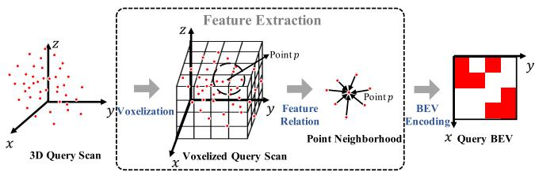<br />
Fig. 4. Feature extraction module achieved by BEV representation in our method. In the representation pass, we first voxelize a raw 3-D scan into voxels and extract the features of every point from its nearest neighbors, yielding the final BEV by accumulating the features along the dimension of height.</p>
<p>2-D cross correlation can be applied to solve the translation</p>
<p><div class="math-block"><math xmlns="http://www.w3.org/1998/Math/MathML" display="block"><mrow><msub><mrow><mi mathvariant="fraktur">C</mi></mrow><mrow><mi>n</mi></mrow></msub><mo stretchy="false">&#x00028;</mo><msub><mi>k</mi><mrow><mi>x</mi></mrow></msub><mo>&#x0002C;</mo><msub><mi>k</mi><mrow><mi>y</mi></mrow></msub><mo stretchy="false">&#x00029;</mo><mo>&#x0003D;</mo><msub><mi>f</mi><mrow><mi>Q</mi></mrow></msub><mo stretchy="false">&#x00028;</mo><mi>x</mi><mo>&#x0002C;</mo><mi>y</mi><mo stretchy="false">&#x00029;</mo><mo>&#x0002A;</mo><msubsup><mi>f</mi><mrow><mi>n</mi></mrow><mrow><mi>&#x02032;</mi></mrow></msubsup><mo stretchy="false">&#x00028;</mo><mi>x</mi><mo>&#x0002C;</mo><mi>y</mi><mo stretchy="false">&#x00029;</mo></mrow></math><span style="float:right;color:#8A8178">(21)</span></div></p>
<p>where <math xmlns="http://www.w3.org/1998/Math/MathML" display="inline"><mrow><mrow><mi mathvariant="fraktur">C</mi></mrow><mo stretchy="false">&#x00028;</mo><msub><mi>k</mi><mrow><mi>x</mi></mrow></msub><mo>&#x0002C;</mo><msub><mi>k</mi><mrow><mi>y</mi></mrow></msub><mo stretchy="false">&#x00029;</mo></mrow></math> is the correlation map of two BEVs. <math xmlns="http://www.w3.org/1998/Math/MathML" display="inline"><mrow><msub><mi>k</mi><mrow><mi>x</mi></mrow></msub></mrow></math> and <math xmlns="http://www.w3.org/1998/Math/MathML" display="inline"><mrow><msub><mi>k</mi><mrow><mi>y</mi></mrow></msub></mrow></math> are the axes ofthe correlation map. As for rotation, the maximum correlation in (21) should peak at the real relative translation. Denoting the estimated translation in correlation map as <math xmlns="http://www.w3.org/1998/Math/MathML" display="inline"><mrow><mover accent="true"><mrow><mi>d</mi></mrow><mo>&#x0005E;</mo></mover><mo>&#x0002C;</mo></mrow></math> we have</p>
<p><div class="math-block"><math xmlns="http://www.w3.org/1998/Math/MathML" display="block"><mrow><mover accent="true"><mrow><mi>d</mi></mrow><mo>&#x0005E;</mo></mover><mo>&#x0003D;</mo><mi>\arg</mi><msub><mo movablelimits="true">max</mo><mrow><msub><mi>k</mi><mrow><mi>x</mi></mrow></msub><mo>&#x0002C;</mo><msub><mi>k</mi><mrow><mi>y</mi></mrow></msub></mrow></msub><msub><mrow><mi mathvariant="fraktur">C</mi></mrow><mrow><mi>n</mi></mrow></msub><mo stretchy="false">&#x00028;</mo><msub><mi>k</mi><mrow><mi>x</mi></mrow></msub><mo>&#x0002C;</mo><msub><mi>k</mi><mrow><mi>y</mi></mrow></msub><mo stretchy="false">&#x00029;</mo><mo>&#x0002E;</mo></mrow></math><span style="float:right;color:#8A8178">(22)</span></div></p>
<p>Benefiting from the cross correlation, the translation estimation is globally convergent.</p>
<p>c) Refinement: With the rotation αˆ and translation <math xmlns="http://www.w3.org/1998/Math/MathML" display="inline"><mrow><mover accent="true"><mrow><mi>d</mi></mrow><mo>&#x0005E;</mo></mover></mrow></math> estimated above, an initial value is built by setting the relative pitch, roll, and height with zeros. Theoretically, the estimation accuracy is up to the resolution of the BEV and RT, thus keeping the convergence of the local refinement algorithm with high probability. In this article, ICP is employed for refinement. Finally, we arrive at the six-DoF pose <math xmlns="http://www.w3.org/1998/Math/MathML" display="inline"><mrow><msub><mover accent="true"><mrow><mi>T</mi></mrow><mo>&#x0005E;</mo></mover><mrow><mi>n</mi><mi>Q</mi></mrow></msub></mrow></math> , which is further applied to <math xmlns="http://www.w3.org/1998/Math/MathML" display="inline"><mrow><msub><mi>T</mi><mrow><mi>n</mi></mrow></msub></mrow></math> as the query pose estimation <math xmlns="http://www.w3.org/1998/Math/MathML" display="inline"><mrow><msub><mover accent="true"><mrow><mi>T</mi></mrow><mo>&#x0005E;</mo></mover><mrow><mi>Q</mi></mrow></msub></mrow></math></p>
<h2>C. Perspective of Feature Aggregation</h2>
<p>A typical pipeline [37] for representation in place recognition consists of feature extraction and feature aggregation. In feature extraction, local features of sparse keypoints [33], [34], [35], [47] or dense points [10] are extracted, which is fed to the feature aggregation module to build a global feature for the scan, say global max pooling, GeM pooling [41], or VLAD [37], [48], etc.</p>
<p>Our method also fits the pipeline; the representation pass illustrated in Fig. 2 consists of both feature extraction and feature aggregation. Specifically, the feature extraction module is achieved by BEV representation from a raw scan, as illustrated in Fig. 4, and the feature aggregation module is achieved by RT and FFT operations. The advantage of the proposed feature aggregation is the representation property, which is roto-translation invariant for place recognition, and equivariant for pose estimation. As a general feature aggregation <math xmlns="http://www.w3.org/1998/Math/MathML" display="inline"><mrow><mi>g</mi><mo stretchy="false">&#x00028;</mo><mo>&#x000B7;</mo><mo stretchy="false">&#x00029;</mo></mrow></math> , the feature extraction part can be switched to others, which is discussed in the next section.</p>
<h2>V. MULTICHANNEL FRAMEWORK</h2>
<p>An intuitive improvement is to replace the simple binary BEV feature with one that takes more structured information in the height dimension. Naturally, we investigate the question: what</p>
<p>are the requirements for feature extraction that is able to preserve the equivariance/invariance of SG, TING, and RING?</p>
<h2>A. Feature Extraction</h2>
<p>We begin with the second theorem to present sufficient conditions for feature extraction.</p>
<p>Theorem 2: Let <math xmlns="http://www.w3.org/1998/Math/MathML" display="inline"><mrow><mi>E</mi><mo stretchy="false">&#x00028;</mo><mo>&#x000B7;</mo><mo stretchy="false">&#x00029;</mo></mrow></math> be a feature extractor, and <math xmlns="http://www.w3.org/1998/Math/MathML" display="inline"><mrow><mi>g</mi><mo stretchy="false">&#x00028;</mo><mo>&#x000B7;</mo><mo stretchy="false">&#x00029;</mo></mrow></math> be a roto-translation-invariant feature aggregation. Then, the representation produced by <math xmlns="http://www.w3.org/1998/Math/MathML" display="inline"><mrow><mi>g</mi><mo stretchy="false">&#x00028;</mo><mi>E</mi><mo stretchy="false">&#x00028;</mo><mo>&#x000B7;</mo><mo stretchy="false">&#x00029;</mo><mo stretchy="false">&#x00029;</mo></mrow></math> preserves both translation and rotation invariance if both of the following requirements are satisfied.</p>
<p>1) The translation of <math xmlns="http://www.w3.org/1998/Math/MathML" display="inline"><mrow><mi>E</mi><mo stretchy="false">&#x00028;</mo><mo>&#x000B7;</mo><mo stretchy="false">&#x00029;</mo></mrow></math> is either equivariant or invariant.</p>
<p>2) The rotation of <math xmlns="http://www.w3.org/1998/Math/MathML" display="inline"><mrow><mi>E</mi><mo stretchy="false">&#x00028;</mo><mo>&#x000B7;</mo><mo stretchy="false">&#x00029;</mo></mrow></math> is either equivariant or invariant.</p>
<p>ProofofTheorem 2: Let <math xmlns="http://www.w3.org/1998/Math/MathML" display="inline"><mrow><mi>P</mi></mrow></math> be a point cloud as the initial input of <math xmlns="http://www.w3.org/1998/Math/MathML" display="inline"><mrow><mi>E</mi><mo stretchy="false">&#x00028;</mo><mo>&#x000B7;</mo><mo stretchy="false">&#x00029;</mo></mrow></math> . Utilizing the feature aggregation method <math xmlns="http://www.w3.org/1998/Math/MathML" display="inline"><mrow><mi>g</mi><mo stretchy="false">&#x00028;</mo><mo>&#x000B7;</mo><mo stretchy="false">&#x00029;</mo></mrow></math> to the features exploited by the feature extractor <math xmlns="http://www.w3.org/1998/Math/MathML" display="inline"><mrow><mi>E</mi><mo stretchy="false">&#x00028;</mo><mo>&#x000B7;</mo><mo stretchy="false">&#x00029;</mo></mrow></math> , we can obtain the aggregated result <math xmlns="http://www.w3.org/1998/Math/MathML" display="inline"><mrow><mi>g</mi><mo stretchy="false">&#x00028;</mo><mi>E</mi><mo stretchy="false">&#x00028;</mo><mi>P</mi><mo stretchy="false">&#x00029;</mo><mo stretchy="false">&#x00029;</mo></mrow></math> . Since <math xmlns="http://www.w3.org/1998/Math/MathML" display="inline"><mrow><mi>g</mi><mo stretchy="false">&#x00028;</mo><mo>&#x000B7;</mo><mo stretchy="false">&#x00029;</mo></mrow></math> is invariant to both translation and rotation, <math xmlns="http://www.w3.org/1998/Math/MathML" display="inline"><mrow><mi>g</mi><mo stretchy="false">&#x00028;</mo><mi>E</mi><mo stretchy="false">&#x00028;</mo><mi>P</mi><mo stretchy="false">&#x00029;</mo><mo stretchy="false">&#x00029;</mo><mo>&#x0003D;</mo><mi>g</mi><mo stretchy="false">&#x00028;</mo><msub><mi>E</mi><mrow><mi>d</mi></mrow></msub><mo stretchy="false">&#x00028;</mo><mi>P</mi><mo stretchy="false">&#x00029;</mo><mo stretchy="false">&#x00029;</mo></mrow></math> by Definition 3 and <math xmlns="http://www.w3.org/1998/Math/MathML" display="inline"><mrow><mi>g</mi><mo stretchy="false">&#x00028;</mo><mi>E</mi><mo stretchy="false">&#x00028;</mo><mi>P</mi><mo stretchy="false">&#x00029;</mo><mo stretchy="false">&#x00029;</mo><mo>&#x0003D;</mo><mi>g</mi><mo stretchy="false">&#x00028;</mo><msub><mi>E</mi><mrow><mi>&#x003B1;</mi></mrow></msub><mo stretchy="false">&#x00028;</mo><mi>P</mi><mo stretchy="false">&#x00029;</mo><mo stretchy="false">&#x00029;</mo></mrow></math> by Definition 4. Theorem 2 includes a total of four cases, so we divide the proof into four subproofs corresponding to the four cases. We only demonstrate one case here; the other three cases can be found in Appendix C of the supplementary material in [44].</p>
<p>Case 1: If <math xmlns="http://www.w3.org/1998/Math/MathML" display="inline"><mrow><mi>E</mi><mo stretchy="false">&#x00028;</mo><mo>&#x000B7;</mo><mo stretchy="false">&#x00029;</mo></mrow></math> is equivariant to both translation and rotation, then <math xmlns="http://www.w3.org/1998/Math/MathML" display="inline"><mrow><msub><mi>E</mi><mrow><mi>d</mi></mrow></msub><mo stretchy="false">&#x00028;</mo><mi>P</mi><mo stretchy="false">&#x00029;</mo><mo>&#x0003D;</mo><mi>E</mi><mo stretchy="false">&#x00028;</mo><msub><mi>P</mi><mrow><mi>d</mi></mrow></msub><mo stretchy="false">&#x00029;</mo></mrow></math> by Definition 1 and <math xmlns="http://www.w3.org/1998/Math/MathML" display="inline"><mrow><msub><mi>E</mi><mrow><mi>&#x003B1;</mi></mrow></msub><mo stretchy="false">&#x00028;</mo><mi>P</mi><mo stretchy="false">&#x00029;</mo><mo>&#x0003D;</mo><mi>E</mi><mo stretchy="false">&#x00028;</mo><msub><mi>P</mi><mrow><mi>&#x003B1;</mi></mrow></msub><mo stretchy="false">&#x00029;</mo></mrow></math> by Definition 2.</p>
<p>Combining <math xmlns="http://www.w3.org/1998/Math/MathML" display="inline"><mrow><msub><mi>E</mi><mrow><mi>d</mi></mrow></msub><mo stretchy="false">&#x00028;</mo><mi>P</mi><mo stretchy="false">&#x00029;</mo><mo>&#x0003D;</mo><mi>E</mi><mo stretchy="false">&#x00028;</mo><msub><mi>P</mi><mrow><mi>d</mi></mrow></msub><mo stretchy="false">&#x00029;</mo></mrow></math> and <math xmlns="http://www.w3.org/1998/Math/MathML" display="inline"><mrow><mi>g</mi><mo stretchy="false">&#x00028;</mo><mi>E</mi><mo stretchy="false">&#x00028;</mo><mi>P</mi><mo stretchy="false">&#x00029;</mo><mo stretchy="false">&#x00029;</mo><mo>&#x0003D;</mo><mi>g</mi><mo stretchy="false">&#x00028;</mo><msub><mi>E</mi><mrow><mi>d</mi></mrow></msub><mo stretchy="false">&#x00028;</mo><mi>P</mi><mo stretchy="false">&#x00029;</mo><mo stretchy="false">&#x00029;</mo></mrow></math> , we have</p>
<p><div class="math-block"><math xmlns="http://www.w3.org/1998/Math/MathML" display="block"><mrow><mi>g</mi><mo stretchy="false">&#x00028;</mo><mi>E</mi><mo stretchy="false">&#x00028;</mo><mi>P</mi><mo stretchy="false">&#x00029;</mo><mo stretchy="false">&#x00029;</mo><mo>&#x0003D;</mo><mi>g</mi><mo stretchy="false">&#x00028;</mo><msub><mi>E</mi><mrow><mi>d</mi></mrow></msub><mo stretchy="false">&#x00028;</mo><mi>P</mi><mo stretchy="false">&#x00029;</mo><mo stretchy="false">&#x00029;</mo><mo>&#x0003D;</mo><mi>g</mi><mo stretchy="false">&#x00028;</mo><mi>E</mi><mo stretchy="false">&#x00028;</mo><msub><mi>P</mi><mrow><mi>d</mi></mrow></msub><mo stretchy="false">&#x00029;</mo><mo stretchy="false">&#x00029;</mo><mo>&#x0002E;</mo></mrow></math><span style="float:right;color:#8A8178">(23)</span></div></p>
<p>Combining <math xmlns="http://www.w3.org/1998/Math/MathML" display="inline"><mrow><msub><mi>E</mi><mrow><mi>&#x003B1;</mi></mrow></msub><mo stretchy="false">&#x00028;</mo><mi>P</mi><mo stretchy="false">&#x00029;</mo><mo>&#x0003D;</mo><mi>E</mi><mo stretchy="false">&#x00028;</mo><msub><mi>P</mi><mrow><mi>&#x003B1;</mi></mrow></msub><mo stretchy="false">&#x00029;</mo></mrow></math> and <math xmlns="http://www.w3.org/1998/Math/MathML" display="inline"><mrow><mi>g</mi><mo stretchy="false">&#x00028;</mo><mi>E</mi><mo stretchy="false">&#x00028;</mo><mi>P</mi><mo stretchy="false">&#x00029;</mo><mo stretchy="false">&#x00029;</mo><mo>&#x0003D;</mo><mi>g</mi><mo stretchy="false">&#x00028;</mo><msub><mi>E</mi><mrow><mi>&#x003B1;</mi></mrow></msub><mo stretchy="false">&#x00028;</mo><mi>P</mi><mo stretchy="false">&#x00029;</mo><mo stretchy="false">&#x00029;</mo></mrow></math> , we have</p>
<p><div class="math-block"><math xmlns="http://www.w3.org/1998/Math/MathML" display="block"><mrow><mi>g</mi><mo stretchy="false">&#x00028;</mo><mi>E</mi><mo stretchy="false">&#x00028;</mo><mi>P</mi><mo stretchy="false">&#x00029;</mo><mo stretchy="false">&#x00029;</mo><mo>&#x0003D;</mo><mi>g</mi><mo stretchy="false">&#x00028;</mo><msub><mi>E</mi><mrow><mi>&#x003B1;</mi></mrow></msub><mo stretchy="false">&#x00028;</mo><mi>P</mi><mo stretchy="false">&#x00029;</mo><mo stretchy="false">&#x00029;</mo><mo>&#x0003D;</mo><mi>g</mi><mo stretchy="false">&#x00028;</mo><mi>E</mi><mo stretchy="false">&#x00028;</mo><msub><mi>P</mi><mrow><mi>&#x003B1;</mi></mrow></msub><mo stretchy="false">&#x00029;</mo><mo stretchy="false">&#x00029;</mo><mo>&#x0002E;</mo></mrow></math><span style="float:right;color:#8A8178">(24)</span></div></p>
<p>Referring to Definitions 3 and 4, we can conclude that the final representation <math xmlns="http://www.w3.org/1998/Math/MathML" display="inline"><mrow><mi>g</mi><mo stretchy="false">&#x00028;</mo><mi>E</mi><mo stretchy="false">&#x00028;</mo><mi>P</mi><mo stretchy="false">&#x00029;</mo><mo stretchy="false">&#x00029;</mo></mrow></math> ) is translation invariant and rotation invariant. </p>
<p>As stated in Theorem 1, the proposed aggregation method <math xmlns="http://www.w3.org/1998/Math/MathML" display="inline"><mrow><mi>g</mi><mo stretchy="false">&#x00028;</mo><mo>&#x000B7;</mo><mo stretchy="false">&#x00029;</mo></mrow></math> possesses translation and rotation invariance, which satisfies the requirement of an aggregation method in Theorem 2. Thus, we build rotation- and translation-equivariant features to preserve the property of the aggregation. We select six rotation- and translation-equivariant features from previous literature [15] shown in Table I. Note that popular features such as Harris3D [47], SIFT3D [49], FPFH [34], and SHOT [18] can also fit in the framework, some ofwhich are leveraged for ablation study in Section VII-E. Specifically, the local feature is built in two steps. First, we downsample the original scan with a given voxel size, i.e., 0.1 m, and for each point <math xmlns="http://www.w3.org/1998/Math/MathML" display="inline"><mrow><mi>p</mi></mrow></math> in the scan, we extract features from its 30 nearest neighbors, as shown in Table I. Then, we accumulate the point features along the dimension of height. Specifically, for all point features belonging to the same BEV grid, we use the channelwise max pooling, resulting in a six-channel BEV, <math xmlns="http://www.w3.org/1998/Math/MathML" display="inline"><mrow><mi>f</mi><mo stretchy="false">&#x00028;</mo><mi>x</mi><mo>&#x0002C;</mo><mi>y</mi><mo stretchy="false">&#x00029;</mo><mo>&#x02208;</mo><msup><mrow><mi mathvariant="double-struck">R</mi></mrow><mrow><mn>6</mn></mrow></msup></mrow></math> . Denote each channel of <math xmlns="http://www.w3.org/1998/Math/MathML" display="inline"><mrow><mi>f</mi><mo stretchy="false">&#x00028;</mo><mi>x</mi><mo>&#x0002C;</mo><mi>y</mi><mo stretchy="false">&#x00029;</mo></mrow></math> as <math xmlns="http://www.w3.org/1998/Math/MathML" display="inline"><mrow><msub><mi>f</mi><mrow><mi>c</mi></mrow></msub><mo stretchy="false">&#x00028;</mo><mi>x</mi><mo>&#x0002C;</mo><mi>y</mi><mo stretchy="false">&#x00029;</mo><mo>&#x02208;</mo><mrow><mi mathvariant="double-struck">R</mi></mrow></mrow></math> , where <math xmlns="http://www.w3.org/1998/Math/MathML" display="inline"><mrow><mi>c</mi><mo>&#x02208;</mo><mo stretchy="false">&#x0007B;</mo><mn>1</mn><mo>&#x0002C;</mo><mn>2</mn><mo>&#x0002C;</mo><mn>3</mn><mo>&#x0002C;</mo><mn>4</mn><mo>&#x0002C;</mo><mn>5</mn><mo>&#x0002C;</mo><mn>6</mn><mo stretchy="false">&#x0007D;</mo></mrow></math> indicates the channel dimension. Compared with the occupancy, this feature better encodes the information in the height dimension such as the building facade.</p>
<p>TABLE I EXTRACTED FEATURES OF RING++</p>
<table><tr><td>Feature</td><td>Formulation</td></tr><tr><td>Change of curvature</td><td> <math xmlns="http://www.w3.org/1998/Math/MathML" display="inline"><mrow><mfrac><mrow><msub><mi>&#x003BB;</mi><mrow><mn>3</mn></mrow></msub></mrow><mrow><msubsup><mo>&#x02211;</mo><mrow><mi>j</mi><mo>&#x0003D;</mo><mn>1</mn></mrow><mrow><mn>3</mn></mrow></msubsup><msub><mi>&#x003BB;</mi><mrow><mi>j</mi></mrow></msub></mrow></mfrac></mrow></math> </td></tr><tr><td>Omnivariance</td><td> <math xmlns="http://www.w3.org/1998/Math/MathML" display="inline"><mrow><mroot><mrow><msubsup><mo>&#x0220F;</mo><mrow><mn>3</mn></mrow><mrow><mi>j</mi><mo>&#x0003D;</mo><mn>1</mn></mrow></msubsup><msub><mi>&#x003BB;</mi><mrow><mi>j</mi></mrow></msub></mrow><mn>3</mn></mroot></mrow></math> </td></tr><tr><td>Eigenvalue entropy</td><td> <math xmlns="http://www.w3.org/1998/Math/MathML" display="inline"><mrow><mover><mrow><mover><mrow><mrow><msubsup><mo>&#x02211;</mo><mrow><mi>j</mi><mo>&#x0003D;</mo><mn>1</mn></mrow><mrow><mn>3</mn></mrow></msubsup><msub><mi>&#x003BB;</mi><mrow><mi>j</mi></mrow></msub></mrow></mrow><mo accent="true">&#x02015;</mo></mover></mrow><mo>&#x002D9;</mo></mover></mrow></math>   <math xmlns="http://www.w3.org/1998/Math/MathML" display="inline"><mrow><mo>&#x02212;</mo><mstyle displaystyle="false" scriptlevel="0"><msubsup><mo>&#x02211;</mo><mrow><mi>j</mi><mo>&#x0003D;</mo><mn>1</mn></mrow><mrow><mn>3</mn></mrow></msubsup><mo stretchy="false">&#x00028;</mo><msub><mi>&#x003BB;</mi><mrow><mi>j</mi></mrow></msub><mi>ln</mi><msub><mi>&#x003BB;</mi><mrow><mi>j</mi></mrow></msub><mo stretchy="false">&#x00029;</mo></mstyle></mrow></math> </td></tr><tr><td>2-D linearity</td><td> <math xmlns="http://www.w3.org/1998/Math/MathML" display="inline"><mrow><mfrac><mrow><msub><mi>&#x003BB;</mi><mrow><mn>2</mn><mi>D</mi><mo>&#x0002C;</mo><mn>2</mn></mrow></msub></mrow><mrow><msub><mi>&#x003BB;</mi><mrow><mn>2</mn><mi>D</mi><mo>&#x0002C;</mo><mn>1</mn></mrow></msub></mrow></mfrac></mrow></math> </td></tr><tr><td>Maximum height difference</td><td> <math xmlns="http://www.w3.org/1998/Math/MathML" display="inline"><mrow><msub><mi>Z</mi><mrow><mrow><mi mathvariant="normal">m</mi><mi mathvariant="normal">a</mi><mi mathvariant="normal">x</mi></mrow></mrow></msub><mo>&#x02212;</mo><msub><mi>Z</mi><mrow><mrow><mi mathvariant="normal">m</mi><mi mathvariant="normal">i</mi><mi mathvariant="normal">n</mi></mrow></mrow></msub></mrow></math> </td></tr><tr><td>Height variance</td><td> $\begin{array} { r } { \sum _ { k = 1 } ^ { 3 0 } \frac { ( Z _ { k } - \frac { \sum _ { k = 1 } ^ { 3 0 } Z _ { k } } { 3 0 } ) ^ { 2 } } { 3 0 } } \end{array}$ </td></tr></table>

<p>λ1 ≥ λ2 ≥ λ3 ≥ 0 represents the ordered eigenvalues of the symmetric positive-definite covariance matrix of the neighborhood.</p>
<p>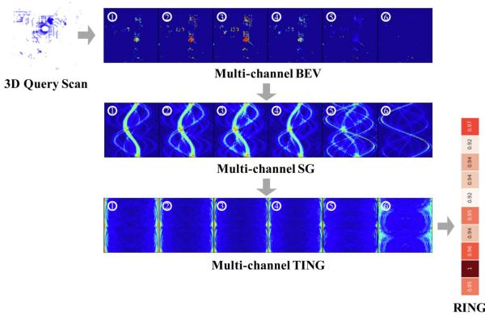<br />
Fig. 5. Visualization of the multichannel representation pass. With six extracted local features, the corresponding BEV, SG, and TING are six-channel.</p>
<p>After feature extraction, we embark on feature aggregation, following the same pipeline demonstrated in Section IV to represent. One remaining problem is to aggregate the multichannel feature into one for solving.</p>
<h2>B. Multichannel Representation Pass</h2>
<p>For clear demonstration, we visualize the multichannel representation pass in Fig. 5. Based on the six-channel BEV <math xmlns="http://www.w3.org/1998/Math/MathML" display="inline"><mrow><mi>f</mi><mo stretchy="false">&#x00028;</mo><mi>x</mi><mo>&#x0002C;</mo><mi>y</mi><mo stretchy="false">&#x00029;</mo></mrow></math> we apply RT to each BEV channel <math xmlns="http://www.w3.org/1998/Math/MathML" display="inline"><mrow><msub><mi>f</mi><mrow><mi>c</mi></mrow></msub><mo stretchy="false">&#x00028;</mo><mi>x</mi><mo>&#x0002C;</mo><mi>y</mi><mo stretchy="false">&#x00029;</mo></mrow></math> , yielding an SG channel <math xmlns="http://www.w3.org/1998/Math/MathML" display="inline"><mrow><msub><mi>R</mi><mrow><msub><mi>f</mi><mrow><mi>c</mi></mrow></msub></mrow></msub><mo stretchy="false">&#x00028;</mo><mi>&#x003B8;</mi><mo>&#x0002C;</mo><mi>&#x003C4;</mi><mo stretchy="false">&#x00029;</mo></mrow></math> . By concatenating all <math xmlns="http://www.w3.org/1998/Math/MathML" display="inline"><mrow><msub><mi>R</mi><mrow><msub><mi>f</mi><mrow><mi>c</mi></mrow></msub></mrow></msub><mo stretchy="false">&#x00028;</mo><mi>&#x003B8;</mi><mo>&#x0002C;</mo><mi>&#x003C4;</mi><mo stretchy="false">&#x00029;</mo></mrow></math> along channel dimension c, we can obtain a six-channel SG <math xmlns="http://www.w3.org/1998/Math/MathML" display="inline"><mrow><msub><mi>R</mi><mrow><mi>f</mi></mrow></msub><mo stretchy="false">&#x00028;</mo><mi>&#x003B8;</mi><mo>&#x0002C;</mo><mi>&#x003C4;</mi><mo stretchy="false">&#x00029;</mo></mrow></math></p>
<p>After that, we employ row-wise DFT to <math xmlns="http://www.w3.org/1998/Math/MathML" display="inline"><mrow><msub><mi>R</mi><mrow><msub><mi>f</mi><mrow><mi>c</mi></mrow></msub></mrow></msub><mo stretchy="false">&#x00028;</mo><mi>&#x003B8;</mi><mo>&#x0002C;</mo><mi>&#x003C4;</mi><mo stretchy="false">&#x00029;</mo></mrow></math> and take the magnitude spectrum of the result, denoted as <math xmlns="http://www.w3.org/1998/Math/MathML" display="inline"><mrow><msub><mi>M</mi><mrow><msub><mi>f</mi><mrow><mi>c</mi></mrow></msub></mrow></msub><mo stretchy="false">&#x00028;</mo><mi>&#x003B8;</mi><mo>&#x0002C;</mo><mi>&#x003C9;</mi><mo stretchy="false">&#x00029;</mo></mrow></math> , to achieve translation invariance. In the same manner, we concatenate all <math xmlns="http://www.w3.org/1998/Math/MathML" display="inline"><mrow><msub><mi>M</mi><mrow><msub><mi>f</mi><mrow><mi>c</mi></mrow></msub></mrow></msub><mo stretchy="false">&#x00028;</mo><mi>&#x003B8;</mi><mo>&#x0002C;</mo><mi>&#x003C9;</mi><mo stretchy="false">&#x00029;</mo></mrow></math> along c dimension, yielding a six-channel TING <math xmlns="http://www.w3.org/1998/Math/MathML" display="inline"><mrow><msub><mi>M</mi><mrow><mi>f</mi></mrow></msub><mo stretchy="false">&#x00028;</mo><mi>&#x003B8;</mi><mo>&#x0002C;</mo><mi>&#x003C9;</mi><mo stretchy="false">&#x00029;</mo></mrow></math></p>
<p>Next, we implement 1-D circular cross correlation between query TING <math xmlns="http://www.w3.org/1998/Math/MathML" display="inline"><mrow><msub><mi>M</mi><mrow><mi>Q</mi></mrow></msub><mo stretchy="false">&#x00028;</mo><mi>&#x003B8;</mi><mo>&#x0002C;</mo><mi>&#x003C9;</mi><mo stretchy="false">&#x00029;</mo></mrow></math> and all map TINGs <math xmlns="http://www.w3.org/1998/Math/MathML" display="inline"><mrow><msub><mi>M</mi><mrow><mi>i</mi></mrow></msub><mo stretchy="false">&#x00028;</mo><mi>&#x003B8;</mi><mo>&#x0002C;</mo><mi>&#x003C9;</mi><mo stretchy="false">&#x00029;</mo></mrow></math> . For each channel TING pair <math xmlns="http://www.w3.org/1998/Math/MathML" display="inline"><mrow><mo stretchy="false">&#x00028;</mo><msub><mi>M</mi><mrow><msub><mi>Q</mi><mrow><mi>c</mi></mrow></msub></mrow></msub><mo stretchy="false">&#x00028;</mo><mi>&#x003B8;</mi><mo>&#x0002C;</mo><mi>&#x003C9;</mi><mo stretchy="false">&#x00029;</mo><mo>&#x0002C;</mo><msub><mi>M</mi><mrow><msub><mi>i</mi><mrow><mi>c</mi></mrow></msub></mrow></msub><mo stretchy="false">&#x00028;</mo><mi>&#x003B8;</mi><mo>&#x0002C;</mo><mi>&#x003C9;</mi><mo stretchy="false">&#x00029;</mo><mo stretchy="false">&#x00029;</mo></mrow></math> , we can get a 1-D correlation map <math xmlns="http://www.w3.org/1998/Math/MathML" display="inline"><mrow><msub><mrow><mrow><mi mathvariant="fraktur">C</mi></mrow></mrow><mrow><msub><mi>i</mi><mrow><mi>c</mi></mrow></msub></mrow></msub><mo stretchy="false">&#x00028;</mo><msub><mi>k</mi><mrow><mi>&#x003B8;</mi></mrow></msub><mo stretchy="false">&#x00029;</mo></mrow></math></p>
<p><div class="math-block"><math xmlns="http://www.w3.org/1998/Math/MathML" display="block"><mrow><mtable><mtr><mtd columnalign="left"><mrow><mstyle displaystyle="true" scriptlevel="0"><msub><mrow><mi mathvariant="fraktur">C</mi></mrow><mrow><msub><mi>i</mi><mrow><mi>c</mi></mrow></msub></mrow></msub><mo stretchy="false">&#x00028;</mo><msub><mi>k</mi><mrow><mi>&#x003B8;</mi></mrow></msub><mo stretchy="false">&#x00029;</mo><mo>&#x0003D;</mo><msub><mi>M</mi><mrow><msub><mi>Q</mi><mrow><mi>c</mi></mrow></msub></mrow></msub><mo stretchy="false">&#x00028;</mo><mi>&#x003B8;</mi><mo>&#x0002C;</mo><mi>&#x003C9;</mi><mo stretchy="false">&#x00029;</mo><mo>&#x022C6;</mo><msub><mi>M</mi><mrow><msub><mi>i</mi><mrow><mi>c</mi></mrow></msub></mrow></msub><mo stretchy="false">&#x00028;</mo><mi>&#x003B8;</mi><mo>&#x0002C;</mo><mi>&#x003C9;</mi><mo stretchy="false">&#x00029;</mo></mstyle></mrow></mtd></mtr><mtr><mtd columnalign="left"><mrow><mstyle displaystyle="true" scriptlevel="0"><mo>&#x0003D;</mo><msub><mo>&#x02211;</mo><mrow><msub><mi>&#x003B8;</mi><mrow><mi>j</mi></mrow></msub></mrow></msub><msub><mi>M</mi><mrow><msub><mi>Q</mi><mrow><mi>c</mi></mrow></msub></mrow></msub><mo stretchy="false">&#x00028;</mo><msub><mi>&#x003B8;</mi><mrow><mi>j</mi></mrow></msub><mo>&#x0002B;</mo><msub><mi>k</mi><mrow><mi>&#x003B8;</mi></mrow></msub><mo stretchy="false">&#x00029;</mo><msub><mi>M</mi><mrow><msub><mi>i</mi><mrow><mi>c</mi></mrow></msub></mrow></msub><mo stretchy="false">&#x00028;</mo><msub><mi>&#x003B8;</mi><mrow><mi>j</mi></mrow></msub><msup><mo stretchy="false">&#x00029;</mo><mrow><mi>T</mi></mrow></msup><mo>&#x0002E;</mo></mstyle></mrow></mtd></mtr></mtable></mrow></math><span style="float:right;color:#8A8178">(25)</span></div></p>
<p>Then, we sum all <math xmlns="http://www.w3.org/1998/Math/MathML" display="inline"><mrow><msub><mrow><mrow><mi mathvariant="fraktur">C</mi></mrow></mrow><mrow><msub><mi>i</mi><mrow><mi>c</mi></mrow></msub></mrow></msub><mo stretchy="false">&#x00028;</mo><msub><mi>k</mi><mrow><mi>&#x003B8;</mi></mrow></msub><mo stretchy="false">&#x00029;</mo></mrow></math> along c dimension, generating a single-channel 1-D correlation map <math xmlns="http://www.w3.org/1998/Math/MathML" display="inline"><mrow><msub><mrow><mrow><mi mathvariant="fraktur">C</mi></mrow></mrow><mrow><mi>i</mi></mrow></msub><mo stretchy="false">&#x00028;</mo><msub><mi>k</mi><mrow><mi>&#x003B8;</mi></mrow></msub><mo stretchy="false">&#x00029;</mo></mrow></math></p>
<p><div class="math-block"><math xmlns="http://www.w3.org/1998/Math/MathML" display="block"><mrow><msub><mrow><mi mathvariant="fraktur">C</mi></mrow><mrow><mi>i</mi></mrow></msub><mo stretchy="false">&#x00028;</mo><msub><mi>k</mi><mrow><mi>&#x003B8;</mi></mrow></msub><mo stretchy="false">&#x00029;</mo><mo>&#x0003D;</mo><munderover><mo>&#x02211;</mo><mrow><mi>c</mi><mo>&#x0003D;</mo><mn>1</mn></mrow><mrow><mn>6</mn></mrow></munderover><msub><mrow><mi mathvariant="fraktur">C</mi></mrow><mrow><msub><mi>i</mi><mrow><mi>c</mi></mrow></msub></mrow></msub><mo stretchy="false">&#x00028;</mo><msub><mi>k</mi><mrow><mi>&#x003B8;</mi></mrow></msub><mo stretchy="false">&#x00029;</mo><mo>&#x0002E;</mo></mrow></math><span style="float:right;color:#8A8178">(26)</span></div></p>
<p>Finally, we take the maximum value of <math xmlns="http://www.w3.org/1998/Math/MathML" display="inline"><mrow><msub><mrow><mrow><mi mathvariant="fraktur">C</mi></mrow></mrow><mrow><mi>i</mi></mrow></msub><mo stretchy="false">&#x00028;</mo><msub><mi>k</mi><mrow><mi>&#x003B8;</mi></mrow></msub><mo stretchy="false">&#x00029;</mo></mrow></math> as the ith element of the final representation RING <math xmlns="http://www.w3.org/1998/Math/MathML" display="inline"><mrow><msub><mi>N</mi><mrow><mi>Q</mi></mrow></msub></mrow></math> , which is the same as (13).</p>
<h2>C. Multichannel Solving Pass</h2>
<p>In the solving pass, we perform place recognition with rototranslation-invariant global descriptor RING <math xmlns="http://www.w3.org/1998/Math/MathML" display="inline"><mrow><msub><mi>N</mi><mrow><mi>Q</mi></mrow></msub></mrow></math> first. Utilizing the same operation in (19), we retrieve the closest map scan <math xmlns="http://www.w3.org/1998/Math/MathML" display="inline"><mrow><msub><mi>P</mi><mrow><mi>n</mi></mrow></msub></mrow></math> from M by finding the index of the maximum element in <math xmlns="http://www.w3.org/1998/Math/MathML" display="inline"><mrow><msub><mover><mrow><mi>N</mi></mrow><mo stretchy="false">&#x0007E;</mo></mover><mrow><mi>Q</mi></mrow></msub></mrow></math></p>
<p>Then, we carry out pose estimation including three steps: rotation estimation, translation estimation, and refinement. Taking advantage of the summed correlation map <math xmlns="http://www.w3.org/1998/Math/MathML" display="inline"><mrow><msub><mrow><mrow><mi mathvariant="fraktur">C</mi></mrow></mrow><mrow><mi>n</mi></mrow></msub><mo stretchy="false">&#x00028;</mo><msub><mi>k</mi><mrow><mi>&#x003B8;</mi></mrow></msub><mo stretchy="false">&#x00029;</mo></mrow></math> between the query TING <math xmlns="http://www.w3.org/1998/Math/MathML" display="inline"><mrow><msub><mi>M</mi><mrow><mi>Q</mi></mrow></msub></mrow></math> and the retrieved map scan TING <math xmlns="http://www.w3.org/1998/Math/MathML" display="inline"><mrow><msub><mi>M</mi><mrow><mi>n</mi></mrow></msub></mrow></math> , the relative rotation can be easily estimated by (20), which is the optimal shift when <math xmlns="http://www.w3.org/1998/Math/MathML" display="inline"><mrow><msub><mi>M</mi><mrow><mi>Q</mi></mrow></msub></mrow></math> best aligns with <math xmlns="http://www.w3.org/1998/Math/MathML" display="inline"><mrow><msub><mi>M</mi><mrow><mi>n</mi></mrow></msub></mrow></math> . To solve the relative translation d, we begin with compensating the BEV <math xmlns="http://www.w3.org/1998/Math/MathML" display="inline"><mrow><msub><mi>f</mi><mrow><mi>Q</mi></mrow></msub><mo stretchy="false">&#x00028;</mo><mi>x</mi><mo>&#x0002C;</mo><mi>y</mi><mo stretchy="false">&#x00029;</mo></mrow></math> via rotating <math xmlns="http://www.w3.org/1998/Math/MathML" display="inline"><mrow><msub><mi>f</mi><mrow><mi>n</mi></mrow></msub><mo stretchy="false">&#x00028;</mo><mi>x</mi><mo>&#x0002C;</mo><mi>y</mi><mo stretchy="false">&#x00029;</mo></mrow></math> by −αˆ. Under the multichannel framework, we first calculate the correlation map of each channel <math xmlns="http://www.w3.org/1998/Math/MathML" display="inline"><mrow><msub><mrow><mi mathvariant="fraktur">C</mi></mrow><mrow><msub><mi>n</mi><mrow><mi>c</mi></mrow></msub></mrow></msub><mo stretchy="false">&#x00028;</mo><msub><mi>k</mi><mrow><mi>x</mi></mrow></msub><mo>&#x0002C;</mo><msub><mi>k</mi><mrow><mi>y</mi></mrow></msub><mo stretchy="false">&#x00029;</mo></mrow></math> using (21) and then sum the correlation maps along the channel dimension to obtain the globally optimal translation <sup>ˆ</sup>d</p>
<p><div class="math-block"><math xmlns="http://www.w3.org/1998/Math/MathML" display="block"><mrow><mover accent="true"><mrow><mi>d</mi></mrow><mo>&#x0005E;</mo></mover><mo>&#x0003D;</mo><mi>\arg</mi><msub><mo movablelimits="true">max</mo><mrow><mo stretchy="false">&#x00028;</mo><msub><mi>k</mi><mrow><mi>x</mi></mrow></msub><mo>&#x0002C;</mo><msub><mi>k</mi><mrow><mi>y</mi></mrow></msub><mo stretchy="false">&#x00029;</mo></mrow></msub><munderover><mo>&#x02211;</mo><mrow><mi>c</mi><mo>&#x0003D;</mo><mn>1</mn></mrow><mrow><mn>6</mn></mrow></munderover><msub><mrow><mi mathvariant="fraktur">C</mi></mrow><mrow><msub><mi>n</mi><mrow><mi>c</mi></mrow></msub></mrow></msub><mo stretchy="false">&#x00028;</mo><msub><mi>k</mi><mrow><mi>x</mi></mrow></msub><mo>&#x0002C;</mo><msub><mi>k</mi><mrow><mi>y</mi></mrow></msub><mo stretchy="false">&#x00029;</mo><mo>&#x0002E;</mo></mrow></math><span style="float:right;color:#8A8178">(27)</span></div></p>
<p>The refinement for the multichannel framework is exactly the same as the single-channel one. The estimated three-DoF relative transformation between <math xmlns="http://www.w3.org/1998/Math/MathML" display="inline"><mrow><msub><mi>P</mi><mrow><mi>Q</mi></mrow></msub></mrow></math> and <math xmlns="http://www.w3.org/1998/Math/MathML" display="inline"><mrow><msub><mi>P</mi><mrow><mi>n</mi></mrow></msub></mrow></math> is utilized as the initial value for ICP to acquire the refined six-DoF pose <math xmlns="http://www.w3.org/1998/Math/MathML" display="inline"><mrow><msub><mover accent="true"><mrow><mi>T</mi></mrow><mo>&#x0005E;</mo></mover><mrow><mi>Q</mi></mrow></msub></mrow></math></p>
<h2>VI. DATASET AND EVALUATION CRITERIA</h2>
<p>In this section, we describe the datasets and evaluation criteria that we employ for performance validation.</p>
<h2>A. Dataset</h2>
<p>We perform our RING++ method on three widely used datasets for place recognition evaluation: NCLT [50], Mul-Ran [51], and Oxford [52] datasets. In order to validate the translation and rotation invariance of our approach, we select several trajectories with large translation and rotation changes. Furthermore, we utilize different sequences for multisession place recognition evaluation. The characteristics of these sequences are detailed in the subsections.</p>
<p>1) NCLT Dataset: It is a large-scale and long-term dataset collected by a Segway robot on the University of Michigan’s North Campus. It contains 27 different sessions from January 8, 2012 to April 5, 2013 biweekly. Covering the same trajectory over 15 months, the dataset includes a large variety of environmental changes: dynamic objects like moving people, seasonal changes like winter and summer, and structural changes like the construction of buildings.</p>
<p>2) MulRan Dataset: It is a multimodal range dataset containing Radar and LiDAR data especially collected in the urban environment. It covers four different target environments: DCC, KAIST, Riverside, and Sejong City, providing both temporal and structural diversity for place recognition research.</p>
<p>3) Oxford Radar RobotCar Dataset: It is an extension to the Oxford RobotCar Dataset [53] for autonomous driving research. The data comprise 32 traversals of a central Oxford route in January 2019. A variety of weather and lighting conditions are encompassed in this dataset. A pair of Velodyne HDL-32E 3-D LiDARs is mounted on the left and right sides of the vehicle to improve 3-D scene understanding performance. For the convenience of place recognition evaluation, we concatenate point clouds collected by these two LiDARs into one single scan.</p>
<h2>B. Evaluation Metrics</h2>
<p>1) Revisited Threshold: The revisited threshold is for place recognition, which determines whether the query scan and retrieved map scan are a “true” loop. Two scans are considered a true positive if the distance between them is less than the revisited threshold. Without specific instructions, the revisited threshold is set to half of the map sampling distance in our experiments.</p>
<p>2) Recall@1: We utilize Recall@1 [54] metric to evaluate a place recognition system in terms of the number of true loop candidates. Recall@1 is defined as the ratio oftop 1 true positives to total positives, which is formulated as</p>
<p><div class="math-block"><math xmlns="http://www.w3.org/1998/Math/MathML" display="block"><mrow><mi>R</mi><mi>e</mi><mi>c</mi><mi>a</mi><mi>l</mi><mi>l</mi><mi>@</mi><mn>1</mn><mo>&#x0003D;</mo><mfrac><mrow><mrow><mi mathvariant="normal">T</mi><msub><mi mathvariant="normal">P</mi><mrow><mi mathvariant="normal">t</mi><mi mathvariant="normal">o</mi><mi mathvariant="normal">p</mi><mn>1</mn></mrow></msub></mrow></mrow><mrow><mrow><mi mathvariant="normal">T</mi><msub><mi mathvariant="normal">P</mi><mrow><mi mathvariant="normal">t</mi><mi mathvariant="normal">o</mi><mi mathvariant="normal">p</mi><mn>1</mn></mrow></msub><mo>&#x0002B;</mo><mi mathvariant="normal">F</mi><msub><mi mathvariant="normal">N</mi><mrow><mi mathvariant="normal">t</mi><mi mathvariant="normal">o</mi><mi mathvariant="normal">p</mi><mn>1</mn></mrow></msub></mrow></mrow></mfrac></mrow></math><span style="float:right;color:#8A8178">(28)</span></div></p>
<p>where <math xmlns="http://www.w3.org/1998/Math/MathML" display="inline"><mrow><mi>T</mi><msub><mi>P</mi><mrow><mrow><mi mathvariant="normal">t</mi><mi mathvariant="normal">o</mi><mi mathvariant="normal">p</mi><mn>1</mn></mrow></mrow></msub></mrow></math> denotes the number of true positives with top 1 retrieval, and <math xmlns="http://www.w3.org/1998/Math/MathML" display="inline"><mrow><mi>F</mi><msub><mi>N</mi><mrow><mrow><mi mathvariant="normal">t</mi><mi mathvariant="normal">o</mi><mi mathvariant="normal">p</mi><mn>1</mn></mrow></mrow></msub></mrow></math> denotes the number of false negatives with top 1 retrieval.</p>
<p>3) Precision–Recall Curve: For the place recognition task, precision [54] is defined as the ratio of true positives to total matches, and recall [54] is defined as the ratio of true positives to total positives. The mathematical expressions are</p>
<p><div class="math-block"><math xmlns="http://www.w3.org/1998/Math/MathML" display="block"><mrow><mrow><mi mathvariant="normal">P</mi><mi mathvariant="normal">r</mi><mi mathvariant="normal">e</mi><mi mathvariant="normal">c</mi><mi mathvariant="normal">i</mi><mi mathvariant="normal">s</mi><mi mathvariant="normal">i</mi><mi mathvariant="normal">o</mi><mi mathvariant="normal">n</mi></mrow><mo>&#x0003D;</mo><mrow><mfrac><mrow><mrow><mi mathvariant="normal">T</mi><mi mathvariant="normal">P</mi></mrow></mrow><mrow><mrow><mi mathvariant="normal">T</mi><mi mathvariant="normal">P</mi></mrow><mo>&#x0002B;</mo><mrow><mi mathvariant="normal">F</mi><mi mathvariant="normal">P</mi></mrow></mrow></mfrac></mrow></mrow></math><span style="float:right;color:#8A8178">(29)</span></div></p>
<p><div class="math-block"><math xmlns="http://www.w3.org/1998/Math/MathML" display="block"><mrow><mrow><mi mathvariant="normal">R</mi><mi mathvariant="normal">e</mi><mi mathvariant="normal">c</mi><mi mathvariant="normal">a</mi><mi mathvariant="normal">l</mi><mi mathvariant="normal">l</mi></mrow><mo>&#x0003D;</mo><mrow><mfrac><mrow><mrow><mi mathvariant="normal">T</mi><mi mathvariant="normal">P</mi></mrow></mrow><mrow><mrow><mi mathvariant="normal">T</mi><mi mathvariant="normal">P</mi></mrow><mo>&#x0002B;</mo><mrow><mi mathvariant="normal">F</mi><mi mathvariant="normal">N</mi></mrow></mrow></mfrac></mrow></mrow></math><span style="float:right;color:#8A8178">(30)</span></div></p>
<p>where TP denotes the number of true positives, FP denotes the number of false positives, and FN denotes the number of false negatives. Precision–recall curve [55] is plotted under various thresholds. A point in the precision–recall curve depicts the precision and recall values corresponding to a specific threshold.</p>
<p>4) F1 Score–Recall Curve: F1 score [56] is the harmonic mean of precision and recall, combining precision and recall metrics into a single metric</p>
<p><div class="math-block"><math xmlns="http://www.w3.org/1998/Math/MathML" display="block"><mrow><mrow><mrow><mi mathvariant="normal">F</mi><mn>1</mn><mtext>&#x000A0;</mtext><mi mathvariant="normal">s</mi><mi mathvariant="normal">c</mi><mi mathvariant="normal">o</mi><mi mathvariant="normal">r</mi><mi mathvariant="normal">e</mi></mrow></mrow><mo>&#x0003D;</mo><mrow><mfrac><mrow><mn>2</mn><mo>&#x000D7;</mo><mrow><mrow><mi mathvariant="normal">P</mi><mi mathvariant="normal">r</mi><mi mathvariant="normal">e</mi><mi mathvariant="normal">c</mi><mi mathvariant="normal">i</mi><mi mathvariant="normal">s</mi><mi mathvariant="normal">i</mi><mi mathvariant="normal">o</mi><mi mathvariant="normal">n</mi></mrow></mrow><mo>&#x000D7;</mo><mrow><mrow><mi mathvariant="normal">R</mi><mi mathvariant="normal">e</mi><mi mathvariant="normal">c</mi><mi mathvariant="normal">a</mi><mi mathvariant="normal">l</mi><mi mathvariant="normal">l</mi></mrow></mrow></mrow><mrow><mrow><mi mathvariant="normal">P</mi><mi mathvariant="normal">r</mi><mi mathvariant="normal">e</mi><mi mathvariant="normal">c</mi><mi mathvariant="normal">i</mi><mi mathvariant="normal">s</mi><mi mathvariant="normal">i</mi><mi mathvariant="normal">o</mi><mi mathvariant="normal">n</mi></mrow><mo>&#x0002B;</mo><mrow><mrow><mi mathvariant="normal">R</mi><mi mathvariant="normal">e</mi><mi mathvariant="normal">c</mi><mi mathvariant="normal">a</mi><mi mathvariant="normal">l</mi><mi mathvariant="normal">l</mi></mrow></mrow></mrow></mfrac></mrow></mrow></math><span style="float:right;color:#8A8178">(31)</span></div></p>
<p>which is a suitable metric to balance precision and recall.</p>
<p>5) TE and RE: We calculate average translation error TE and rotation error RE following [40], [57] for pose estimation evaluation. Since our method only yields three-DoF poses, we evaluate two-DoF translation and one-DoF rotation error in the majority of evaluations. The mathematical formulas are</p>
<p><div class="math-block"><math xmlns="http://www.w3.org/1998/Math/MathML" display="block"><mrow><mrow><mi mathvariant="normal">T</mi><mi mathvariant="normal">E</mi></mrow><mo>&#x0003D;</mo><mo>&#x02016;</mo><mover accent="true"><mrow><mi>d</mi></mrow><mo>&#x0005E;</mo></mover><mo>&#x02212;</mo><msup><mi>d</mi><mrow><mo>&#x0002A;</mo></mrow></msup><mo>&#x02016;</mo></mrow></math><span style="float:right;color:#8A8178">(32)</span></div></p>
<p><div class="math-block"><math xmlns="http://www.w3.org/1998/Math/MathML" display="block"><mrow><mrow><mi mathvariant="normal">R</mi><mi mathvariant="normal">E</mi></mrow><mo>&#x0003D;</mo><mo stretchy="false">&#x0007C;</mo><mover accent="true"><mrow><mi>&#x003B1;</mi></mrow><mo>&#x0005E;</mo></mover><mo>&#x02212;</mo><msup><mi>&#x003B1;</mi><mrow><mo>&#x0002A;</mo></mrow></msup><mo stretchy="false">&#x0007C;</mo></mrow></math><span style="float:right;color:#8A8178">(33)</span></div></p>
<p>where <math xmlns="http://www.w3.org/1998/Math/MathML" display="inline"><mrow><mover accent="true"><mrow><mi>d</mi></mrow><mo>&#x0005E;</mo></mover></mrow></math> and <math xmlns="http://www.w3.org/1998/Math/MathML" display="inline"><mrow><mover accent="true"><mrow><mi>&#x003B1;</mi></mrow><mo>&#x0005E;</mo></mover></mrow></math> are the estimated two-DoF translation and one-DoF rotation, respectively. <math xmlns="http://www.w3.org/1998/Math/MathML" display="inline"><mrow><msup><mi>d</mi><mrow><mo>&#x0002A;</mo></mrow></msup></mrow></math> and <math xmlns="http://www.w3.org/1998/Math/MathML" display="inline"><mrow><msup><mi>&#x003B1;</mi><mrow><mo>&#x0002A;</mo></mrow></msup></mrow></math> are the ground-truth translation and rotation, respectively. Pose error calculation of incorrectly matched scans (i.e., not from the same place) is meaningless. Thus, we only compute the estimated pose errors of successfully matched pairs to compare the pose estimation performance.</p>
<p>6) Global Localization Success Rate: To quantitatively evaluate the overall global localization performance, we leverage Success Rate [40], [57] metric and further extend it to involve both place recognition and pose estimation. Rather than the original success rate in [40] and [57], which only reflects the pose estimation performance, global localization success rate is a compound performance of place recognition and pose estimation. The mathematical formula is</p>
<p><div class="math-block"><math xmlns="http://www.w3.org/1998/Math/MathML" display="block"><mrow><mrow><mrow><mi mathvariant="normal">G</mi><mi mathvariant="normal">L</mi><mtext>&#x000A0;</mtext><mi mathvariant="normal">s</mi><mi mathvariant="normal">u</mi><mi mathvariant="normal">c</mi><mi mathvariant="normal">c</mi><mi mathvariant="normal">e</mi><mi mathvariant="normal">s</mi><mi mathvariant="normal">s</mi><mtext>&#x000A0;</mtext><mi mathvariant="normal">r</mi><mi mathvariant="normal">a</mi><mi mathvariant="normal">t</mi><mi mathvariant="normal">e</mi></mrow></mrow><mo>&#x0003D;</mo><mrow><mfrac><mrow><msub><mrow><mi mathvariant="normal">T</mi><mi mathvariant="normal">P</mi></mrow><mrow><mi>T</mi><mi>E</mi><mo>&#x0003C;</mo><mn>2</mn><mi>m</mi></mrow></msub><mi>&#x00026;</mi><mi>R</mi><mi>E</mi><mo>&#x0003C;</mo><msup><mn>5</mn><mrow><mo>&#x02218;</mo></mrow></msup></mrow><mrow><mrow><mi mathvariant="normal">T</mi><mi mathvariant="normal">P</mi></mrow><mo>&#x0002B;</mo><mrow><mrow><mi mathvariant="normal">F</mi><mi mathvariant="normal">P</mi></mrow></mrow></mrow></mfrac></mrow></mrow></math><span style="float:right;color:#8A8178">(34)</span></div></p>
<p>where <math xmlns="http://www.w3.org/1998/Math/MathML" display="inline"><mrow><msub><mrow><mi mathvariant="normal">T</mi><mi mathvariant="normal">P</mi></mrow><mrow><mi>T</mi><mi>E</mi><mo>&#x0003C;</mo><mn>2</mn></mrow></msub><mrow><mtext>&#x000A0;</mtext><mi mathvariant="italic">m</mi><mtext>&#x000A0;</mtext></mrow><mi>&#x00026;</mi><mtext>&#x000A0;</mtext><mi>R</mi><mi>E</mi><mo>&#x0003C;</mo><msup><mn>5</mn><mrow><mo>&#x02218;</mo></mrow></msup></mrow></math> denotes the number of true positives whose translation error is below 2 m and whose rotation error is below <math xmlns="http://www.w3.org/1998/Math/MathML" display="inline"><mrow><msup><mn>5</mn><mrow><mo>&#x02218;</mo></mrow></msup></mrow></math></p>
<p>7) Absolute Trajectory Error: Absolute trajectory error (ATE) is used to evaluate the performance of SLAM systems. It directly measures the difference between points of the true and the estimated trajectory. The ATE of the ith frame is formulated as follows:</p>
<p><div class="math-block"><math xmlns="http://www.w3.org/1998/Math/MathML" display="block"><mrow><msub><mrow><mi mathvariant="normal">A</mi><mi mathvariant="normal">T</mi><mi mathvariant="normal">E</mi></mrow><mrow><mi>i</mi></mrow></msub><mo>&#x0003D;</mo><mo>&#x02016;</mo><mrow><mi mathvariant="normal">t</mi><mi mathvariant="normal">r</mi><mi mathvariant="normal">a</mi><mi mathvariant="normal">n</mi><mi mathvariant="normal">s</mi></mrow><mo stretchy="false">&#x00028;</mo><msubsup><mi>Q</mi><mrow><mi>i</mi></mrow><mrow><mo>&#x02212;</mo><mn>1</mn></mrow></msubsup><mi>S</mi><msub><mi>P</mi><mrow><mi>i</mi></mrow></msub><mo stretchy="false">&#x00029;</mo><mo>&#x02016;</mo><mo>&#x0002C;</mo></mrow></math><span style="float:right;color:#8A8178">(35)</span></div></p>
<p>where <math xmlns="http://www.w3.org/1998/Math/MathML" display="inline"><mrow><msub><mi>Q</mi><mrow><mi>i</mi></mrow></msub></mrow></math> is the ground-truth pose and <math xmlns="http://www.w3.org/1998/Math/MathML" display="inline"><mrow><msub><mi>P</mi><mrow><mi>i</mi></mrow></msub></mrow></math> is the estimated pose. <math xmlns="http://www.w3.org/1998/Math/MathML" display="inline"><mrow><mi>S</mi><mo>&#x02208;</mo><mi>S</mi><mi>E</mi><mo stretchy="false">&#x00028;</mo><mn>3</mn><mo stretchy="false">&#x00029;</mo></mrow></math> is the transformation matrix to align the two poses, which is calculated by the least square method. trans(·) represents the translation part of the pose difference. In this article, we use the average ATE to evaluate the performance of SLAM systems.</p>
<h2>C. Comparative Methods</h2>
<p>In terms of place recognition and pose estimation, we compare our approach against state-of-the-art learning-free and learningbased methods.</p>
<p>1) M2DP [8] projects the point cloud to multiple 2-D planes and leverages the singular vector of all signatures for points in each plane as the global descriptor to detect loop closure.</p>
<p>2) Fast Histogram [7] utilizes the histogram of range distance extracted from the 3-D point cloud as the global descriptor of the point cloud for loop closure detection.</p>
<p>3) Scan Context [3] encodes the 3-D scan to a representation called Scan Context, which contains 2.5-D information, compared to histogram-based methods. It is invariant to rotation changes via a two-phase search algorithm.</p>
<p>4) LiDAR Iris [4] utilizes several LoG-Gabor filter and threshold operations on the binary signature image. It achieves rotation invariance by adopting Fourier transform on the LiDAR-Iris representation.</p>
<p>5) Intensity Scan Context [58] explores both geometry and intensity characteristics based on the Scan Context representation.</p>
<p>6) Scan Context++ [11] introduces two subdescriptors to combine topological place recognition with one-DoF semimetric localization, so as to enhance the performance of Scan Context. Depending on the coordinate selection, the original article named the two subdescriptors Polar Context (PC) and Cart Context (CC). In this article, we use the abbreviations SC++ (PC) and SC++ (CC) to distinguish these two descriptors. The SC++ (PC) provides an estimation of the yaw angle, and the SC++ (CC) estimates the lateral translation.</p>
<p>7) PointNetVLAD [9] combines PointNet and NetVLAD to extract the global descriptor for a 3-D point cloud by end-to-end training.</p>
<p>8) DiSCO [38] encodes a 3-D scan to a scan context and then uses an encoder–decoder network to extract features. It constructs a rotation-invariant place descriptor by taking the magnitude of the frequency spectrum for place recognition and designs a correlation-based rotation estimator for one-DoF pose estimation.</p>
<p>9) EgoNN [40] designs a fully convolutional architecture to extract global and local descriptors. It uses the global descriptor for coarse place recognition and the local descriptors for six-DoF pose estimation.</p>
<p>10) LCDNet [59] introduces a relative pose head based on the unbalanced optimal transport theory and can simultaneously identify previously visited places and estimate the six DoFs relative pose.</p>
<h2>D. Our Methods</h2>
<p>In Sections IV and V, we solve the place recognition problem utilizing RING representation constructed from TING and estimate the relative rotation based on TING. To validate the translation invariance of RING generated by TING, we directly construct RING representation based on SG representation skipping the TING formation process for place recognition and then estimate the relative rotation and translation based on SG, which serves as a variant of our method. Taking feature extraction into account, we then have four versions of our method: RING (SG), RING, RING++ (SG), and RING++. By comparing the four versions, we can figure out the effects of translation invariance design and feature extraction on place recognition and pose estimation results.</p>
<p>1) RING (SG) encodes occupancy information of a point cloud to SG and RING representations. It utilizes RING representation for place recognition, SG representation for rotation estimation, and single-channel BEV representation for translation estimation.</p>
<p>2) RING encodes occupancy information of a point cloud to SG, TING, and RING representations. It leverages RING representation for place recognition, TING representation for rotation estimation, and single-channel BEV representation for translation estimation.</p>
<p>3) <math xmlns="http://www.w3.org/1998/Math/MathML" display="inline"><mrow><mi>R</mi><mi>I</mi><mi>N</mi><mi>G</mi><mo>&#x0002B;</mo><mo>&#x0002B;</mo><mtext>&#x000A0;</mtext><mo stretchy="false">&#x00028;</mo><mi>S</mi><mi>G</mi><mo stretchy="false">&#x00029;</mo></mrow></math> extracts multiple local features of a point cloud, following a multichannel framework. It utilizes RING representation for place recognition, SG representation for rotation estimation, and multichannel BEV representation for translation estimation.</p>
<p>4) RING++ extracts multiple local features of a point cloud, following a multichannel framework. It leverages RING representation for place recognition, TING representation for rotation estimation, and multichannel BEV representation for translation estimation.</p>
<h2>E. Implementation Details</h2>
<p>For a fair comparison, we remove the ground plane of the raw point cloud and filter it to the same range [−70 m, 70 m] for all the methods. For both Scan Context and our method, we set the grid size of BEV to 120 × 120, so the translation resolution is 140/120 <sub>=</sub> 1.17 m/pixel and the rotation resolution is <math xmlns="http://www.w3.org/1998/Math/MathML" display="inline"><mrow><mn>3</mn><mn>6</mn><mn>0</mn><mo>&#x0002F;</mo><mn>1</mn><mn>2</mn><mn>0</mn><mo>&#x0003D;</mo><msup><mn>3</mn><mrow><mo>&#x02218;</mo></mrow></msup><mo>&#x0002F;</mo><mrow><mi mathvariant="normal">p</mi><mi mathvariant="normal">i</mi><mi mathvariant="normal">x</mi><mi mathvariant="normal">e</mi><mi mathvariant="normal">l</mi></mrow></mrow></math> . The number of candidates for Scan Context++ is 10. The parameters and settings of other compared methods are kept the same as those in the original papers. Point-NetVLAD, DiSCO, and LCDNet are retrained on the MulRan dataset. The output dimension of these methods is set to 1024, 1024, and 256, respectively. The local descriptor dimension of PointNetVLAD and LCDNet is 1024 and 256. In the training step, places within 10 m are regarded as positive pairs, while negative pairs are at least 20 m apart. Other parameter configurations are similar to those in the original paper. For EgoNN and Product of Cross-Attention Matrices (PCAM), we use the publicly available pretrained model for better performance. We use ICP implementation from FastGICP [60] in the experiments with pose refinement. The parameters of ICP are set according to common practice: max correspondence distance is 3 m and max iteration is 64.</p>
<h2>VII. EXPERIMENTAL EVALUATION</h2>
<p>In this section, we design some experiments to verify that the proposed approach:</p>
<p>1) has strong translation invariance and rotation invariance that is independent of translational difference;</p>
<p>2) detects the loops successfully when the pose difference between query and map point clouds is large;</p>
<p>3) estimates a three-DoF pose as a qualified initial guess for further metric refinement (ICP alignment);</p>
<p>4) is computation efficient with a compact representation for real-time applications;</p>
<p>5) is easily pluggable into SLAM systems for loop closure detection and relocalization.</p>
<h2>A. Illustrative Toycase Study</h2>
<p>We present two toycases to validate the effectiveness of our approach in terms of global localization. Specifically, we design a toycase to verify the roto-translation invariance of our representation RING for place recognition. Moreover, we investigate the impact of translation motion on relative rotation estimation utilizing various representations (SC (Scan Context), SG, and TING), in order to highlight the advantage of our representation for pose estimation.</p>
<p>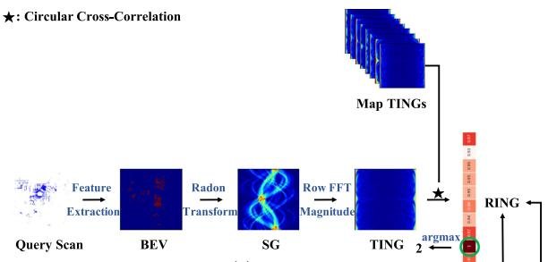</p>
<p>(a)<br />
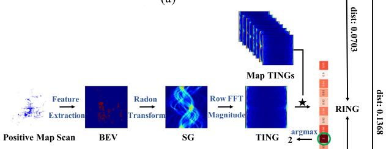</p>
<p>(b)<br />
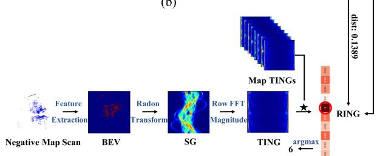<br />
(c)<br />
Fig. 6. Visualization of the representation pass for query scan, positive map scan, and negative map scan, to verify the feasibility of utilizing (19) to equivalently replace (18) for place recognition. (a) Query scan representation pass. The maximum value of RING representation points to the second scan in the scan map, which is the positive map scan shown in (b). (b) Positive map scan representation pass. The RING representation of the positive map scan is the closest to the RING representation of the query scan in terms of Euclidean distance. (c) Negative map scan representation pass. The Euclidean distance between query RING and negative map RING is nearly twice of that between query RING and positive map RING.</p>
<p>1) Place Recognition Illustration: We begin with a toycase study to illustrate the feasibility of our method for place recognition. In this toycase, we perform place retrieval in a scan map with ten map scans for simplification. To better illustrate the proposed method, we visualize all the intermediate representations, as shown in Fig. 6. The top block (a) ofFig. 6 shows that the query scan is located at the same place where the second map scan lies according to (19). The retrieved map scan, i.e., the second map scan, follows the representation pass, which is depicted in the bottom block (b) of Fig. 6. Furthermore, the Euclidean distance between query RING and positive map RING is the smallest, which satisfies (18), and is also consistent with the retrieved result above by (19).</p>
<p>2) Pose Estimation Illustration: Similar to Scan Context series [3], [11], we leverage rotation-equivariant representations</p>
<p>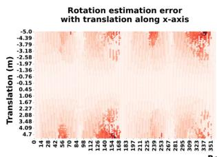</p>
<p>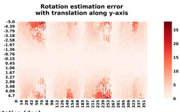</p>
<p>(a)<br />
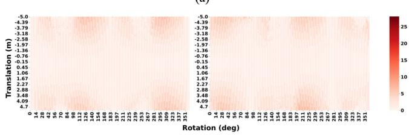</p>
<p>(b)<br />
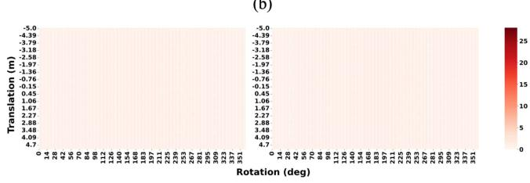<br />
(c)<br />
Fig. 7. Rotation estimation error using different representations. The left column shows the rotation estimation error with translation along the x-axis, and the right column shows the rotation estimation error with translation along the y-axis. (a) SC. (b) SG. (c) TING.</p>
<p>SG and TING to estimate the relative rotation, referring to rotation equivariance illustrated in Lemmas 1 and 2. To distinguish our representation from others, we rotate the point cloud within [0<sup>◦</sup>, 360<sup>◦</sup>) and translate the point cloud within [−5 m, 5 m]. After that, we employ the three aforementioned representations to estimate the relative rotation between the original point cloud and the transformed point cloud. The resolution of all representations for rotation estimation is the same, 3<sup>◦</sup>/pixel. As we can easily see in Fig. 7, SC representation is strongly affected by translation differences. When the relative translation is beyond 1 m, the rotation estimation error rises to about 30<sup>◦</sup>. In contrast, our representations SG and TING are much more robust to translation perturbation, showing smaller rotation estimation errors. In addition, TING equipped with translation invariance is almost not influenced by translation disturbance, whose rotation estimation error keeps nearly 0 for all translations within 5 m.</p>
<h2>B. Evaluation ofPlace Recognition</h2>
<p>For comprehensive place recognition evaluation, we evaluate the proposed method regarding both online loop closure detection (single-session scenarios) and long-term localization (multisession scenarios).</p>
<p>1) Single-Session Scenarios: Under single-session scenarios, we select <math xmlns="http://www.w3.org/1998/Math/MathML" display="inline"><mrow><msup><mi /><mrow><mn>6</mn></mrow></msup><mn>2</mn><mn>0</mn><mn>1</mn><mn>2</mn><mtext>&#x000A0;</mtext><mi>–</mi><mn>0</mn><mn>2</mn><mi>–</mi><mn>0</mn><msup><mn>4</mn><mrow><mo>&#x022EF;</mo></mrow></msup></mrow></math> sequence in NCLT dataset, <math xmlns="http://www.w3.org/1998/Math/MathML" display="inline"><mrow><msup><mrow><msup><mi mathvariant="normal" /><mrow><mn>6</mn><mn>6</mn></mrow></msup><mi mathvariant="normal">D</mi><mi mathvariant="normal">C</mi><mi mathvariant="normal">C</mi><mn>0</mn><mn>1</mn></mrow><mrow><mi>&#x02032;</mi><mi>&#x02032;</mi></mrow></msup></mrow></math> sequence in the MulRan dataset, and “2019-01-11- <math xmlns="http://www.w3.org/1998/Math/MathML" display="inline"><mrow><mn>1</mn><mn>3</mn><mo>&#x02212;</mo><mn>2</mn><mn>4</mn><mo>&#x02212;</mo><mn>5</mn><msup><mn>1</mn><mrow><mo>&#x02218;</mo></mrow></msup></mrow></math> sequence in the Oxford dataset for place recognition evaluation. To verify the advantage of our approach in the sparse scan map, we perform all the methods to detect loop closure online at different place densities (10, 20, and 50 m). Precision–recall curve is utilized as the evaluation metrics of single-session scenarios, as depicted in Fig. 8. As we can see, our RING-based methods are less affected by place density than others. At 10-m place density, RING-based methods show competitive performance with SC-based methods. However, with the decrease in the place density, the translation between the query scan and the retrieved map scan enlarges, so our methods outperform them by an increasing margin. Compared with RING (SG) and RING++ (SG), RING and RING++ remain high-performance even at 50-m place density, which validates the strong translation invariance of RING representation based on TING. The comparison result is consistent with the toycase illustrated in Fig. 7, validating the robustness to the translation of our methods. Compared with RING (SG) and RING, respectively, RING++ (SG) and RING++ achieve better performance, which is more obvious at lower place density. It demonstrates that the extracted local features are beneficial for place representation, thereby improving discrimination. In terms of the Fast Histogram, the histogram aggregation is invariant to the rotation difference in the dense place representation. However, without the design of translation invariance, the performance on sparse place representation is limited. In terms of M2DP, the projection strategy improve discrimination but also cannot handle the scenario in which point cloud centerings are not well aligned.</p>
<p><br />
Fig. 8. Precision–recall curve for NCLT, MulRan, and Oxford datasets under single-session scenarios.</p>
<p>2) Multisession Scenarios: From the viewpoint of long-term autonomy, a robust place recognition system should work well when the surroundings change as time passes. To compare long-term place recognition performance, we select several intersessions covering the same region to serve as map sequence and query sequence, respectively. Under multisession scenarios, the sampling interval of query data is fixed to 5 m for all datasets. In the same manner, we compare the proposed approach against the state-of-the-art methods at different map place densities (10, 20, and 50 m) on the NCLT dataset, with the results depicted in Fig. 9. Precision–recall curve shows the same trend as that in Fig. 8. RING (SG), RING++ (SG), and SC-based methods show competitive performance at high place density (10 m), while RING and RING++ achieve better performance at low place density (20 and 50 m) due to rigorous roto-translation invariance design. Using six extracted local features, RING++ (SG) and RING++ perform better than RING (SG) and RING, proving the validity of feature extraction for place recognition. To validate the cross-dataset consistency, we evaluate all the methods on different datasets at 20-m place density. Besides “2012-03-17” query sequence to “2012-02-04” map sequence for the NCLT dataset, we perform long-term place recognition on “2012-08-20” to “2012-02-04” pair for the NCLT dataset, “Sejong02” to “Sejong01” pair for the MulRan dataset, and “2019-01-15-13-06-37” to “2019-01-11-13-24-51” pair for the Oxford dataset, as shown in Fig. 10. Via comparison, four versions of our approach all outperform other approaches at 20-m place density, especially for the Oxford dataset, which presents the strength of roto-translation invariance for place recognition. In Fig. 11, we visualize the revisited pairs of top1 retrieval using different methods on the NCLT dataset at 20-m place density. It can be easily seen that RING++ surpasses other methods by a lot, further validating the effectiveness of our approach in sparse places.</p>
<p>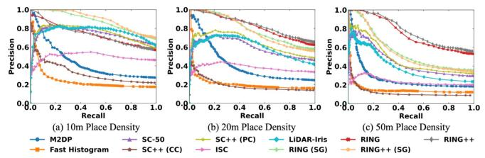<br />
Fig. 9. Precision–recall curve for “2012-03-17” query sequence to “2012-02- 04” map sequence in the NCLT dataset.</p>
<p>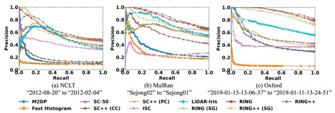<br />
Fig. 10. Precision–recall curve for NCLT, MulRan, and Oxford datasets at 20-m place density.</p>
<p>In addition to qualitative comparison, we provide the quantitative results of the handcrafted methods for long-term place recognition, as listed in Table II. Compared with other handcrafted methods, our method and its variants are capable of recognizing many more revisited places. Compared with RING (SG) and RING++ (SG), RING and RING++ make obvious improvements thanks to the translation invariance construction of RING representation based on TING.</p>
<p>3) Generalization: Unlike deep learning representations, our representation is training-free, so we can easily generalize to new scenes without retraining or fine-tuning. We compare RING++ with some deep learning methods across different datasets to show our superior generalization ability among deep learning methods. For deep learning methods, we train the model on the MulRan dataset (“Sejong01” trajectory serves as map sequence, “Sejong02” trajectory serves as query sequence) and validate it on the NCLT dataset (“2012-02-04” trajectory serves as map sequence, “2012-03-17” trajectory serves as query sequence) and the Oxford dataset (“2019-01-11-13-24-51” trajectory serves as map sequence, “2019-01-15-13-06-37” trajectory serves as query sequence) for generalization ability evaluation, where the equidistant sampling gap between query data is 5 m and that of map data is 20 m.</p>
<p>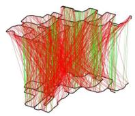<br />
(a)</p>
<p>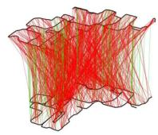<br />
(b)</p>
<p>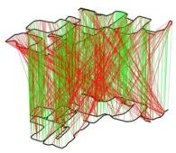<br />
(c)</p>
<p>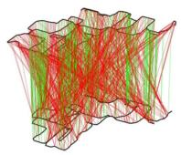<br />
(d)</p>
<p>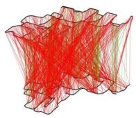<br />
(e)</p>
<p>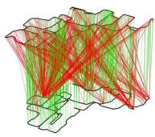<br />
(f)</p>
<p>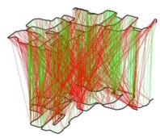<br />
(g)</p>
<p>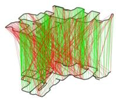<br />
(h)</p>
<p>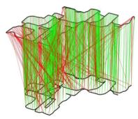<br />
(i)</p>
<p>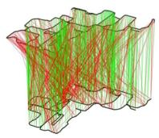<br />
(j)</p>
<p>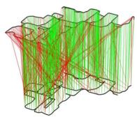<br />
(k)<br />
Fig. 11. Qualitative comparison of match graph for the NCLT dataset at 20-m place density, where black lines visualize trajectories, green lines visualize correctly retrieved pairs, and red lines visualize mistakenly retrieved pairs. (a) M2DP. (b) Fast Histogram. (c) SC. (d) SC++ (PC). (e) SC++ (CC). (f) ISC. (g) LiDAR-Iris. (h) RING (SG). (i) RING. (j) RING++ (SG). (k) RING++.</p>
<p>TABLE II<br />
QUANTITATIVE RESULTS OF PLACE RECOGNITION EVALUATION IN MULTISESSION SCENARIOS</p>
<table><tr><td rowspan="2" colspan="2">Approach</td><td colspan="3">NCLT</td><td colspan="3">MulRan*</td><td colspan="3">Oxford</td></tr><tr><td>Recall@1</td><td>F1 score</td><td>AUC</td><td>Recall@1</td><td>F1 score</td><td>AUC</td><td>Recall@1</td><td>F1 score</td><td>AUC</td></tr><tr><td rowspan="10">Handcrafted</td><td>M2DP</td><td>0.2811</td><td>0.3966</td><td>0.4127</td><td>0.2149</td><td>0.3456</td><td>0.3309</td><td>0.2997</td><td>0.4496</td><td>0.4638</td></tr><tr><td>Fast Histogram</td><td>0.1840</td><td>0.2785</td><td>0.2136</td><td>0.1805</td><td>0.2986</td><td>0.2614</td><td>0.0642</td><td>0.1181</td><td>0.0741</td></tr><tr><td>SC-50</td><td>0.5248</td><td>0.6314</td><td>0.5934</td><td>0.5572</td><td>0.6981</td><td>0.6490</td><td>0.4375</td><td>0.5935</td><td>0.5366</td></tr><tr><td>SC++ (PC)</td><td>0.3862</td><td>0.6495</td><td>0.6465</td><td>0.5384</td><td>0.6826</td><td>0.6396</td><td>0.3993</td><td>0.5561</td><td>0.5295</td></tr><tr><td>SC++ (CC)</td><td>0.1355</td><td>0.2449</td><td>0.1895</td><td>0.4370</td><td>0.5922</td><td>0.5838</td><td>0.3084</td><td>0.4596</td><td>0.4540</td></tr><tr><td>ISC</td><td>0.4540</td><td>0.5705</td><td>0.4735</td><td>0.2865</td><td>0.2646</td><td>0.1255</td><td>0.3654</td><td>0.5380</td><td>0.3969</td></tr><tr><td>LiDAR-Iris</td><td>0.4732</td><td>0.5876</td><td>0.6055</td><td>0.5888</td><td>0.7005</td><td>0.7058</td><td>0.5653</td><td>0.7145</td><td>0.7141</td></tr><tr><td>RING (SG) (Ours)</td><td>0.6582</td><td>0.7274</td><td>0.7392</td><td>0.6361</td><td>0.7642</td><td>0.7474</td><td>0.7425</td><td>0.8366</td><td>0.8787</td></tr><tr><td>RING (Ours)</td><td>0.7098</td><td>0.7658</td><td>0.8246</td><td>0.6633</td><td>0.7841</td><td>0.8283</td><td>0.8013</td><td>0.8772</td><td>0.9234</td></tr><tr><td>RING++ (SG) (Ours) RING++ (Ours)</td><td>0.6309</td><td>0.7150 0.7890</td><td>0.7776 0.8374</td><td>0.6361 0.6941</td><td>0.7642 0.7983</td><td>0.7474</td><td>0.7612</td><td>0.8492</td><td>0.8992</td></tr><tr><td rowspan="4">Learning-based</td><td></td><td>0.7321</td><td></td><td>0.6260</td><td></td><td>0.8214</td><td>0.8439 0.8436</td><td>0.8274 0.5247</td><td>0.8937 0.7825</td><td>0.9438</td></tr><tr><td>PointNetVLAD</td><td>0.3691 0.6036</td><td>0.5391 0.7816</td><td>0.7722</td><td>0.6968 0.7425</td><td>0.8630</td><td>0.8973</td><td>0.6562</td><td>0.7890</td><td>0.6114</td></tr><tr><td>DiSCO</td><td>0.5620</td><td>0.6965</td><td>0.7988</td><td>0.7260</td><td>0.8412</td><td>0.9060</td><td>0.5920</td><td>0.7438</td><td>0.8566</td></tr><tr><td>EgoNN</td><td></td><td></td><td></td><td></td><td></td><td></td><td></td><td></td><td>0.8471</td></tr><tr><td></td><td>LCDNet</td><td>0.6199</td><td>0.7659</td><td>0.8081</td><td>0.3978</td><td>0.5692</td><td>0.6115</td><td>0.5307</td><td>0.6934</td><td>0.7797</td></tr></table>

<p>* In the MulRan dataset, we perform place recognition evaluation on the test region used in EgoNN [40] for all methods since the compared learning-based approaches are trained on the training region of the MulRan dataset.</p>
<p>As shown in Table II, RING++ has excellent performance across different datasets. DiSCO and EgoNN maintain most of their place recognition performance on generalized datasets due to their rotation-invariant structures, but the polar transform still suffers from translation variance. LCDNet performs better in</p>
<p>NCLT and Oxford datasets with no occlusion. The performance drops drastically in the MulRan dataset, which may be caused by the occlusion.</p>
<h2>C. Evaluation of Pose Estimation</h2>
<p>To eliminate the effect ofplace recognition, we solely evaluate relative pose estimation between positive scans determined by the ground truth. At the pose estimation stage, our method yields a three-DoF pose: one-DoF rotation and two-DoF translation. Scan Context, ISC, LiDAR-Iris, and Scan Context++ only provide one-DoF yaw estimation. As M2DP and Fast Histogram do not provide pose estimation, we do not include them in the experiments. Moreover, we compare our methods with handcrafted point cloud registration: ICP [61], RANSAC with</p>
<p>TABLE III<br />
POSE ESTIMATION ERROR ON THE MULRAN DATASET</p>
<table><tr><td>Approach</td><td>Success (%)</td><td>TE† (m)</td><td>RE† (°)</td></tr><tr><td>RING (SG)</td><td>53.01</td><td>0.58/1.08/4.52</td><td>0.51/1.77/5.94</td></tr><tr><td>RING</td><td>63.47</td><td>0.51/0.70/1.81</td><td>0.35/0.73/1.52</td></tr><tr><td>RING++ (SG)</td><td>53.01</td><td>0.60/1.17/4.54</td><td>0.62/2.54/6.24</td></tr><tr><td>RING++</td><td>65.76</td><td>0.50/0.70/1.79</td><td>0.34/0.72/1.51</td></tr></table>

<p>† TE here represents a two-DoF translation error and RE represents a one-DoF yaw error. We list 50%, 75% and 95% quantiles of TE and RE in this table.</p>
<p>FPFH features [34] and TEASER++ [62], and the learning-based methods: PCAM [63] and OverlapNet [27] with one-DoF yaw estimation.</p>
<p>We perform pose estimation on NCLT and MulRan datasets, which provide accurate ground-truth poses. As for the Oxford dataset, we observe that the ground-truth poses between different traversals of the same trajectory are slightly misaligned, so we discard it in evaluations involving pose estimation. The positive pairs are determined by the ground-truth poses and from the same trajectories used in place recognition experiments. We evaluate these positive pairs in terms of three-DoF pose (TE &lt; 2 m and <math xmlns="http://www.w3.org/1998/Math/MathML" display="inline"><mrow><mrow><mi mathvariant="normal">R</mi><mi mathvariant="normal">E</mi></mrow><mo>&#x0003C;</mo><msup><mn>5</mn><mrow><mo>&#x02218;</mo></mrow></msup><mo stretchy="false">&#x00029;</mo></mrow></math> , two-DoF translation <math xmlns="http://www.w3.org/1998/Math/MathML" display="inline"><mrow><mrow><mo stretchy="true" fence="true" form="prefix">&#x00028;</mo><mrow><mi mathvariant="normal">T</mi><mi mathvariant="normal">E</mi></mrow><mo>&#x0003C;</mo><mn>2</mn><mtext>&#x000A0;</mtext><mrow><mi mathvariant="normal">m</mi></mrow><mo stretchy="true" fence="true" form="postfix">&#x00029;</mo></mrow></mrow></math> , and one-DoF rotation (RE &lt; 5<sup>◦</sup>) success rate.</p>
<p>The pose estimation results are shown in Table IV. In our experiment setup with a 5-m query and 20-m map sampling distance, we observe that ICP achieves the best performance among previous handcrafted methods and EgoNN demonstrates superior results compared to existing learning-based approaches on the MulRan dataset. However, these methods are not robust to registration under large viewpoint changes and show a large performance drop when evaluated on the NCLT dataset. With the design of a roto-translation-invariant structure, our proposed RING++ achieves the highest success rate. Note that, rather than presenting a novel pose estimation algorithm, we focus on the reuse of the intermediate representation of place recognition for pose estimation.</p>
<h2>D. Evaluation of Global Localization</h2>
<p>Global localization is evaluated by the compound performance of place recognition and pose estimation. We first compare the proposed four variants. The pose estimation error on “2012-03-17” to “2012-02-04” for the NCLT dataset at different place densities is visualized by the box plot shown in Fig. 12. Together with three-DoF pose estimation on the NCLT dataset, we provide Table III, which presents Success Rate, TE, and RE of our approach on “Sejong02” to “Sejong01” for the MulRan dataset with a place density of 20 m. As the results show, RING and RING++ estimate more accurate rotation and translation than RING (SG) and RING++ (SG), which indicates that translation invariance benefits pose estimation. By comparing RING with RING++, we find that the extracted six local features ofRING++ do not obviously facilitate pose estimation performance. In general, RING++ performs the best among all variants.</p>
<p>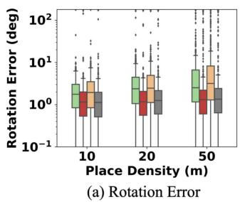</p>
<p>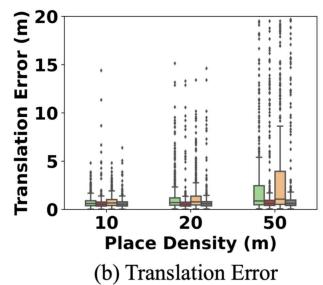<br />
Fig. 12. Pose estimation error on the NCLT dataset.</p>
<p>To assess the three-DoF pose estimated by our method, we employ ICP with and without the initial pose provided by the proposed method to align two matched scans after place recognition. The cases are illustrated in the supplementary material in [44]. As we can see, ICP fails without an initial guess, especially in the case of large rotation variance. Our approach offers a qualified initial guess for scan matching, close to the best alignment. With the estimated pose of RING++ (SG) and RING++, ICP converges to global minima rather than traps in local optima. Furthermore, the time cost of ICP with the initial guess is much less than without any initial poses.</p>
<p>After that, we compare RING++ with both handcrafted and learning-based methods in terms of global localization performance on NCLT and MulRan datasets. For each dataset, we evaluate these approaches in terms of Success Rate, TE, and RE. To demonstrate the effectiveness of better initial guesses, we also provide a pose estimation successful rate, which is calculated by the percentage of successfully aligned matches (TE &lt; 2 m and RE &lt; 5<sup>◦</sup>) among all correctly retrieved pairs.</p>
<p>1) Comparison With Learning-Free Methods: Among the compared hand-engineering methods, M2DP and Fast Histogram are only capable of place recognition, while Scan Context, ISC, LiDAR-Iris, and Scan Context++ also produce one-DoF yaw or lateral translation estimation, leaving the remaining dimension to ICP. In contrast, our method yields a relative yaw that is a by-product in the process of place recognition and estimates a two-DoF relative translation successively in the process of pose estimation. For a fair comparison, we evaluate the pose estimation performance of all methods after refinement by ICP. As can be seen in Table V, we calculate Success Rate for global localization evaluation and TE and RE at 50%, 75%, and 95% for pose estimation evaluation. Compared with other methods, RING++ has better performance on both the NCLT and MulRan datasets, arriving at high Success Rate for global localization. Referring to the pose estimation success rate, RING++ has a better chance of achieving satisfied alignment by providing the qualified three-DoF initial guesses, which makes refinement more easily converge to the global optimal pose. Our method achieves less TE and RE at most quantiles, which verifies the efficacy of better initial guesses.</p>
<p>2) Comparison With Learning-Based Methods: Learningbased methods, DiSCO, EgoNN, and LCDNet are trained on the MulRan dataset and tested on both MulRan and NCLT datasets for generalization evaluation. For the MulRan dataset, EgoNN shows a great performance of global localization thanks to the rotation-invariant representation and extracted local features. RING++ presents competitive performance (66.09% GL Success Rate) to EgoNN (62.00% GL Success Rate). The overall global localization is mainly limited by the place recognition performance which we discuss in Section VII-H. LCDNet’s global localization performance is limited, owing mostly to pose estimation that suffers from occlusion and poor initialization. In terms of global localization error, RING++ has lower TE and RE than compared methods. For the NCLT dataset, the distribution of points is different from that of the MulRan dataset due to the different LiDAR sensors, making it hard to generalize. Therefore, the global localization performance oflearning-based methods on the NCLT dataset drops a lot, especially for EgoNN and LCDNet. The underlying reason may be explained by the lack of explicit invariance design, which makes the features correlated and fails to generalize to unseen datasets. Unlike EgoNN and LCDNet, DiSCO constructs a rotation-invariant place descriptor by transforming features to the frequency domain and then taking the magnitude of the frequency spectrum, which explains the relatively smaller decline of GL Success Rate from the MulRan dataset generalizing to the NCLT dataset. Through comparison, RING++, as a learning-free method, arrives at the top performance on the NCLT dataset, with a high GL Success Rate and small TE and RE.</p>
<p>TABLE IV<br />
COMPARISON OF RELATIVE POSE ERRORS (ROTATION AND TRANSLATION) BETWEEN POSITIVE PAIRS DETERMINED BY GROUND TRUTH</p>
<table><tr><td rowspan="2" colspan="2">Approach</td><td colspan="3">NCLT</td><td colspan="3">MulRan</td></tr><tr><td>Pose Succ. (%)</td><td>Trans Succ. (%)</td><td>Rot Succ. (%)</td><td>Pose Succ. (%)</td><td>Trans Succ. (%)</td><td>Rot Succ. (%)</td></tr><tr><td rowspan="7">Handcrafted</td><td>ICP</td><td>21.33</td><td>33.06</td><td>26.09</td><td>68.91</td><td>68.91</td><td>100.00</td></tr><tr><td>RANSAC</td><td>4.56</td><td>6.25</td><td>41.63</td><td>68.57</td><td>73.71</td><td>82.75</td></tr><tr><td>TEASER++</td><td>2.62</td><td>5.65</td><td>23.59</td><td>41.86</td><td>46.45</td><td>58.55</td></tr><tr><td> <math xmlns="http://www.w3.org/1998/Math/MathML" display="inline"><mrow><mrow><mi mathvariant="normal">S</mi><mi mathvariant="normal">C</mi><mo>&#x0002B;</mo><mo>&#x0002B;</mo><mo stretchy="false">&#x00028;</mo><mi mathvariant="normal">P</mi><mi mathvariant="normal">C</mi><msup><mo stretchy="false">&#x00029;</mo><mrow><mo>&#x0002A;</mo></mrow></msup></mrow></mrow></math> </td><td>1</td><td></td><td>44.59</td><td></td><td></td><td>74.50</td></tr><tr><td> <math xmlns="http://www.w3.org/1998/Math/MathML" display="inline"><mrow><mrow><mi mathvariant="normal">S</mi><mi mathvariant="normal">C</mi><mo>&#x0002B;</mo><mo>&#x0002B;</mo><mo stretchy="false">&#x00028;</mo><mi mathvariant="normal">C</mi><mi mathvariant="normal">C</mi><msup><mo stretchy="false">&#x00029;</mo><mrow><mo>&#x0002A;</mo></mrow></msup></mrow></mrow></math> </td><td>-</td><td>24.67</td><td></td><td>=</td><td>70.20</td><td></td></tr><tr><td>ISC*</td><td>-</td><td>-</td><td>26.09</td><td>-</td><td>-</td><td>96.70</td></tr><tr><td>LiDAR-Iris*</td><td>=</td><td>-</td><td>63.20</td><td>=</td><td>-</td><td>98.14</td></tr><tr><td rowspan="5">Learning-based</td><td>DiSCO*</td><td>-</td><td>-</td><td>40.32</td><td>-</td><td>=</td><td>83.25</td></tr><tr><td>OverlapNet*</td><td>-</td><td>1</td><td>3.73</td><td>-</td><td>-</td><td>39.64</td></tr><tr><td>LCDNet</td><td>1.01</td><td>10.99</td><td>3.33</td><td>4.59</td><td>9.32</td><td>21.97</td></tr><tr><td>Egonn</td><td>4.21</td><td>6.26</td><td>65.94</td><td>87.91</td><td>87.91</td><td>100.00</td></tr><tr><td>PCAM</td><td>8.17</td><td>37.10</td><td>8.87</td><td>76.77</td><td>77.05</td><td>97.77</td></tr><tr><td>Ours</td><td>RING++</td><td>86.96</td><td>88.98</td><td>88.98</td><td>91.26</td><td>91.26</td><td>96.99</td></tr></table>

<p>* These methods only estimate the yaw angle or one-DoF translation between two scans and are, thus, not directly comparable to the others.</p>
<p>TABLE V<br />
QUANTITATIVE RESULTS OF GLOBAL LOCALIZATION EVALUATION</p>
<table><tr><td rowspan="2" colspan="2">Approach</td><td colspan="3">NCLT</td><td colspan="3">MulRan</td></tr><tr><td>GL/PE Succ. (%)</td><td>TE† (m)</td><td>RE† (°)</td><td>GL/PE Succ. (%)</td><td>TE† (m)</td><td>RE† (°)</td></tr><tr><td rowspan="5">Handcrafted</td><td> <math xmlns="http://www.w3.org/1998/Math/MathML" display="inline"><mrow><mrow><mi mathvariant="normal">S</mi><mi mathvariant="normal">C</mi></mrow><mrow><mo>&#x02212;</mo></mrow><mn>5</mn><mn>0</mn><mo>&#x0002B;</mo><mrow><mi mathvariant="normal">I</mi><mi mathvariant="normal">C</mi><mi mathvariant="normal">P</mi></mrow></mrow></math> </td><td>24.97/47.58</td><td>0.30/1.02/7.67</td><td>4.14/6.50/18.11</td><td>35.82/65.45</td><td>0.45/6.54/8.17</td><td>0.52/0.95/2.01</td></tr><tr><td> <math xmlns="http://www.w3.org/1998/Math/MathML" display="inline"><mrow><mrow><mi mathvariant="normal">S</mi><mi mathvariant="normal">C</mi></mrow><mo>&#x0002B;</mo><mo>&#x0002B;</mo><mrow><mo stretchy="false">&#x00028;</mo><mi mathvariant="normal">P</mi><mi mathvariant="normal">C</mi><mo stretchy="false">&#x00029;</mo></mrow><mo>&#x0002B;</mo><mrow><mi mathvariant="normal">I</mi><mi mathvariant="normal">C</mi><mi mathvariant="normal">P</mi></mrow></mrow></math> </td><td>25.68/46.95</td><td>0.33/1.87/8.78</td><td>4.18/6.70/19.81</td><td>36.25/66.94</td><td>0.38/6.12/8.10</td><td>0.51/0.94/1.96</td></tr><tr><td> <math xmlns="http://www.w3.org/1998/Math/MathML" display="inline"><mrow><mrow><mi mathvariant="normal">S</mi><mi mathvariant="normal">C</mi></mrow><mo>&#x0002B;</mo><mo>&#x0002B;</mo><mrow><mo stretchy="false">&#x00028;</mo><mi mathvariant="normal">C</mi><mi mathvariant="normal">C</mi><mo stretchy="false">&#x00029;</mo></mrow><mo>&#x0002B;</mo><mrow><mi mathvariant="normal">I</mi><mi mathvariant="normal">C</mi><mi mathvariant="normal">P</mi></mrow></mrow></math> </td><td>8.09/50.98</td><td>0.36/14.30/139.55</td><td>3.67/7.06/177.01</td><td>18.19/62.23</td><td>0.48/138.85/140.63</td><td>0.47/0.80/1.48</td></tr><tr><td> <math xmlns="http://www.w3.org/1998/Math/MathML" display="inline"><mrow><mrow><mi mathvariant="normal">I</mi><mi mathvariant="normal">S</mi><mi mathvariant="normal">C</mi></mrow><mo>&#x0002B;</mo><mrow><mi mathvariant="normal">I</mi><mi mathvariant="normal">C</mi><mi mathvariant="normal">P</mi></mrow></mrow></math> </td><td>24.77/54.57</td><td>0.28/0.56/7.69</td><td>4.14/6.33/13.17</td><td>25.21/88.00</td><td>0.31/0.65/6.62</td><td>0.42/0.72/1.33</td></tr><tr><td> <math xmlns="http://www.w3.org/1998/Math/MathML" display="inline"><mrow><mrow><mi mathvariant="normal">L</mi><mi mathvariant="normal">i</mi><mi mathvariant="normal">D</mi><mi mathvariant="normal">A</mi><mi mathvariant="normal">R</mi><mo>&#x02212;</mo><mi mathvariant="normal">I</mi><mi mathvariant="normal">r</mi><mi mathvariant="normal">i</mi><mi mathvariant="normal">s</mi><mo>&#x0002B;</mo><mi mathvariant="normal">I</mi><mi mathvariant="normal">C</mi><mi mathvariant="normal">P</mi></mrow></mrow></math> </td><td>24.47/51.71</td><td>0.27/0.48/7.21</td><td>4.25/6.60/13.99</td><td>42.26/71.78</td><td>0.41/3.44/7.99</td><td>0.45/0.78/1.62</td></tr><tr><td rowspan="3">Learning-based</td><td> <math xmlns="http://www.w3.org/1998/Math/MathML" display="inline"><mrow><mrow><mi mathvariant="normal">D</mi><mi mathvariant="normal">i</mi><mi mathvariant="normal">S</mi><mi mathvariant="normal">C</mi><mi mathvariant="normal">O</mi></mrow><mo>&#x0002B;</mo><mrow><mi mathvariant="normal">I</mi><mi mathvariant="normal">C</mi><mi mathvariant="normal">P</mi></mrow></mrow></math> </td><td>28.31/46.91</td><td>0.35/2.73/8.73</td><td>6.09/6.52/34.69</td><td>38.36/51.66</td><td>1.23/7.45/8.25</td><td>0.71/1.02/1.84</td></tr><tr><td> <math xmlns="http://www.w3.org/1998/Math/MathML" display="inline"><mrow><mrow><mi mathvariant="normal">L</mi><mi mathvariant="normal">C</mi><mi mathvariant="normal">D</mi><mi mathvariant="normal">N</mi><mi mathvariant="normal">e</mi><mi mathvariant="normal">t</mi><mo>&#x0002B;</mo><mi mathvariant="normal">I</mi><mi mathvariant="normal">C</mi><mi mathvariant="normal">P</mi></mrow></mrow></math> </td><td>2.12/3.41</td><td>5.67/8.33/12.93</td><td>8.61/38.01/168.94</td><td>19.75/49.65</td><td>2.10/7.37/8.84</td><td>0.78/1.49/11.91</td></tr><tr><td> <math xmlns="http://www.w3.org/1998/Math/MathML" display="inline"><mrow><mrow><mi mathvariant="normal">E</mi><mi mathvariant="normal">g</mi><mi mathvariant="normal">o</mi><mi mathvariant="normal">N</mi><mi mathvariant="normal">N</mi><mo>&#x0002B;</mo><mi mathvariant="normal">I</mi><mi mathvariant="normal">C</mi><mi mathvariant="normal">P</mi></mrow></mrow></math> </td><td>6.07/10.80</td><td>3.48/8.12/15.51</td><td>12.32/27.45/134.95</td><td>62.00/85.40</td><td>0.28/0.52/13.04</td><td>0.72/1.14/1.98</td></tr><tr><td>Ours</td><td> <math xmlns="http://www.w3.org/1998/Math/MathML" display="inline"><mrow><mrow><mi mathvariant="bold">R</mi><mi mathvariant="bold">I</mi><mi mathvariant="bold">N</mi><mi mathvariant="bold">G</mi></mrow><mo>&#x0002B;</mo><mo>&#x0002B;</mo><mrow><mi mathvariant="bold">&#x00393;</mi></mrow><mo>&#x0002B;</mo><mrow><mi mathvariant="bold">I</mi><mi mathvariant="bold">C</mi><mi mathvariant="bold">P</mi></mrow></mrow></math> </td><td>42.37/57.88</td><td>0.31/0.53/1.36</td><td>4.13/6.74/12.52</td><td>66.09/95.22</td><td>0.27/0.42/1.82</td><td>0.51/0.80/1.19</td></tr></table>

<p>† As ICP refinement is applied, TE here represents a 3-DoF translation error and RE represents a 3-DoF rotation error. † As ICP refinement is applied. TE here represents a 3-DoF translation error and RE represents a 3-DoF rotation error.<br />
We list 50%, 75% and 95% quantiles of TE and RE in this table. The GL Success Rate is the compound performance of place recognition and pose estimation. The PE Success Rate is the percentage of successfully aligned matches (TE &lt; 2m &amp; RE &lt; 5°) among all correctly retrieved pairs by different methods. For MulRan dataset, we perform place recognition and pose estimation evaluation on the test dataset which is used in EgoNN [40].</p>
<h2>E. Ablation Study</h2>
<p>To investigate the influence of resolution on place recognition and pose estimation, we present ablation studies on the grid size and corresponding resolution of RING++. We carry out experiments utilizing the same multisession pair “2012-03-17” to <math xmlns="http://www.w3.org/1998/Math/MathML" display="inline"><mrow><msup><mi /><mrow><mn>6</mn></mrow></msup><mn>2</mn><mn>0</mn><mn>1</mn><mn>2</mn><mtext>&#x000A0;</mtext><mi>–</mi><mn>0</mn><mn>2</mn><mi>–</mi><mn>0</mn><msup><mn>4</mn><mrow><mo>&#x022EF;</mo></mrow></msup></mrow></math> in the NCLT dataset, with the results displayed in Table VI. As the grid size/resolution increases, Recall@1 of our method increases fast at first and then approaches a constant gradually. In addition, translation estimation error declines slightly, while rotation estimation benefits greatly from the increased resolution. We also provide the runtime ofdifferent resolutions. The results show that as the resolution grows, the time cost also increases.</p>
<p>TABLE VI<br />
ABLATION STUDY ON THE RESOLUTION</p>
<table><tr><td>Resolution</td><td>Recall@1 (%)</td><td>TE (m)</td><td>RE (°)</td><td>Time (ms)</td></tr><tr><td>40×40 (3.50 m, 9°)</td><td>62.18</td><td>1.43/2.08/3.73</td><td>2.45/4.14/7.27</td><td>34.4</td></tr><tr><td>60×60 (2.33 m, 6°)</td><td>68.76</td><td>0.98/1.37/2.52</td><td>1.86/3.19/5.96</td><td>41.6</td></tr><tr><td>80×80 (1.75 m, 4.5°)</td><td>71.59</td><td>0.79/1.10/1.95</td><td>1.53/2.70/5.32</td><td>45.6</td></tr><tr><td>120×120 (1.17 m, 3°)</td><td>73.21</td><td>0.56/0.77/1.31</td><td>1.25/2.14/4.07</td><td>53.3</td></tr><tr><td>160×160 (0.88 m, 2.25°)</td><td>75.83</td><td>0.48/0.70/1.30</td><td>1.08/1.98/3.59</td><td>86.7</td></tr><tr><td>200×200 (0.70 m, 1.8°)</td><td>76.54</td><td>0.41/0.60/1.10</td><td>1.08/1.93/3.26</td><td>92.1</td></tr><tr><td>300×300 (0.47 m, 1.2°)</td><td>77.65</td><td>0.32/0.48/1.13</td><td>1.07/1.79/3.13</td><td>166.9</td></tr></table>

<p>* We list 50%, 75% and 95% quantiles of TE and RE in this table.</p>
<p>TABLE VII<br />
ABLATION STUDY ON LOCAL FEATURES</p>
<table><tr><td>Local Features</td><td>Recall@1 (%)</td><td>TE (m)</td><td>RE (°)</td></tr><tr><td>FPFH [35]</td><td>75.03</td><td>0.56/0.79/1.30</td><td>1.19/2.03/4.03</td></tr><tr><td>w/ RING++ SHOT [19]</td><td></td><td></td><td></td></tr><tr><td>w/ RING++</td><td>63.73</td><td>0.56/0.79/1.39</td><td>1.16/2.03/4.08</td></tr></table>

<p>We list 50%, 75%, and 95% quantiles of TE and RE in this table</p>
<p>The other ablation study is carried out to confirm RING++’s effectiveness as a feature aggregation method. Using the same multisession pair from the NCLT dataset, we test RING++ using several local features with the resolution set to 120 × 120. The results are shown in Table VII. We utilize FPFH [35] implemented in Open3D [64], which extracts 33-channel point features. Regarding SHOT [18], [19], we use its Python implementation and change the bin value to 2, which results in the final 64-channel features. Although the bin value can be increased to 11 as in the original work, we only set it to 2 because of the linear memory consumption growth during the evaluation. The results show that our RING++ can also perform well with only two signature bins. Compared to the features we selected, FPFH and SHOT show competitive performance, validating the RING++ framework as a generic feature aggregation method. To strike a balance between precision and storage, we use the six-channel features introduced in Section V-A in all other experiments.</p>
<h2>F. Computational Cost</h2>
<p>Considering the real-time constraint, we calculate the computation cost of our algorithm. All the methods are implemented in Python and tested on a system equipped with an Intel i7-10700 (2.9 GHz) and an Nvidia GeForce RTX 2060 SUPER with 8-GB memory. As can be seen in Fig. 13, the average computational time of RING++ is about 50 ms. The most time-consuming part is the nearest neighbor search during the local feature calculation. In our pipeline, we first downsample and voxelize the original scans to boost this search. To reveal how much performance is gained from this step, we conduct an ablation study. The results are shown in Table VIII. It indicates that while place recognition performance only slightly decreases, the nearest neighbor search on voxelized points saves a significant amount of time. It is worth noting that the time consumption varies according to the number of channels in the local feature. It grows linearly as the feature channel increases. The RING generation time relates to the number of map scans. In our settings, the entire trajectory (∼5.5 km) of the NCLT dataset is covered with 253 map scans, and the RING generation of each query takes 25.5 ms. As for the large-scale MulRan dataset (∼23.4 km), it costs 99.7 ms to generate RING and necessitates 1124 map scans. All runtime results are tested in batches of eight in parallel on GPU.</p>
<p>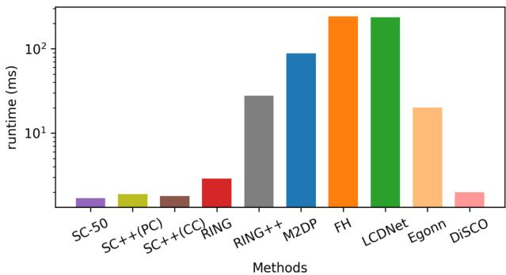<br />
Fig. 13. Average descriptor generation time when tested on the NCLT Dataset. FH represents Fast Histogram. The result of RING++ does not include the RING generation time.</p>
<p>TABLE VIII<br />
TIME COSTS (MS) FOR EACH RING++ COMPONENT</p>
<table><tr><td>NN method</td><td>NN search</td><td>Feature extraction</td><td>TING generation</td><td>RING generation</td><td>Recall@1 (%)</td></tr><tr><td>Voxel</td><td>25.7</td><td>0.7</td><td>1.4</td><td>25.5</td><td>73.21</td></tr><tr><td>Pointcloud</td><td>68.2</td><td>1.8</td><td>1.4</td><td>25.5</td><td>75.23</td></tr></table>

<h2>G. Robustness</h2>
<p>We further evaluate the robustness of our method in occluded and opposite driving direction situations. The experiment setting is the same as previous experiments where the equidistant sampling gap between query data is 5 m and that of map data is 20 m. In such challenging scenarios, we observe that the most similar scan may not be closest to the query, which makes the previous 10 m revisited criteria unreasonable. Therefore, we evaluate different algorithms using the revisited threshold ranging from 10 to 140 m.</p>
<p>1) Occlusion: Occlusions caused by dynamic objects make localization more difficult. In Fig. 14(a) and (b), we randomly block 90<sup>◦</sup> and 150<sup>◦</sup> of the scan in the NCLT dataset and evaluate the success rates of global localization, place recognition, and pose estimation. We observe that the performance of both methods significantly declines, while RING++ still outperforms</p>
<p>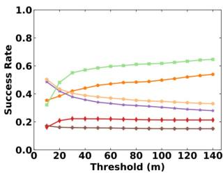<br />
(a)</p>
<p>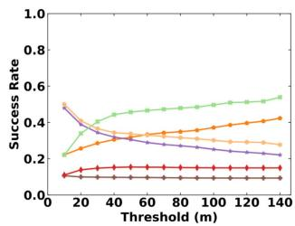</p>
<p>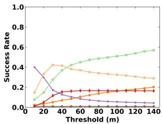<br />
(c)</p>
<p>(b)<br />
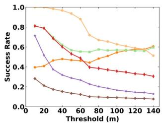<br />
(d)<br />
RING++-PR Succ.RING++-PE Succ.RING++-GL Succ.<br />
Fig. 14. Success rates under occluded and reversal scenarios. (a) NCLT (90<sup>◦</sup> occlusion). (b) NCLT (150<sup>◦</sup> occlusion). (c) MulRan Riverside. (d) KITTI 08.</p>
<p>Scan Context. In addition, we evaluate these two methods in the MulRan Riverside dataset where the scans suffer from a fixed 90<sup>◦</sup> occlusion and reverse directions. The performance of both methods drops a lot, but RING++ still outperforms the other. In these difficult cases involving dynamic objects and occlusion, creating a submap from recent scans might be a possible solution to the significant performance reduction, which we would like to look into in the future.</p>
<p>2) Reverse Driving Direction: Another challenging scenario in urban areas is that loops are from the opposite driving direction. As mentioned above, the scenarios in MulRan Riverside include reverse direction and occlusion. The results are shown in Fig. 14(c) and (d). To eliminate the effect of occlusion in the reverse direction scenarios, we further conduct experiments on two reverse trajectory segments cropped from KITTI 08. Due to the limited number of scans in these two short reverse segments under sparse scenarios, the trend of Fig. 14(d) is different from the other three plots in Fig. 14(a)–(c). From Fig. 14, we see that utilizing 360<sup>◦</sup> scans improves the performance of both approaches significantly. Despite the sparse map setup and translation difference caused by the lane change, our approach still has better performance.</p>
<h2>H. Discussion</h2>
<p>1) Global Localization Criteria: In real-world scenarios incorporating occlusion or reverse loops, the place recognition criteria like 10 m in the majority of our experimental settings may not be suitable for evaluation, which can be verified in Fig. 14. Taking the MulRan Riverside dataset as an example, as the revisited threshold grows, the place recognition surely provides more candidates, but the pose estimation is not able to align all these matches due to the large translation differences, so the compound criterion GL Success Rate finally reaches a stable level. With the help of the globally convergent solver, RING++ has more chances to align these matches, resulting in a higher GL</p>
<p>TABLE IX<br />
ATE AND SUCCESSFULLY ALIGNED LOOP NUMBER OF SCAN CONTEXT++ (PC) AND RING++ INTEGRATED SLAM SYSTEMS</p>
<table><tr><td rowspan="2">Approach</td><td colspan="2">Legged Robot Dataset</td><td colspan="2">NCLT</td></tr><tr><td>ATE (m)</td><td>Succ. Loop</td><td>ATE (m)</td><td>Succ. Loop</td></tr><tr><td> <math xmlns="http://www.w3.org/1998/Math/MathML" display="inline"><mrow><mrow><mi mathvariant="normal">S</mi><mi mathvariant="normal">C</mi><mo>&#x0002B;</mo><mo>&#x0002B;</mo><mtext>&#x000A0;</mtext><mi mathvariant="normal">S</mi><mi mathvariant="normal">L</mi><mi mathvariant="normal">A</mi><mi mathvariant="normal">M</mi></mrow></mrow></math> </td><td>1.56</td><td>151</td><td>7.89</td><td>66</td></tr><tr><td>RING++ SLAM</td><td>0.72</td><td>167</td><td>6.43</td><td>126</td></tr></table>

<p>Success Rate at a larger threshold. Based on this observation, we suppose that the max GL Success Rate evaluated with changing revisited threshold may be a better criterion for evaluating global localization.</p>
<p>2) Applications to Other Range Sensors: RING++ offers a general framework that can be easily applied to other range sensors, like radars. It should be noted that the range sensor should be mounted roughly parallel to the ground plane to generate a reasonable BEV. As for the sensors like livox LiDAR with a limited field of view, the performance is similar to the cases of strong occlusion. Moreover, we expect that submap can tackle this problem.</p>
<p>3) Leveraging Deep Learning Feature Extractor: With the multichannel framework derived, it is straightforward to leverage deep learning on feature extraction to provide better performance. In this research, we mainly focus on architecture derivation and offer a general framework with roto-translation invariance. Readers can refer to [65] and see how to incorporate deep learning with our proposed framework.</p>
<h2>VIII. SYSTEM APPLICATION</h2>
<p>As a lightweight framework, we implement the proposed RING++ into a stand-alone module without any prior information. We integrate a real-time back-end manager with the pose graph optimizer implemented by GTSAM [66]. With the optimization results acquired, we rearrange the keyframes to generate a global map. These components, together with any front-end odometry, form a complete SLAM system. To validate the performance of our approach in real-world applications, we integrate FAST-LIO2 [67] into our SLAM system and compare RING++ and Scan context++ (PC) within the SLAM system.</p>
<h2>A. Multirobot SLAM System</h2>
<p>In real applications such as exploration and rescue, multirobot SLAM systems are expected to quickly build a precise environment map. The precision of the map is largely dependent on the correct alignment between keyframes. Because of the motion flexibility, legged robots are frequently used in such scenarios [68]. With this background, we collected data from three legged robots outfitted with an IMU-integrated Ouster64 LiDAR and a Jetson Xavier NX. The ground truth is acquired by the offline interactive SLAM [69] with automatically added and handpicked edges. In this setup, keyframes are generated at 2-m intervals. The results are shown in Table IX and Fig. 15; RING++ provides more successfully aligned loops for back-end pose optimization, which leads to lower drifts. The point cloud built by our system can be seen in Fig. 16; points generated by different robots are well aligned.</p>
<p>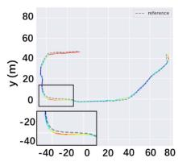</p>
<p>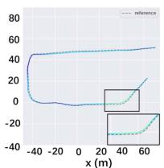</p>
<p>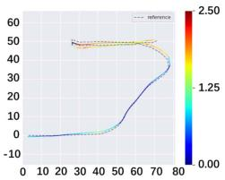<br />
(a)</p>
<p>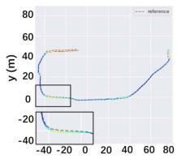</p>
<p>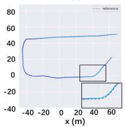<br />
(b)</p>
<p>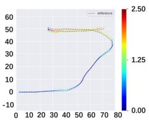</p>
<p>Fig. 15. Error visualization of Scan Context++ (PC) integrated SLAM system (top) compared to our approach (bottom) on legged robot dataset. (a) SC++ SLAM. (b) RING++ SLAM.<br />
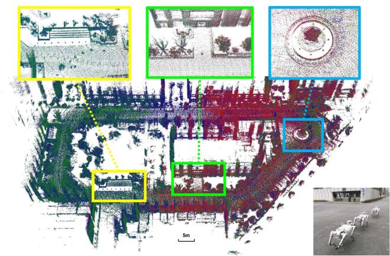<br />
Fig. 16. Qualitative results of our RING++ SLAM on the legged robot dataset. Different colored points are generated from different legged robots.</p>
<h2>B. Multisession SLAM System</h2>
<p>Another application of RING++ is multisession SLAM. It differs from a multirobot SLAM system in the changing environment. The chosen NCLT dataset contains a wide range of environmental changes, such as dynamic objects, seasonal changes like winter and summer, and structural changes like building construction. We evaluate our system on “2012-05-26” and “2012-03-17.” The data from these sessions are processed online at the same time, indicating a multirobot setup. The Li-DAR points replayed online are from different sessions, forming a challenging temporal/spatial multiagent setup. To maintain a sparse representation for the very large environment, we generate keyframes at 5-m intervals. The performance can be seen in Table IX and Fig. 17; RING++ provides almost twice the number of loop closures than Scan Context++ (PC), thus having better performance. The mapping result is shown in Fig. 18, where two different colored points represent two NCLT dataset sequences. The overlapping landmarks in magnified figures indicate the low drift of our system. It should be noted that FAST-LIO2 failed to provide acceptable odometry in the final minutes of the NCLT dataset, so those parts were discarded in the evaluation.</p>
<p>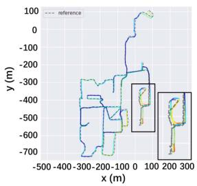</p>
<p>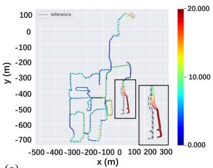<br />
(a)</p>
<p>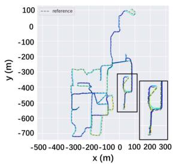</p>
<p>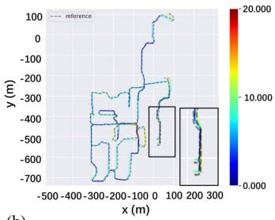<br />
(b)</p>
<p>Fig. 17. Error visualization of Scan Context++ (PC) integrated SLAM system (top) compared to our approach (bottom) on two sequences of NCLT dataset. (left:“2012-05-26”, right:“2012-03-17”). (a) SC++ SLAM. (b) RING++ SLAM.<br />
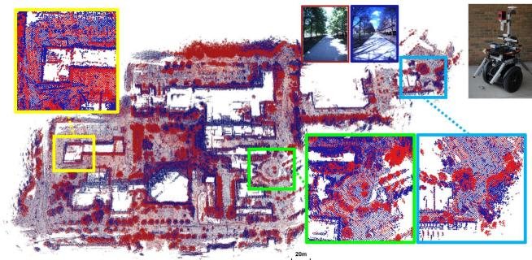<br />
Fig. 18. Qualitative results of our RING++ SLAM on the NCLT dataset. Red points are generated from “2012-05-26,” while blue points are generated from “2012-03-17.”</p>
<h2>IX. CONCLUSION</h2>
<p>In this article, we presented a roto-translation-invariant framework RING++ for global localization on the sparse scan map, including representation pass and solving pass. Specifically, we extracted six local features with geometry information and aggregated the features into three representations in the representation pass: rotation-equivariant SG, translation-invariant and rotation-equivariant TING, and roto-translation-invariant RING. In the solving pass, we performed place recognition, rotation estimation, translation estimation, and pose refinement. Thanks to roto-translation-invariant representation, RING++ achieved superior performance on benchmark datasets, outperforming the state-of-the-art methods. By integrating RING++ as a stand-alone loop closure detection module into SLAM systems, we validated the effectiveness of our approach without any prior knowledge in real scenarios.</p>
<h2>REFERENCES</h2>
<p>[1] C. Valgren and A. J. Lilienthal, “SIFT, SURF and seasons: Long-term outdoor localization using local features,” in Proc. 3rd Eur. Conf. Mobile Robots, 2007, pp. 253–258.</p>
<p>[2] S. Lowry et al., “Visual place recognition: A survey,” IEEE Trans. Robot., vol. 32, no. 1, pp. 1–19, Feb. 2016.</p>
<p>[3] G. Kim and A. Kim, “Scan context: Egocentric spatial descriptor for place recognition within 3D point cloud map,” in Proc. IEEE/RSJ Int. Conf. Intell. Robots Syst., 2018, pp. 4802–4809.</p>
<p>[4] Y. Wang, Z. Sun, C.-Z. Xu, S. E. Sarma, J. Yang, and H. Kong, “LiDAR iris for loop-closure detection,” in Proc. IEEE/RSJ Int. Conf. Intell. Robots Syst., 2020, pp. 5769–5775.</p>
<p>[5] K. Vidanapathirana, P. Moghadam, B. Harwood, M. Zhao, S. Sridharan, and C. Fookes, “Locus: LiDAR-based place recognition using spatiotemporal higher-order pooling,” in Proc. IEEE Int. Conf. Robot. Autom., 2021, pp. 5075–5081.</p>
<p>[6] J. Komorowski, “MinkLoc3D: Point cloud based large-scale place recognition,” in Proc. IEEE/CVF Winter Conf. Appl. Comput. Vis., 2021, pp. 1790– 1799.</p>
<p>[7] T. Röhling, J. Mack, and D. Schulz, “A fast histogram-based similarity measure for detecting loop closures in 3-D LIDAR data,” in Proc. IEEE/RSJ Int. Conf. Intell. Robots Syst., 2015, pp. 736–741.</p>
<p>[8] L. He, X. Wang, and H. Zhang, “M2DP: A novel 3D point cloud descriptor and its application in loop closure detection,” in Proc. IEEE/RSJ Int. Conf. Intell. Robots Syst., 2016, pp. 231–237.</p>
<p>[9] M. A. Uy and G. H. Lee, “PointNetVLAD: Deep point cloud based retrieval for large-scale place recognition,” in Proc. IEEE Conf. Comput. Vis. Pattern Recognit., 2018, pp. 4470–4479.</p>
<p>[10] Z. Liu et al., “LPD-Net: 3D point cloud learning for large-scale place recognition and environment analysis,” in Proc. IEEE/CVF Int. Conf. Comput. Vis., 2019, pp. 2831–2840.</p>
<p>[11] G. Kim, S. Choi, and A. Kim, “Scan context++: Structural place recognition robust to rotation and lateral variations in urban environments,” IEEE Trans. Robot., vol. 38, no. 3, pp. 1856–1874, Jun. 2022.</p>
<p>[12] S. Lu, X. Xu, H. Yin, R. Xiong, and Y. Wang, “One RING to rule them all: Radon sinogram for place recognition, orientation and translation estimation,” in Proc. IEEE/RSJ Int. Conf. Intell. Robots Syst., 2022, pp. 2778–2785.</p>
<p>[13] F. Stein and G. Medioni, “Structural indexing: Efficient 3-D object recognition,” IEEE Trans. Pattern Anal. Mach. Intell., vol. 14, no. 2, pp. 125–145, Feb. 1992.</p>
<p>[14] R. B. Rusu, N. Blodow, Z. C. Marton, and M. Beetz, “Aligning point cloud views using persistent feature histograms,” in Proc. IEEE/RSJ Int. Conf. Intell. Robots Syst., 2008, pp. 3384–3391.</p>
<p>[15] M. Weinmann, B. Jutzi, and C. Mallet, “Semantic 3D scene interpretation: A framework combining optimal neighborhood size selection with relevant features,” ISPRS Ann. Photogrammetry, Remote Sens. Spatial Inf. Sci., vol. 2, no. 3, pp. 181–188, 2014.</p>
<p>[16] A. E. Johnson and M. Hebert, “Using spin images for efficient object recognition in cluttered 3D scenes,” IEEE Trans. Pattern Anal. Mach. Intell., vol. 21, no. 5, pp. 433–449, May 1999.</p>
<p>[17] W. Wohlkinger and M. Vincze, “Ensemble of shape functions for 3D object classification,” in Proc. IEEE Int. Conf. Robot. Biomimetics, 2011, pp. 2987–2992.</p>
<p>[18] F. Tombari, S. Salti, and L. D. Stefano, “A combined texture-shape descriptor for enhanced 3D feature matching,” in Proc. IEEE 18th Int. Conf. Image Process., 2011, pp. 809–812.</p>
<p>[19] F. Tombari, S. Salti, and L. d. Stefano, “SHOT: Unique signatures of histograms for surface and texture description,” Comput. Vis. Image Understanding, vol. 125, pp. 251–264, 2014.</p>
<p>[20] D. Maturana and S. Scherer, “VoxNet: A 3D convolutional neural network for real-time object recognition,” in Proc. IEEE/RSJInt. Conf. Intell. robots Syst., 2015, pp. 922–928.</p>
<p>[21] Z. Wu et al., “3D ShapeNets: A deep representation for volumetric shapes,” in Proc. IEEE Conf. Comput. Vis. Pattern Recognit., 2015, pp. 1912–1920.</p>
<p>[22] Y. Zhou and O. Tuzel, “VoxelNet: End-to-end learning for point cloud based 3D object detection,” in Proc. IEEE Conf. Comput. Vis. Pattern Recognit., 2018, pp. 4490–4499.</p>
<p>[23] C. R. Qi, H. Su, K. Mo, and L. J. Guibas, “PointNet: Deep learning on point sets for 3D classification and segmentation,” in Proc. IEEE Conf. Comput. Vis. Pattern Recognit., 2017, pp. 652–660.</p>
<p>[24] C. R. Qi, L. Yi, H. Su, and L. J. Guibas, “PointNet++: Deep hierarchical feature learning on point sets in a metric space,” in Proc. Annu. Conf. Neural Inf. Process. Syst., 2017, pp. 5105–5114.</p>
<p>[25] Y. Wang, Y. Sun, Z. Liu, S. E. Sarma, M. M. Bronstein, and J. M. Solomon, “Dynamic graph CNN for learning on point clouds,” ACM Trans. Graph., vol. 38, no. 5, pp. 1–12, 2019.</p>
<p>[26] Y. Shen, C. Feng, Y. Yang, and D. Tian, “Mining point cloud local structures by kernel correlation and graph pooling,” in Proc. IEEE Conf. Comput. Vis. Pattern Recognit., 2018, pp. 4548–4557.</p>
<p>[27] X. Chen et al., “OverlapNet: Loop closing for LiDAR-based SLAM,” in Proc. Robot. Sci. Syst., 2020.</p>
<p>[28] L. Li et al., “SSC: Semantic scan context for large-scale place recognition,” in Proc. IEEE/RSJ Int. Conf. Intell. Robots Syst., 2021, pp. 2092–2099.</p>
<p>[29] J. Komorowski, M. Wysocza ´nska, and T. Trzcinski, “MinkLoc++: LIDAR and monocular image fusion for place recognition,” in Proc. Int. Joint Conf. Neural Netw., 2021, pp. 1–8.</p>
<p>[30] Y. Pan, X. Xu, W. Li, Y. Cui, Y. Wang, and R. Xiong, “CORAL: Colored structural representation for bi-modal place recognition,” in Proc. IEEE/RSJ Int. Conf. Intell. Robots Syst., 2021, pp. 2084–2091.</p>
<p>[31] H. Lai, P. Yin, and S. Scherer, “AdaFusion: Visual-LiDAR fusion with adaptive weights for place recognition,” IEEE Robot.Automat. Lett., vol. 7, no. 4, pp. 12038–12045, 2022.</p>
<p>[32] J. Knopp, M. Prasad, G. Willems, R. Timofte, and L. V. Gool, “Hough transform and 3D SURF for robust three dimensional classification,” in Proc. Eur. Conf. Comput. Vis., 2010, pp. 589–602.</p>
<p>[33] H. Bay, T. Tuytelaars, and L. V. Gool, “SURF: Speeded up robust features,” in Proc. Eur. Conf. Comput. Vis., 2006, pp. 404–417.</p>
<p>[34] R. B. Rusu, N. Blodow, and M. Beetz, “Fast point feature histograms (FPFH) for 3D registration,” in Proc. IEEE Int. Conf. Robot. Autom., 2009, pp. 3212–3217.</p>
<p>[35] R. B. Rusu, G. Bradski, R. Thibaux, and J. Hsu, “Fast 3D recognition and pose using the viewpoint feature histogram,” in Proc. IEEE/RSJ Int. Conf. Intell. Robots Syst., 2010, pp. 2155–2162.</p>
<p>[36] R. Arandjelovic, P. Gronat, A. Torii, T. Pajdla, and J. Sivic, “NetVLAD: CNN architecture for weakly supervised place recognition,” in Proc. IEEE Conf. Comput. Vis. Pattern Recognit., 2016, pp. 5297–5307.</p>
<p>[37] H. Jégou, M. Douze, C. Schmid, and P. Pérez, “Aggregating local descriptors into a compact image representation,” in Proc. IEEE Comput. Soc. Conf. Comput. Vis. Pattern Recognit., 2010, pp. 3304–3311.</p>
<p>[38] X. Xu, H. Yin, Z. Chen, Y. Li, Y. Wang, and R. Xiong, “DiSCO: Differentiable scan context with orientation,” IEEE Robot. Autom. Lett., vol. 6, no. 2, pp. 2791–2798, Apr. 2021.</p>
<p>[39] K. Zywanowski, A. Banaszczyk, M. R. Nowicki, and J. Komorowski,<sup>˙</sup> “MinkLoc3D-SI: 3D LiDAR place recognition with sparse convolutions, spherical coordinates, and intensity,” IEEE Robot. Autom. Lett., vol. 7, no. 2, pp. 1079–1086, Apr. 2022.</p>
<p>[40] J. Komorowski, M. Wysoczanska, and T. Trzcinski, “EgoNN: Egocentric neural network for point cloud based 6DoF relocalization at the city scale,” IEEE Robot. Autom. Lett., vol. 7, no. 2, pp. 722–729, Apr. 2022.</p>
<p>[41] F. Radenovi´c, G. Tolias, and O. Chum, “Fine-tuning CNN image retrieval with no human annotation,” IEEE Trans. Pattern Anal. Mach. Intell., vol. 41, no. 7, pp. 1655–1668, Jul. 2019.</p>
<p>[42] H. Yin, L. Tang, X. Ding, Y. Wang, and R. Xiong, “LocNet: Global localization in 3D point clouds for mobile vehicles,” in Proc. IEEE Intell. Veh. Symp., 2018, pp. 728–733.</p>
<p>[43] X. Ding et al., “Translation invariant global estimation of heading angle using sinogram of LiDAR point cloud,” in Proc. Int. Conf. Robot. Autom., 2022, pp. 2207–2214.</p>
<p>[44] X. Xu, “Supplementary material for RING++: Roto-translation invariant gram for global localization on a sparse scan map,” 2023. [Online]. Available: https://drive.google.com/file/d/1PuYDx3__ J5tk8Dg3ToKPzLGKv5iWqMUt/view?usp=share_link</p>
<p>[45] W. Lu, Y. Zhou, G. Wan, S. Hou, and S. Song, “L3-Net: Towards learning based LiDAR localization for autonomous driving,” in Proc. IEEE/CVF Conf. Comput. Vis. Pattern Recognit., 2019, pp. 6389–6398.</p>
<p>[46] P. J. Besl and N. D. McKay, “Method for registration of 3-D shapes,” in Sensor Fusion IV: Control Paradigms and Data Structures, vol. 1611. Bellingham, WA, USA: SPIE, 1992, pp. 586–606.</p>
<p>[47] I. Sipiran and B. Bustos, “Harris 3D: A robust extension of the Harris operator for interest point detection on 3D meshes,” Vis. Comput., vol. 27, no. 11, pp. 963–976, 2011.</p>
<p>[48] R. Arandjelovic and A. Zisserman, “All about VLAD,” in Proc. IEEE Conf. Comput. Vis. Pattern Recognit., 2013, pp. 1578–1585.</p>
<p>[49] P. Scovanner, S. Ali, and M. Shah, “A 3-dimensional sift descriptor and its application to action recognition,” in Proc. 15th ACM Int. Conf. Multimedia, 2007, pp. 357–360.</p>
<p>[50] N. Carlevaris-Bianco, A. K. Ushani, and R. M. Eustice, “University of Michigan north campus long-term vision and LiDAR dataset,” Int. J. Robot. Res., vol. 35, no. 9, pp. 1023–1035, 2016.</p>
<p>[51] G. Kim, Y. S. Park, Y. Cho, J. Jeong, and A. Kim, “MulRan: Multimodal range dataset for urban place recognition,” in Proc. IEEE Int. Conf. Robot. Autom., 2020, pp. 6246–6253.</p>
<p>[52] D. Barnes, M. Gadd, P. Murcutt, P. Newman, and I. Posner, “The Oxford Radar RobotCar Dataset: A radar extension to the Oxford RobotCar Dataset,” in Proc. IEEE Int. Conf. Robot. Autom., 2020, pp. 6433–6438.</p>
<p>[53] W. Maddern, G. Pascoe, C. Linegar, and P. Newman, “1 year, 1000 km: The Oxford RobotCar Dataset,” Int. J. Robot. Res., vol. 36, no. 1, pp. 3–15, 2017.</p>
<p>[54] V. Raghavan, P. Bollmann, and G. S. Jung, “A critical investigation of recall and precision as measures of retrieval system performance,” ACM Trans. Inf. Syst., vol. 7, no. 3, pp. 205–229, 1989.</p>
<p>[55] D. M. Christopher and S. Hinrich, Foundations of Statistical Natural Language Processing. Cambridge, MA, USA: MIT Press, 1999.</p>
<p>[56] H. Schütze, C. D. Manning, and P. Raghavan, Introduction to Information Retrieval, vol. 39. Cambridge, U.K.: Cambridge Univ. Press, 2008.</p>
<p>[57] D. Cattaneo, M. Vaghi, and A. Valada, “LCDNet: Deep loop closure detection for LiDAR SLAM based on unbalanced optimal transport,” 2021.</p>
<p>[58] H. Wang, C. Wang, and L. Xie, “Intensity scan context: Coding intensity and geometry relations for loop closure detection,” in Proc. IEEE Int. Conf. Robot. Autom., 2020, pp. 2095–2101.</p>
<p>[59] D. Cattaneo, M. Vaghi, and A. Valada, “LCDNet: Deep loop closure detection and point cloud registration for LiDAR SLAM,” IEEE Trans. Robot., vol. 38, no. 4, pp. 2074–2093, Aug. 2022.</p>
<p>[60] K. Koide, M. Yokozuka, S. Oishi, and A. Banno, “Voxelized GICP for fast and accurate 3D point cloud registration,” in Proc. IEEE Int. Conf. Robot. Autom., 2021, pp. 11054–11059.</p>
<p>[61] Z. Zhang, “Iterative point matching for registration of free-form curves and surfaces,” Int. J. Comput. Vis., vol. 13, no. 2, pp. 119–152, 1994.</p>
<p>[62] H. Yang, J. Shi, and L. Carlone, “TEASER: Fast and certifiable point cloud registration,” IEEE Trans. Robot., vol. 37, no. 2, pp. 314–333, Apr. 2021.</p>
<p>[63] A.-Q. Cao, G. Puy, A. Boulch, and R. Marlet, “PCAM: Product of cross-attention matrices for rigid registration of point clouds,” in Proc. IEEE/CVF Int. Conf. Comput. Vis., 2021, pp. 13229–13238.</p>
<p>[64] Q.-Y. Zhou, J. Park, and V. Koltun, “Open3D: A modern library for 3D data processing,” 2018, arXiv:1801.09847.</p>
<p>[65] S. Lu, X. Xu, L. Tang, R. Xiong, and Y. Wang, “DeepRING: Learning rototranslation invariant representation for LiDAR based place recognition,” in Proc. IEEE Int. Conf. Robot. Automat., 2023, pp. 1904–1911.</p>
<p>[66] F. Dellaert, “Factor graphs and GTSAM: A hands-on introduction,” Center Robot. Intell. Mach., Georgia Inst. Technol., Atlanta, GA, USA, Tech. Rep. GT-RIM-CP&amp;R-2012-002, 2012.</p>
<p>[67] W. Xu, Y. Cai, D. He, J. Lin, and F. Zhang, “FAST-LIO2: Fast direct LiDAR-inertial odometry,” IEEE Trans. Robot., vol. 38, no. 4, pp. 2053–2073, Aug. 2022.</p>
<p>[68] C. D. Bellicoso et al., “Advances in real-world applications for legged robots,” J. Field Robot., vol. 35, no. 8, pp. 1311–1326, 2018.</p>
<p></p>
<p></p>
<p></p>
<p>[69] K. Koide, J. Miura, M. Yokozuka, S. Oishi, and A. Banno, “Interactive 3D graph SLAM for map correction,” IEEE Robot. Autom. Lett., vol. 6, no. 1, pp. 40–47, Jan. 2021.</p>
<p>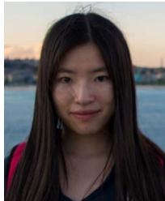</p>
<p>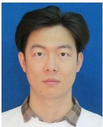<br />
Xuecheng Xu received the B.S. degree in control science and engineering from the Department of Control Science and Engineering, Zhejiang University, Hangzhou, China, in 2019, where he is currently working toward the Ph.D. degree with the State Key Laboratory of Industrial Control Technology and Institute of Cyber-Systems and Control.<br />
His current research interests include LiDAR simultaneous localization and mapping and multirobot systems.</p>
<p></p>
<p>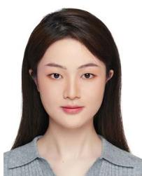</p>
<p>Sha Lu received the B.S. degree in mechanical engineering from the CQU-UC Joint Co-op Institute, Chongqing University, Chongqing, China, in 2021. She is currently working toward the Ph.D. degree with the State Key Laboratory of Industrial Control Technology and Institute of Cyber-Systems and Control, Zhejiang University, Hangzhou, China.</p>
<p>Jun Wu received the M.E. degree in control engineering in 2018 from Zhejiang University, Hangzhou, China, where she is currently working toward the Ph.D. degree with the State Key Laboratory of Industrial Control Technology and Institute of Cyber-Systems and Control.</p>
<p>Her research interests include robotics and deep learning, with a focus on LiDAR simultaneous localization and mapping.</p>
<p></p>
<p>Her research interests include robotics perception.</p>
<p>Haojian Lu (Member, IEEE) received the B.Eng. degree in mechatronics engineering from the Beijing Institute of Technology, Beijing, China, in 2015, and the Ph.D. degree in robotics from the City University of Hong Kong, Hong Kong, in 2019.</p>
<p>Yiyi Liao received the Ph.D. degree in control science and engineering from the Department of Control Science and Engineering, Zhejiang University, Hangzhou, China, in 2018.</p>
<p>He is currently a Professor with the State Key Laboratory of Industrial Control and Technology and Institute of Cyber-Systems and Control, Zhejiang University, Hangzhou, China. His research interests include micro/nanorobotics, bioinspired robotics, medical robotics, micro aerial vehicle, and soft robotics.</p>
<p>From 2018 to 2021, she was a Postdoctoral Researcher with the Autonomous Vision Group, University of Tubingen, Tübingen, Germany, and Max Planck Institute for Intelligent Systems, Tübingen. She is currently an Assistant Professor with Zhejiang University. Her research interests include 3-D vision and scene understanding.</p>
<p>Qiuguo Zhu received the B.Eng. degree in mechanical engineering in 2008, the M.Eng. and Ph.D. degrees in control science and engineering from Zhejiang University, Hangzhou, China, in 2011 and 2020, respectively.</p>
<p>He is currently an Associate Professor with the Department of Control Science, Zhejiang University, Hangzhou, China. His research interests include the control of humanoid robots, bipedal and quadrupedal walking and running, manipulators, rehabilitation exoskeletons, and machine intelligence.</p>
<p>Rong Xiong (Senior Member, IEEE) received the Ph.D. degree in control science and engineering from the Department of Control Science and Engineering, Zhejiang University, Hangzhou, China, in 2009.</p>
<p>She is currently a Professor with the Department of Control Science and Engineering, Zhejiang University. Her current research interests include motion planning and simultaneous localization and mapping.</p>
<p>Yue Wang (Member, IEEE) received the Ph.D. degree in control science and engineering from the Department of Control Science and Engineering, Zhejiang University, Hangzhou, China, in 2016.</p>
<p>He is currently an Associate Professor with the Department of Control Science and Engineering, Zhejiang University. His current research interests include mobile robotics and robot perception.</p>
<div class="foot">本页由 <code>md/2023_RING____Roto-Translation_Invariant_Gram_for_Global_Local.md</code> 预渲染生成（OCR 语料，插图取自原文）。
公式以 MathML 呈现，浏览器原生渲染，不依赖外部脚本或字体 CDN。</div>
</main>
</body>
</html>
